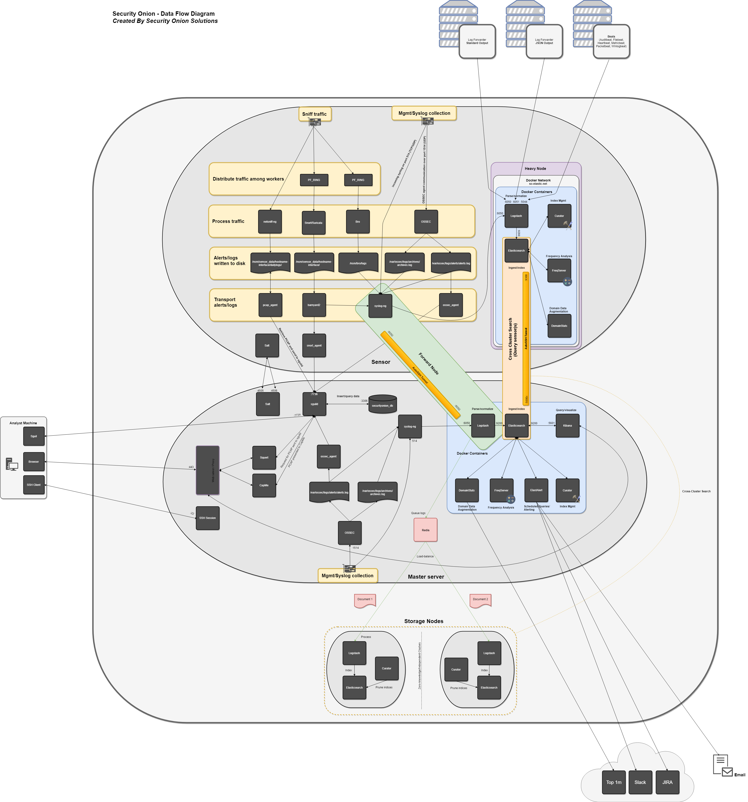
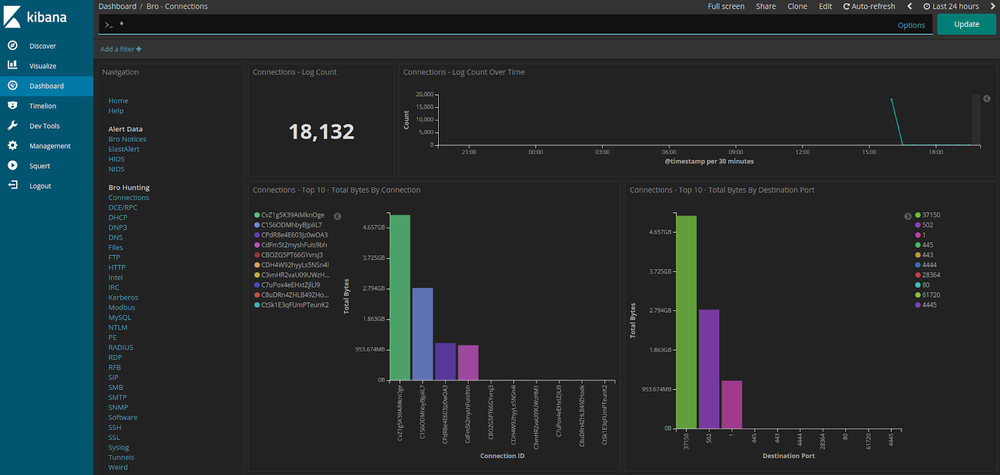
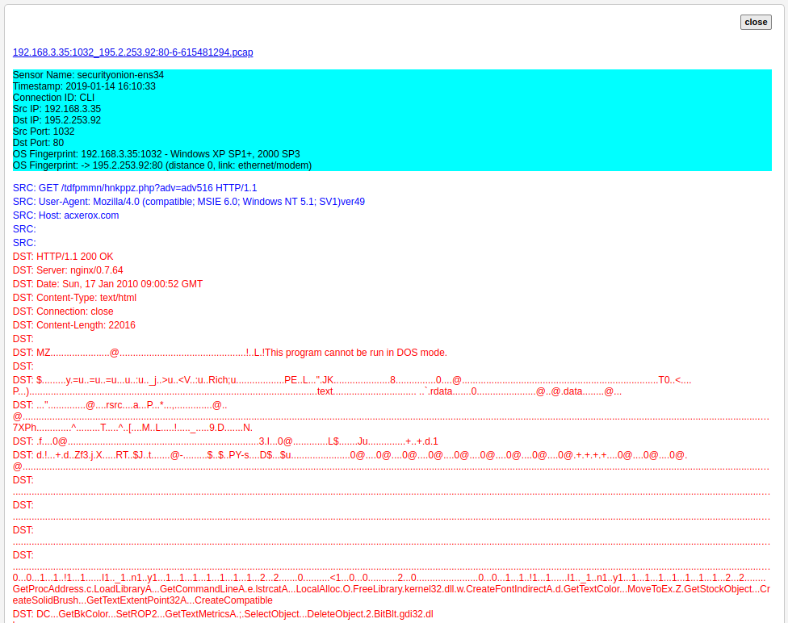
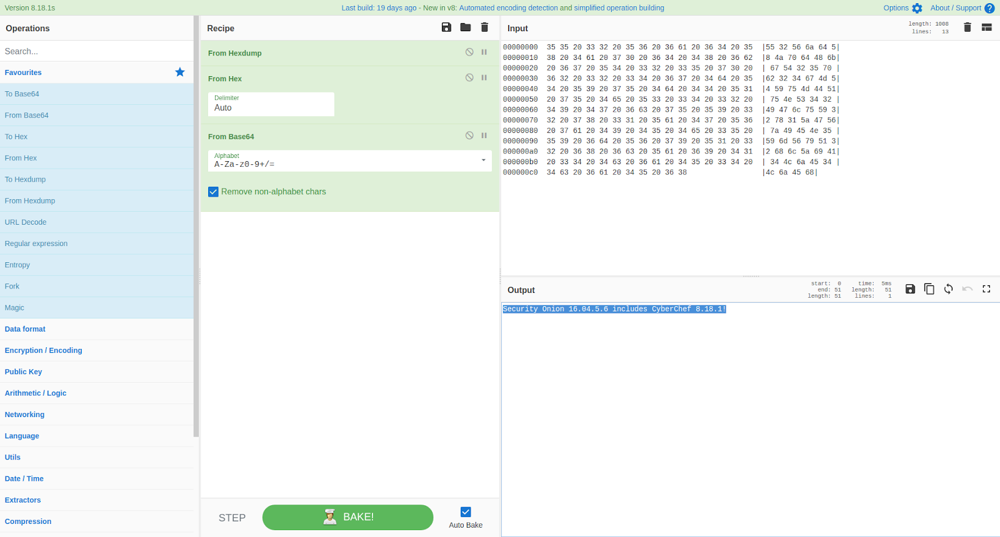
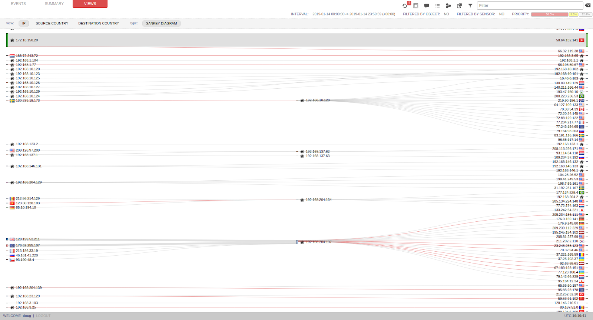
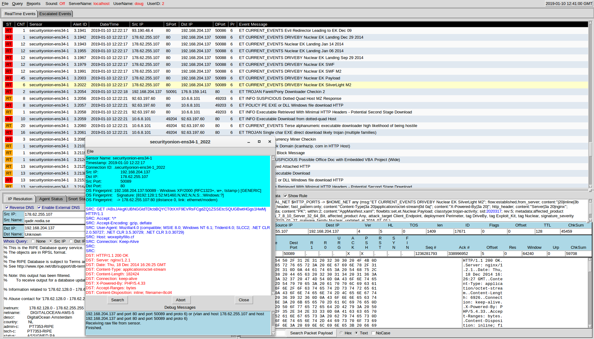
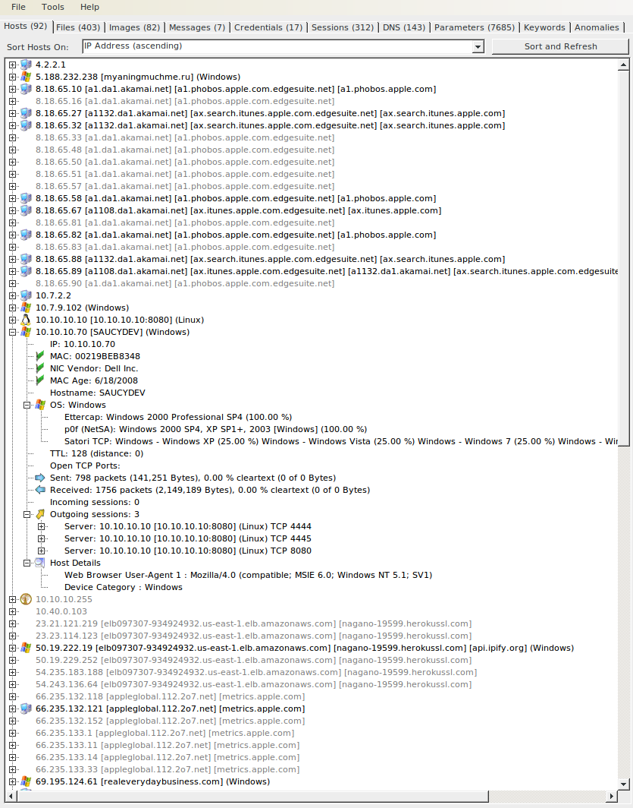
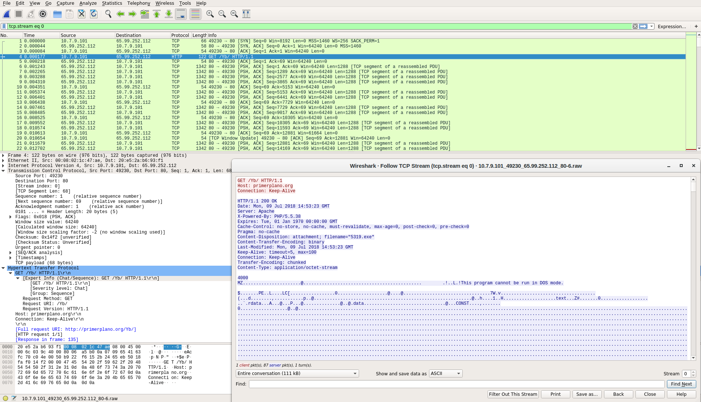
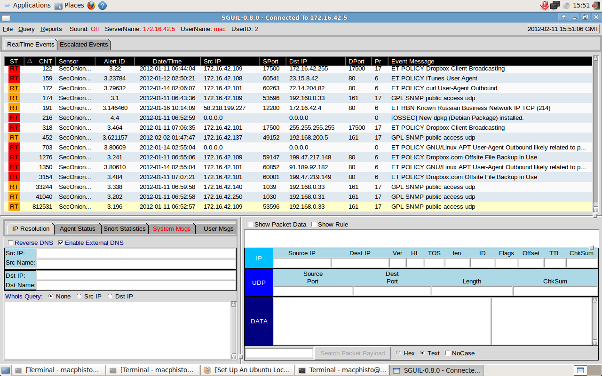

Security Onion Documentation¶
About¶
Security Onion¶
Security Onion is a free and open source Linux distribution for intrusion detection, enterprise security monitoring, and log management. It includes Elasticsearch, Logstash, Kibana, Snort, Suricata, Bro, Wazuh, Sguil, Squert, CyberChef, NetworkMiner, and many other security tools. The easy-to-use Setup wizard allows you to build an army of distributed sensors for your enterprise in minutes!
For more information about Security Onion not contained in this Documentation, please see our community site at https://securityonion.net.
Security Onion Solutions, LLC¶
Doug Burks started Security Onion as a free and open source project in 2008 and then founded Security Onion Solutions, LLC in 2014.
Security Onion Solutions, LLC is the only official provider of training, professional services, and hardware appliances for Security Onion.
For more information about these products and services, please see our corporate site at https://securityonionsolutions.com.
Documentation¶
Formats¶
This documentation is published online at https://securityonion.net/docs. If you are viewing an offline version of this documentation but have Internet access, you might want to switch to the online version at https://securityonion.net/docs to see the latest version.
Authors¶
Security Onion Solutions is the primary author and maintainer of this documentation. Some content has been contributed by members of our community. Thanks to all the folks who have contributed to this documentation over the years!
Contributing¶
We welcome your contributions to our documentation! We will review any suggestions and apply them if appropriate.
If you are accessing the online version of the documentation and notice that a particular page has incorrect information, you can submit corrections by clicking the Edit on GitHub button in the upper right corner of each page.
Naming Convention¶
Our goal is to allow you to easily guess and type the URL of the documentation you want to go to.
To achieve this goal, new documentation pages should use the following naming convention:
- all lowercase
.rstfile extension- ideally, the name of the page should be one simple word (for example:
suricata.rst) - try to avoid symbols if possible
- if symbols are required, use hyphens (NOT underscores)
Introduction¶
Network Security Monitoring (NSM) is, put simply, monitoring your network for security related events. It might be proactive, when used to identify vulnerabilities or expiring SSL certificates, or it might be reactive, such as in incident response and network forensics. Whether you’re tracking an adversary or trying to keep malware at bay, NSM provides context, intelligence and situational awareness of your network. Enterprise Security Monitoring (ESM) takes NSM to the next level and includes endpoint visibility and other telemetry from your enterprise. There are some commercial solutions that get close to what Security Onion provides, but very few contain the vast capabilities of Security Onion in one package.
Many assume NSM is a solution they can buy to fill a gap; purchase and deploy solution XYZ and problem solved. The belief that you can buy an NSM denies the fact that the most important word in the NSM acronym is “M” for Monitoring. Data can be collected and analyzed, but not all malicious activity looks malicious at first glance. While automation and correlation can enhance intelligence and assist in the process of sorting through false positives and malicious indicators, there is no replacement for human intelligence and awareness. I don’t want to disillusion you. Security Onion isn’t a silver bullet that you can setup, walk away from and feel safe. Nothing is and if that’s what you’re looking for you’ll never find it. Security Onion will provide visibility into your network traffic and context around alerts and anomalous events, but it requires a commitment from you the administrator or analyst to review alerts, monitor the network activity, and most importantly, have a willingness, passion and desire to learn.
Core Components¶
Security Onion seamlessly weaves together three core functions:
- full packet capture;
- network-based and host-based intrusion detection systems (NIDS and HIDS, respectively);
- and powerful analysis tools.
Full-packet capture is accomplished via netsniff-ng, “the packet sniffing beast”. netsniff-ng captures all the network traffic your Security Onion sensors see and stores as much of it as your storage solution will hold (Security Onion has a built-in mechanism to purge old data before your disks fill to capacity). Full packet capture is like a video camera for your network, but better because not only can it tell us who came and went, but also exactly where they went and what they brought or took with them (exploit payloads, phishing emails, file exfiltration). It’s a crime scene recorder that can tell us a lot about the victim and the white chalk outline of a compromised host on the ground. There is certainly valuable evidence to be found on the victim’s body, but evidence at the host can be destroyed or manipulated; the camera doesn’t lie, is hard to deceive, and can capture a bullet in transit.
Network-based and host-based intrusion detection systems (IDS) analyze network traffic or host systems, respectively, and provide log and alert data for detected events and activity. Security Onion provides multiple IDS options:
NIDS:
- Rule-driven NIDS. For rule-driven network intrusion detection, Security Onion offers the choice of Snort or Suricata. Rule-based systems look at network traffic for fingerprints and identifiers that match known malicious, anomalous or otherwise suspicious traffic. You might say that they’re akin to antivirus signatures for the network, but they’re a bit deeper and more flexible than that.
- Analysis-driven NIDS. For analysis-driven network intrusion detection, Security Onion offers Bro (Zeek). Unlike rule-based systems that look for needles in the haystack of data, Bro says, “Here’s all your data and this is what I’ve seen. Do with it what you will and here’s a framework so you can.” Bro monitors network activity and logs any connections, DNS requests, detected network services and software, SSL certificates, and HTTP, FTP, IRC SMTP, SSH, SSL, and Syslog activity that it sees, providing a real depth and visibility into the context of data and events on your network. Additionally, Bro includes analyzers for many common protocols and by default has the capacity to check MD5 sums for HTTP file downloads against Team Cymru’s Malware Hash Registry project. Beyond logging activity and traffic analyzers, the Bro framework provides a very extensible way to analyze network data in real time. The input framework allows you to feed data into Bro, which can be scripted, for example, to read a comma delimited file of C-level employee usernames and correlate that against other activity, such as when they download an executable file from the Internet. The file analysis framework provides protocol independent file analysis, allowing you to capture files as they pass through your network and automatically pass them to a sandbox or a file share for antivirus scanning. The flexibility of Bro makes it an incredibly powerful ally in your defense.
HIDS:
- For host-based intrusion detection, Security Onion offers Wazuh, a free, open source HIDS for Windows, Linux and Mac OS X. When you add the Wazuh agent to endpoints on your network, you gain invaluable visibility from endpoint to your network’s exit point. Wazuh performs log analysis, file integrity checking, policy monitoring, rootkit detection, real-time alerting and active response. As an analyst, being able to correlate host-based events with network-based events can be the difference in identifying a successful attack.
In addition to the above, Security Onion can collect data via syslog or other agent transport.
Analysis Tools¶
With full packet capture, IDS logs and Bro data, there is a daunting amount of data available at the analyst’s fingertips. Fortunately, Security Onion integrates the following tools to help make sense of this data:
- Sguil, created by Bamm Visscher, is “The Analyst Console for Network Security Monitoring.” It is the analyst’s right hand, providing visibility into the event data being collected and the context to validate the detection. Sguil provides a single GUI in which to view Snort, Suricata, and Wazuh alerts. More importantly, Sguil allows you to pivot directly from an alert into a packet capture (via Wireshark or NetworkMiner) or a transcript of the full session that triggered the alert. So, instead of seeing only an individual packet associated with an alert and being left with the unanswerable question, “What now?” or “What happened next?,” you can view all of the associated traffic and actually answer that question. Sguil differs from other alert interfaces in that it allows collaboration among analysts by allowing alerts to be commented on and escalated to more senior analysts who can take action on the alerts.
- Squert, originally developed by Paul Halliday, is a web application interface to the Sguil database. Although it is neither meant to be a real-time (or near real-time) interface nor a replacement for Sguil, it allows querying of the Sguil database and provides several visualization options for the data such as “time series representations, weighted and logically grouped result sets” and geo-IP mapping. Squert can pivot to full packet capture via CapMe.
- Kibana, created by the team at Elastic, allows us to quickly analyze and pivot between all of the different data types generated by Security Onion through a “single pane of glass”. This includes not only NIDS/HIDS alerts, but also Bro logs and system logs collected via syslog or other agent transport. Kibana can pivot to full packet capture via CapMe.
- CapMe, originally developed by Paul Halliday, allows you to view PCAP transcripts and download full PCAP files. Squert and Kibana are pre-configured to pivot to CapMe to retrieve full packet capture.
Deployment Scenarios¶
Analysts around the world are using Security Onion today for many different use cases and architectures. The Security Onion Setup wizard allows you to easily configure the best installation scenario to suit your needs.
Conclusion¶
So we have full packet capture, Snort or Suricata rule-driven intrusion detection, Bro event-driven intrusion detection and Wazuh host-based intrusion detection, all running out of the box once you run Security Onion setup. These disparate systems with various dependencies and complexities all run seamlessly together and would otherwise take hours, days or weeks to assemble and integrate on their own. What was once a seemingly impossible task is now as easy as answering a few questions.
Getting Started¶
This section will give you an overview of different use cases for Security Onion and how you might install and configure Security Onion to handle those use cases.
Use Cases¶
Security Onion is designed for many different use cases! When you run Setup, it will ask you if you want Evaluation Mode or Production Mode. Each of these modes presents different options that may be applicable to different use cases. Here are just a few examples.
Classroom¶
Evaluation Mode is ideal for classroom or small lab environments.
Install Security Onion. Run Setup and configure network interfaces. Reboot, run Setup again, and then choose Evaluation Mode.
For more information, please see the Quick Evaluation section.
Pcap Forensics¶
Need to review a pcap with original timestamps preserved? Install Security Onion in Evaluation Mode as described above and then run so-import-pcap.
Production Server - Standalone¶
Install Security Onion. Run Setup and configure network interfaces. Reboot, run Setup again, choose Production Mode, choose New Deployment, and enable network sensor services.
For more information, please see the Production Deployment section.
Production Server - Distributed Deployment¶
Install Security Onion on the master server box. Run Setup and configure network interfaces. Reboot, run Setup again, choose Production Mode, and then choose New Deployment.
Install Security Onion on one or more nodes and then on each one: run Setup, configure network interfaces, reboot, run Setup again, choose Production Mode, and then choose Existing Deployment to join to master.
For more information, please see the Production Deployment section.
Analyst VM¶
If you’ve built a Production Server as described above, you may want to connect to it using an Analyst VM. Install Security Onion in a VM on your local desktop or laptop. You do NOT need to run Setup in the Analyst VM since this VM won’t be running any services, only applications such as Sguil, Wireshark, NetworkMiner, and a web browser.
For more information, please see the Analyst-VM section.
Sending Logs to Separate SIEM¶
You can install Security Onion and then configure it to send logs to a separate SIEM.
For more information, please see the Syslog Output section.
Architecture¶
Below are several diagrams to represent the current architecture and deployment scenarios for Security Onion and the Elastic Stack.
{kind=link}
Core Components¶
- Logstash
- Parse and format logs.
- Elasticsearch
- Ingest and index logs.
- Kibana
- Visualize ingested log data.
Auxilliary Components¶
- Curator
- Manage indices through scheduled maintenance.
- ElastAlert
- Query Elasticsearch and alert on user-defined anomalous behavior or other interesting bits of information.
- FreqServer
- -Detect DGAs and find random file names, script names, process names, service names, workstation names, TLS certificate subjects and issuer subjects, etc.
- DomainStats
- Get additional info about a domain by providing additional context, such as creation time, age, reputation, etc.
Detailed Data Flow Diagram¶
{kind=link}
If you’re viewing the online version of this documentation, you can click the image to zoom in.
Deployment Types¶
Security Onion is built on a modified distributed client-server model. In the past, Security Onion relied solely on the use of a “sensor” (the client) and a Security Onion “server” (the server). With the inclusion of the Elastic Stack, the distributed architecture has since changed, and now includes the use of Elastic components and separate nodes for processing and storing Elastic stack data.
This means that a standard distributed deployment is now comprised of the master server, one or more forward nodes (previously called a sensor – runs sensor components), and one or more storage nodes (runs Elastic components). This architecture is ideal; while it may cost more upfront, this architecture provides for greater scalability and performance down the line, as one can simply “snap in” new storage nodes to handle more traffic or log sources.
There is the option to utilize only two node types – the master server and one or more heavy nodes, however, this is not recommended due to performance reasons, and should only be used for testing purposes or in low-throughput environments.
Last, similar to before, users can run a standalone, which combines the functions of a master server, forward node, and storage node. The same caveats with performance apply here. This type of deployment is typically used for testing, labs, POCs, or very low-throughput environments.
More detail about each deployment and node type can be found below.
Distributed¶
- Recommended deployment type
- Consists of a master server, one or more forward nodes, and one or more storage nodes.
{kind=link}
{kind=link}
{kind=link}
Node Types¶
Master¶
The master server runs it’s own local copy of Elasticsearch, which manages cross-cluster search configuration for the deployment. This includes configuration for heavy nodes and storage nodes (where applicable), but not forward nodes, as they do not run Elastic Stack components. An analyst connects to the server from a client workstation (typically a Security Onion virtual machine installation) to execute queries and retrieve data.
The Master Server runs the following components (Production Mode w/ Best Practices):
- Elasticsearch
- Logstash
- Kibana
- Curator
- Elastalert
- Redis (Only if configured to output to a storage node)
- OSSEC
- Sguild
Forward Node¶
When using a forward node, Elastic Stack components are not installed. Syslog-NG forwards all logs to Logstash on the master server via an autossh tunnel, where they are stored in Elasticsearch on the master server, or forwarded to storage node’s Elasticsearch instance (if the master server has been configured to use a storage node). From there, the data can be queried through the use of cross-cluster search.
Forward Nodes run the following components (Production Mode w/ Best Practices):
- Bro
- Snort/Suricata
- Netsniff-NG
- OSSEC
- Syslog-NG
Heavy Node¶
When using a heavy node, Security Onion implements distributed deployments using Elasticsearch’s cross cluster search. When you run Setup and choose Heavy Node, it will create a local Elasticsearch instance and then configure the master server to query that instance (similar to ELSA distributed deployments). This is done by constructing an autossh tunnel from the heavy node to the master server, configuring reverse port forwarding to allow the master server to connect to the local Elasticsearch instance, and updating _cluster/settings on the master server so that it will query the local Elasticsearch instance.
- Elasticsearch
- Logstash
- Curator
- Bro
- Snort/Suricata
- Netsniff-NG
- OSSEC
- Syslog-NG (forwards logs locally to Logstash)
Storage Node¶
Storage nodes extend the storage and processing capabilities of the master server. Just like heavy nodes, storage nodes are added to the master’s cluster search configuration, so the data that resides on the nodes can be queried from the master.
Storage Nodes run the following components (Production Mode w/ Best Practices):
- Elasticsearch
- Logstash
- Curator
- OSSEC
Hardware Requirements¶
32-bit vs 64-bit¶
Security Onion only supports 64-bit hardware.
UEFI¶
If your hardware has UEFI, please see https://help.ubuntu.com/community/UEFI.
UEFI Secure Boot¶
If your hardware has UEFI Secure Boot enabled, please see the Secure Boot section.
UPS¶
Like most IT systems, Security Onion has databases and those databases don’t like power outages or other ungraceful shutdowns. To avoid power outages and having to manually repair databases, please consider a UPS.
Elastic Stack¶
If you’re going to enable the Elastic Stack, please note that the MINIMUM requirements are 4 CPU cores and 8GB RAM. These requirements increase as you monitor more traffic and consume more logs.
Please refer to our Architecture Page for detailed deployment scenarios.
We recommend placing all Elastic storage on SSD or fast spinning disk in a RAID 10 configuration. This includes /nsm/elasticsearch and /nsm/logstash.
Standalone Deployments¶
In a standalone deployment, the master server components and the sensor components all run on a single box, therefore, your hardware requirements will reflect that. This deployment type is recommended for evaluation purposes, POCs (proof-of-concept) and small to medium size single sensor deployments. Although you can deploy Security Onion in this manner, it is recommended that you separate the backend components and sensor components.
- CPU: Used to parse incoming events, index incoming events, search metatadata, capture PCAP, analyze packets, and run the frontend components. As data and event consumption increases, a greater amount of CPU will be required.
- RAM: Used for Logstash, Elasticsearch, disk cache for Lucene, Snort/Suricata, Bro, Sguil, etc. The amount of available RAM will directly impact search speeds and reliability, as well as ability to process and capture traffic.
- Disk: Used for storage of indexed metadata. A larger amount of storage allows for a longer retention period. It is typically recommended to retain no more than 30 days of hot ES indices.
Please refer to our Architecture Page for detailed deployment scenarios.
Master server with local log storage¶
In an enterprise distributed deployment, a master server will store logs from itself and forward nodes. It can also act as a syslog destination for other log sources to be indexed into Elasticsearch. An enterprise master server should have 8 CPU cores at a minimum, 16-128GB RAM, and enough disk space (multiple terabytes recommended) to meet your retention requirements.
- CPU: Used to parse incoming events, index incoming events, search metadata. As consumption of data and events increases, more CPU will be required.
- RAM: Used for Logstash, Elasticsearch, and disk cache for Lucene. The amount of available RAM will directly impact search speeds and reliability.
- Disk: Used for storage of indexed metadata. A larger amount of storage allows for a longer retention period. It is typically recommended to retain no more than 30 days of hot ES indices.
Please refer to our Architecture Page for detailed deployment scenarios.
Master server with storage nodes¶
This deployment type utilizes storage nodes to parse and index of events. As a result, the hardware requirements of the master are reduced. An enterprise master server should have 4-8 CPU cores, 8-16GB RAM, and 100GB to 1TB of disk space. Many folks choose to host their master server in their VM farm since it has lower hardware requirements than sensors but needs higher reliability and availability.
- CPU: Used to receive incoming events and place them into Redis. Used to run all the front end web comp onents and aggregate search results from the storage nodes.
- RAM: Used for Logstash and Redis. The amount of available RAM directly impacts the size of the Redis queue.
- Disk: Used for general purposes, as well as storing dashboards and Sguil components.
Please refer to our Architecture Page for detailed deployment scenarios.
Storage Node¶
Storage nodes increase search and retention capacity with regard to Elasticsearch. These nodes parse and index events, and provide the ability to scale horizontally as overall data intake increases.
- CPU: Used to parse incoming events and index incoming events. As consumption of data and events increases, more CPU will be required.
- RAM: Used for Logstash, Elasticsearch, and disk cache for Lucene. The amount of available RAM will directly impact search speeds and reliability.
- Disk: Used for storage of indexed metadata. A larger amount of storage allows for a longer retention period. It is typically recommended to retain no more than 30 days of hot ES indices.
Please refer to our Architecture Page for detailed deployment scenarios.
Forward Node (Sensor)¶
A forward node runs sensor components only, and forwards metadata to the master server. All PCAP stays local to the sensor, and is accessed through use of an agent.
- CPU: Used for analyzing and storing network traffic. As monitored bandwidth increases, a greater amount of CPU will be required. See below.
- RAM: Used for write cache and processing traffic.
- Disk: Used for storage of PCAP and metadata . A larger amount of storage allows for a longer retention period.
Please refer to our Architecture Page for detailed deployment scenarios.
Heavy Node (Sensor with ES components)¶
A heavy node Runs all the sensor components AND Elastic components locally. This dramatically increases the hardware requirements. In this case, all indexed metadata and PCAP are retained locally. When a search is performed through Kibana, the master server queries this node’s Elasticsearch instance.
- CPU: Used to parse incoming events, index incoming events, search metadata . As monitored bandwidth (and the amount of overall data/events) increases, a greater amount of CPU will be required.
- RAM: Used for Logstash , Elasticsearch, and disk cache for Lucene. The amount of available RAM will directly impact search speeds and reliability.
- Disk: Used for storage of indexed metadata. A larger amount of storage allows for a longer retention period. It is typically recommended to retain no more than 30 days of hot ES indices.
Please refer to our Architecture Page for detailed deployment scenarios.
Sensor Hardware Considerations¶
The following hardware considerations apply to sensors. If you are using a heavy node or standalone deployment type, please note that it will dramatically increase CPU/RAM/Storage requirements.
Virtualization¶
We recommend dedicated physical hardware (especially if you’re monitoring lots of traffic) to avoid competing for resources. Sensors can be virtualized, but you’ll have to ensure that they are allocated sufficient resources.
CPU¶
Snort, Suricata, and Bro are very CPU intensive. The more traffic you are monitoring, the more CPU cores you’ll need. A very rough ballpark estimate would be 200Mbps per Snort instance, Suricata worker, or Bro worker. So if you have a fully saturated 1Gbps link and are running Snort and Bro, then you’ll want at least 5 Snort instances and 5 Bro workers, which means you’ll need at least 10 CPU cores for Snort and Bro with additional CPU cores for netsniff-ng and/or other services.
RAM¶
RAM usage is highly dependent on several variables:
- the services that you enable
- the kinds of traffic you’re monitoring
- the actual amount of traffic you’re monitoring (example: you may be monitoring a 1Gbps link but it’s only using 200Mbps most of the time)
- the amount of packet loss that is “acceptable” to your organization
For best performance, over provision RAM so that you can fully disable swap.
The following RAM estimates are a rough guideline and assume that you’re going to be running Snort/Suricata, Bro, and netsniff-ng (full packet capture) and want to minimize/eliminate packet loss. Your mileage may vary!
If you just want to quickly evaluate Security Onion in a VM, the bare minimum amount of RAM needed is 8GB. More is obviously better!
If you’re deploying Security Onion in production on a small network (50Mbps or less), you should plan on 8GB RAM or more. Again, more is obviously better!
If you’re deploying Security Onion in production to a medium network (50Mbps - 500Mbps), you should plan on 16GB - 128GB RAM or more.
If you’re deploying Security Onion in production to a large network (500Mbps - 1000Mbps), you should plan on 128GB - 256GB RAM or more.
If you’re buying a new server, go ahead and max out the RAM (it’s cheap!). As always, more is obviously better!
Storage¶
Sensors that have full packet capture enabled need LOTS of storage. For example, suppose you are monitoring a link that averages 50Mbps, here are some quick calculations: 50Mb/s = 6.25 MB/s = 375 MB/minute = 22,500 MB/hour = 540,000 MB/day. So you’re going to need about 540GB for one day’s worth of pcaps (multiply this by the number of days you want to keep on disk for investigative/forensic purposes). The more disk space you have, the more PCAP retention you’ll have for doing investigations after the fact. Disk is cheap, get all you can!
We highly recommend using local storage whenever possible! SAN/iSCSI/FibreChannel/NFS can be made to work, but they increase complexity, points of failure and have serious performance implications. By using local storage, you keep everything self-contained and you don’t have to worry about competing for resources. Local storage is most times the most cost efficient solution as well.
NIC¶
You’ll need at least two wired network interfaces: one for management (preferably connected to a dedicated management network) and then one or more for sniffing (connected to tap or span). Make sure you get good quality network card, especially for sniffing. Most users report good experiences with Intel cards.
Packets¶
You need some way of getting packets into your sensor interface(s). If you’re just evaluating Security Onion, you can replay pcaps. For a production deployment, you’ll need a tap or SPAN/monitor port. Here are some inexpensive tap/span solutions:
Enterprise Tap Solutions:
Further Reading¶
For large networks and/or deployments, please also see https://github.com/pevma/SEPTun.
HWE¶
HWE stands for Hardware Enablement and is Ubuntu’s term for kernel and graphics driver support.
Security Onion ISO Image¶
In order to provide the latest hardware support, our Security Onion 16.04 ISO image includes the HWE stack, which is the kernel and graphics support from Ubuntu 18.04 (Linux kernel 4.15).
Building from Ubuntu¶
If you choose to use an Ubuntu image instead the Security Onion image and want the latest hardware support, you’ll want to choose an image that includes the HWE stack. Some Ubuntu images (like Ubuntu Server), provide a boot menu option to enable the HWE stack.
More information¶
For more information, please see https://wiki.ubuntu.com/Kernel/LTSEnablementStack.
Download¶
To install Security Onion, you can either download our Security Onion ISO image or download a standard Ubuntu 16.04 ISO image and then add our Security Onion PPA and packages. Please keep in mind that our PPA and packages are only compatible with Ubuntu 16.04.
ALWAYS verify the checksum of ANY downloaded ISO image! Regardless of whether you’re downloading our Security Onion ISO image or whether you’re starting with an Ubuntu 16.04 ISO image, you should ALWAYS verify the downloaded ISO image.
- If downloading our Security Onion 16.04 ISO image, please verify using these instructions: https://github.com/Security-Onion-Solutions/security-onion/blob/master/Verify_ISO.md
- If downloading an Ubuntu 16.04 ISO image, please verify using these instructions: https://help.ubuntu.com/community/VerifyIsoHowto
VMWare¶
Overview¶
In this section, we’ll cover creating a virtual machine (VM) for Security Onion 16.04 in VMWare Workstation Pro 12 (although this should be similar for most VMWare installations).
If you don’t have VMWare Workstation, you could also use VMWare Player, found here:
http://www.vmware.com/products/player/playerpro-evaluation.html
Creating VM¶
Follow the steps below to install our Security Onion ISO image in VMware:
- From VMWare, select File >> New Virtual Machine.
- Select Typical installation >> Click
Next. - Installer disc image file >> SO ISO file path >> Click
Next. - Choose Linux, Ubuntu 64-Bit and click
Next. - Specify virtual machine name and click
Next. - Specify disk size (min 40GB), store as single file, click
Next. - Customize hardware:
- Memory – 8GB or more
- Processors – 4 CPU cores or more
- Network Adapter (NAT or Bridged – if you want to be able to access your Security Onion machine from other devices in the network, then choose Bridged, otherwise choose NAT to leave it behind the host) – in this tutorial, this will be the management interface.
- Add >> Network Adapter (Bridged) - this will be the sniffing (monitor) interface.
- Click
Close. - Click
Finish. - Power on the virtual machine.
Sniffing¶
- With the sniffing interface in “bridged” mode, you will be able to see all traffic to/from the host machine’s physical NIC. If you would like to see ALL the traffic on your network, you will need a method of forwarding that traffic to the interface to which the virtual adapter is bridged. This can be achieved by switch port mirroring (SPAN), or through the use of a tap.
VirtualBox¶
In this section, we’ll cover installing Security Onion on VirtualBox. You’ll need a computer with at least 16GB of RAM (so that we can dedicate at least 8GB RAM to the VM) for best results. You can download a copy of VirtualBox for Windows, Mac OS X or Linux at http://www.virtualbox.org.
Creating VM¶
Launch VirtualBox and click the “New” button. First we’ll provide a name for our virtual machine (“Security Onion” for example) and specify the type (“Linux”) and version (“Ubuntu” or “Ubuntu 64 bit”), then click “Continue.” We’ll next define how much memory we want to make available to our virtual machine. You should dedicate at least 8GB RAM to the Security Onion VM.
Next we’ll create a virtual hard drive. Specify “Create a virtual hard drive now” then click “Create” to choose the hard drive file type “VDI (VirtualBox Disk Image)” and “Continue.” For storage, we have the options of “Dynamically allocated” or “Fixed size.” For a client virtual machine, “Dynamically allocated” is the best choice as it will grow the hard disk up to whatever we define as the maximum size on an as needed basis until full, at which point Security Onion’s disk cleanup routines will work to keep disk space available. If you happen to be running a dedicated sensor in a virtual machine, I would suggest using “Fixed size,” which will allocate all of the disk space you define up front and save you some disk performance early on. Once you’ve settled on the storage allocation, click “Continue” and provide a name from your hard disk image file and specify the location where you want the disk file to be created if other than the default location. For disk size, you’ll want enough disk capacity for retrieving/testing packet captures and downloading system updates. At a minimum for a client, I would designate at least 40GB. Click “Create” and your Security Onion VM will be created.
At this point, you can click “Settings” for your new virtual machine so we can get it configured. You might want to increase your display virtual memory to 128MB of RAM, but most other settings should be fine. We do, however, need to do a couple of things. First, mount the Security Onion 16.04 ISO file so our VM can boot from it to install Linux. Click the “Storage” icon, then under “Controller: IDE” select the “Empty” CD icon. To the right, you’ll see “CD/DVD Drive” with “IDE Secondary” specified with another CD icon. Click the icon, then select “Choose a virtual CD/DVD disk file” and browse to where you downloaded the Security Onion 16.04 ISO file, select it then choose “Open.” Next click “Network” then “Adapter 2.” You’ll need to click the checkbox to enable it then attach it to “Internal Network.” Under the “Advanced” options, set “Promiscuous Mode” to “Allow All.” Click “Ok” and we are ready to install the operating system.
Hit the “Start” button with your new virtual machine selected and after a few seconds the boot menu will load.
VirtualBox Guest Additions¶
At the top of your virtual machine window you’ll notice menu items for VirtualBox. Click on your virtual machine window, then on the menu click “Devices” then “Install Guest Additions…” Doing so will mount the VirtualBox guest additions CD on your virtual machine and it will open the folder showing you the files now available. Click on your terminal window and type “cd /media/VBOX” then press the Tab key key to autofill the folder name and press Enter to change to that directory. To install the Guest Additions type:
sudo ./VBoxLinuxAdditions.run
The installation will launch and after a few minutes you’ll return to the command prompt when it’s complete.
Snapshots¶
You’ll notice two icons on the top right in VirtualBox Manager when you select your virtual machine: Details and Snapshots. Click “Snapshots” then click the camera icon and give your snapshot a name and description. Once we have a snapshot, we’ll be able to make changes to the system and revert those changes back to the state we are preserving.
Booting Issues¶
Did you verify the downloaded ISO image as described on the Installation page?
Does your machine support 64-bit? (If you’re trying to run a 64-bit VM, then your 64-bit processor must support virtualization and virtualization must be enabled in the BIOS.) If not, then you’ll need to obtain a 64-bit machine to use our 64-bit ISO image (recommended).
If you think your machine does support 64-bit, but you’re still having problems with our 64-bit ISO image, try downloading the Ubuntu 16.04 64-bit ISO image and seeing if it runs. If it doesn’t, then you should verify your 64-bit compatibility.
If the ISO image boots, but it does not get past the splash screen, try pressing the “Esc” key to see the current status.
- If the ISO image boots, but the Live Desktop doesn’t appear properly, it may be a video card/driver issue. Try changing
modesetoptions: - If all else fails but standard Ubuntu 16.04 installs normally, then you can always install our packages and Docker images on top of your Ubuntu 16.04 installation as described on the following pages:
Installation¶
Language¶
Please note that we only support the English language at this time.
Choose your Installation Guide¶
We have different Installation Guides to cover various use cases. Please choose the appropriate Installation Guide for your use case.
Quickly Evaluating Security Onion¶
If you just want to quickly evaluate Security Onion, choose one of the following two options. If you’re a first time user, we recommend the first option.
- To quickly evaluate using our Security Onion ISO image, please see the QuickISOImage section.
OR
- To quickly evaluate using your preferred flavor of Ubuntu 16.04, please see the InstallingOnUbuntu section.
Production Deployment¶
If you’re deploying Security Onion in production, please see the Production Deployment section.
ISO Release Notes¶
- As always, make sure you verify the downloaded ISO image:
When the ISO boots, choose the default boot menu option.
Once the live desktop appears, double-click the
Install SecurityOnionicon.On the “Installation type” screen, you may want to select the
Use LVMoption, as this will automatically create a/bootpartition at the beginning of the drive and will give you more flexibility later. Check to see if the installer allocates a large amount of space to/home. If this is the case, you may want to shrink/hometo give more space to/.If prompted with an encrypt home folder or encrypt partition option, DO NOT enable this feature.
If asked about automatic updates, DO NOT enable automatic updates.
The Keyboard Layout screen may be larger than your screen resolution and so the Continue button may be off the screen to the right as shown at https://launchpadlibrarian.net/207213663/Screenshot_wilyi386deskmanual_2015-05-22_13%3A05%3A41.png. You can simply slide the window over until you see the Continue button. For more information, please see https://bugs.launchpad.net/ubuntu/+source/ubiquity/+bug/1458039.
Once the installer completes, it should prompt to remove installation media and press ENTER. If instead it appears to hang, simply press the ENTER key to reboot. If that doesn’t work, you may forcibly restart the machine.
Once you’ve logged into your newly installed Security Onion, you’ll notice that there is only a Setup icon on the desktop. Other icons will be created when you complete both phases of Setup. So you’ll run Setup, configure your network interfaces, reboot, run Setup again to configure services, and then you’ll see desktop icons for user interfaces.
Setup now defaults to enabling the Elastic Stack. We recommend a BARE MINIMUM of 4 CPU cores and 8GB RAM.
When choosing Evaluation Mode, the following services are enabled by default: Snort, Bro, netsniff-ng, pcap_agent, snort_agent, barnyard2.
When choosing Production Mode, you then have the option of Best Practices or Custom. Best Practices asks a smaller number of questions and chooses the services that most folks want (Snort or Suricata, Bro, netsniff-ng, pcap_agent, snort_agent, barnyard2, salt). Custom gives you more control over your system but requires more in-depth knowledge about services and their functions.
Once you’ve completed both phases of Setup, you should see new icons on your Desktop.
For more information, please refer to the full Installation guide and other documentation.
{kind=link}
Quick Evaluation using Security Onion ISO image¶
If you just want to quickly evaluate Security Onion using our ISO image:
- Review the Hardware Requirements and Release Notes pages.
- Download and verify our Security Onion ISO image.
- Boot the ISO image and choose the default boot menu option.
- Once the live desktop appears, double-click the
Install SecurityOnionicon. - Follow the prompts in the installer. If prompted with an
encrypt home folderorencrypt partitionoption, DO NOT enable this feature. If asked about automatic updates, DO NOT enable automatic updates. - Once the installer completes, rebooot into your new installation and login using the username and password you specified during installation.
- Double-click the Setup icon. The Setup wizard will walk you through configuring
/etc/network/interfacesand will then reboot. - After rebooting, log back in and start the Setup wizard again. It will detect that you have already configured
/etc/network/interfacesand will walk you through the rest of the configuration. When prompted forEvaluation ModeorProduction Mode, chooseEvaluation Mode. - Once you’ve completed the Setup wizard, use the Desktop icons to login to Sguil, Squert, or Kibana.
- Finally, review the Post Installation page.
Quick Evaluation on Ubuntu¶
If you want to quickly evaluate Security Onion on your preferred flavor of Ubuntu 16.04 64-bit (not using our ISO image), follow these steps:
Review the Hardware Requirements page.
Download the ISO image for your preferred flavor of Ubuntu 16.04 64-bit, verify the ISO image, and boot from it.
Follow the prompts in the installer. If prompted to
encrypt home folderorencrypt partition, DO NOT enable either of these. When asked about automatic updates, DO NOT enable automatic updates.Reboot into your new installation.
Login using the username and password you specified during installation.
Verify that you have Internet connectivity. If necessary, configure your proxy settings.
Log back in (using
ssh -Xif you’re installing on Ubuntu Server or a headless distro).Configure
MySQLnot to prompt for root password (Setup will generate a random password later):echo "debconf debconf/frontend select noninteractive" | sudo debconf-set-selections
Clean apt list repository:
sudo rm -rf /var/lib/apt/lists/*
Update package list:
sudo apt-get update
Install software-properties-common if necessary:
sudo apt-get -y install software-properties-common
Add the Security Onion stable repository:
sudo add-apt-repository -y ppa:securityonion/stable
Update package list:
sudo apt-get update
Install the securityonion-all metapackage:
sudo apt-get -y install securityonion-all syslog-ng-core
Run the Setup wizard (if you’re using Ubuntu Server with no GUI and are doing this over SSH, you will need to forward X for this to work):
sudo sosetup
Follow the prompts in the Setup wizard.
Once Setup is complete, review alerts and logs using Sguil, Squert, and Kibana.
Review the PostInstallation page.
Production Deployment¶
If you’re going to be deploying Security Onion in production, please use the following steps.
Hardware Requirements¶
First, check the Hardware Requirements page.
Download and Verify¶
Distributed Deployments¶
If deploying a distributed environment, you’ll need to perform the remaining steps on the server, as well as all forward and storage nodes, but make sure you install and configure the master server first. For best performance, the master server should be dedicated to just being a server for the other nodes (the master server should have no sniffing interfaces of its own). Please note that forward and heavy nodes need to connect to the master server on ports 22 and 7736. If you choose to enable salt for node management, nodes will need to be able to connect to the master server on ports 4505 and 4506.
Install¶
- Using the downloaded ISO, install the operating system. If the boot menu has a
Boot and Install with the HWE kerneloption, select this option. If prompted with anencrypt home folderoption, DO NOT enable this feature. If asked aboutautomatic updates, DO NOT enable automatic updates. If prompted to install any additional packages, leavestandard system utilitiesselected and also selectOpenSSH Server(openssh-server). Do NOT chooseMySQLat this point. All other required dependencies will be installed automatically. - When asked about partitioning, there are a few things to keep in mind:
- If you have more than 2TB of disk space, you will probably want to create a dedicated
/bootpartition at the beginning of the disk to ensure that you don’t have any Grub booting issues. Choosing theLVMoption should do this automatically. - Check to see if the installer allocates a large amount of space to
/home. If this is the case, you may want to shrink/hometo give more space to/. - The Sguil database on the server (doesn’t exist on other node types) can grow fairly large (100GB or more for decent-size networks). It’s stored at
/var/lib/mysql/, so you may want to put/varon a dedicated partition or disk and assign a good amount of disk space to it. Also see theDAYSTOKEEPinstructions on the Post-Installation page. - Forward, Heavy, and Standalone nodes store full packet captures at
/nsm/sensor_data/, so you may want to put/nsmon a dedicated partition/disk and assign as much disk space as possible (1TB or more). For larger volumes you might also consider using XFS for the/nsmpartition. - For Heavy, Standalone, and Storage Nodes, it is highly recommended to place
/nsm/elasticsearchand/nsm/logstashon SSD or fast spinning disk in a RAID 10 configuration. See Hardware Requirements for more details.
- If you have more than 2TB of disk space, you will probably want to create a dedicated
- When installation completes, reboot into your new installation and login with the credentials you specified during installation.
- If you’re running a VM, now would be a good time to snapshot it so you can revert later if you need to.
Update¶
If this box is going to be a node (forward, heavy, or storage), make sure that your master server and all other nodes in your deployment are fully updated with
sudo soupbefore adding a new node.Verify that you have Internet connectivity. If necessary, configure your proxy settings.
If you installed from the Security Onion 16.04 ISO image, run
sudo soupand reboot if prompted, then skip to the Setup section below (if you get any errors relating to MySQL, please see the MySQL-Upgrade-Errors section). Otherwise, if you’re installing on Ubuntu, continue to the next step.Install all Ubuntu updates and reboot:
sudo apt update && sudo apt dist-upgrade && sudo reboot
Log back in and configure MySQL not to prompt for root password (Setup will generate a random password later):
echo "debconf debconf/frontend select noninteractive" | sudo debconf-set-selections
Install software-properties-common if it’s not already installed:
sudo apt -y install software-properties-common
Add the Security Onion stable repository:
sudo add-apt-repository -y ppa:securityonion/stable
Update:
sudo apt update
Install the
securityonion-allmetapackage (or one of the more focused metapackages). This could take 15 minutes or more depending on the speed of your CPU and Internet connection.sudo apt -y install securityonion-all syslog-ng-core
OPTIONAL: If you want to use Salt to manage your deployment, also install
securityonion-onionsalt. You can do this before or after Setup, but it’s much easier if you do it before Setup.sudo apt -y install securityonion-onionsalt
Update all packages:
sudo soup
Setup¶
Run the Setup wizard. If you are locally on the box, you can run the GUI by double-clicking the Desktop shortcut or running the following from a terminal:
sudo sosetup
Otherwise, if you are remote and logged in over ssh, you can run CLI-only Setup using
sosetup.conf. For more information, please see/usr/share/securityonion/sosetup.conf.The Setup wizard will walk you through configuring
/etc/network/interfacesand will then reboot.When prompted whether you would like to configure
/etc/network/interfacesnow, chooseYes, configure /etc/network/interfaces!.If you have more than one network interface, you’ll be asked to specify which one should be the management interface.
You’ll then be asked to choose DHCP or static addressing for the management interface. It is highly recommended you choose static.
Choosing static, you’ll be prompted to enter a static IP address for your management interface, the network’s subnet mask, gateway IP address, DNS server IP addresses (separated by spaces), and your local domain.
You’ll then be prompted to select any additional interfaces that will be used for sniffing/monitoring network traffic.
When prompted, choose
Yes, make changes!.If you need to adjust any network settings manually (e.g.
MTU), you may edit/etc/network/interfacesbefore rebooting.When ready to reboot, click
Yes, reboot!.After rebooting, log back in and start the Setup wizard again (GUI if local,
sosetup.confCLI if remote). It will detect that you have already configured/etc/network/interfacesand will walk you through the rest of the configuration.Select
Production Mode.Select
NeworExisting(Newif this is a master or standalone, andExistingfor forward, heavy, and storage nodes).
New (Master Server or Standalone)
- Provide a username and password for the analyst user.
- Select
Best Practices. - Choose your IDS ruleset.
- Choose your IDS engine (Snort or Suricata).
- Choose whether or not to enable sensor services. If this is going to be a standalone box with no other nodes connected, you can enable sensor services. Otherwise, if this going to be a distributed deployment with multiple nodes connected, we recommend disabling sensor services on this master server.
- Choose whether or not to use storage nodes for log storage. Please note that, if you choose to use storage nodes, then until a storage node is configured and Logstash has intialized on the storage node, you will not be able to review log data for configured forward nodes.
- Select
Yesto proceed with your changes.
Existing (Forward Node, Heavy Node, or Storage Node)
Provide the hostname or IP address of the master server (some folks may want to specify the IP/hostname of the master server in
/etc/hostsand use the specified hostname during setup – this may help in the event the master server IP changes.)Provide a username to SSH to the master for the node (should have already been created on the master and added to the
sudogroup). Please make sure that your server has been set up and you have network connectivity and no firewall rules that would block this traffic. Additionally, consider creating a separate SSH account on the master server for each node so that if a node is ever compromised, its individual account can be disabled without affecting the other nodes. If you need to create a user account on the Master, you can do something like the following (where$nodeuseris your specified user):sudo adduser $nodeuser && sudo adduser $nodeuser sudoThe new account must have a full home directory. If you do not create it when you create the account, copy/etc/skelto/home/$nodeuserand dochown -R $nodeuser:$nodeuser /home/$nodeuser. This is needed so the .ssh directory may be created to manage the connection. NOTE: This user should be removed from the sudo group on the master server after setup.Select Node Type:
- Forward Node
- Select
Best Practices. - Keep the default for PF-RING
min_num_slots, unless you would like to change it. - Modify the selected sniffing interfaces if necessary – otherwise, continue.
- Modify
HOME_NETas desired. - Select
Yesto proceed with your changes. - Please note: If you chose to use one or more storage nodes with your master server, you will be able to receive IDS alerts and pull PCAPs from the forward node once setup completes, however, you will not be able to review other logs (i.e. Bro logs in Kibana) from the node until a storage node has been configured for the master server and Logstash on the storage node has initialized.
- Select
- Heavy Node
- Select
Best Practices. - Keep the default for PF-RING
min_num_slots, unless you would like to change it. - Modify the selected sniffing interfaces if necessary – otherwise, continue.
- Modify
HOME_NETas desired. - Provide amount of disk space to be used for Elasticsearch to store logs (default is half of available disk space).
- Select
Yesto proceed with your changes.
- Select
- Storage Node
- Provide amount of disk space to be used for Elasticsearch to store logs (default is half of available disk space).
- Select
Yesto proceed with your changes.
- Forward Node
Remove
$nodeuserfrom thesudogroup on the master server:sudo deluser $nodeuser sudo
Proceed to PostInstallation.
After Installation¶
Resolution¶
If you need to change the screen resolution of your Security Onion installation:
- click the
Applicationsmenu in the upper left corner - click
System Tools - click
Setttings - click
Displays - select your display
- choose your desired resolution
- click
Apply
If you prefer a CLI method for changing screen resolution, you can use xrandr. For a list of available screen resolutions, simply execute xrandr. To set the screen resolution (replace W and H with the actual Width and Height desired):
xrandr -s WxH
If you have limited screen resolution options and are in a virtualized environment, you may need to install the Virtual Tools for your virtualization solution. For example, this can happen if you’re running VirtualBox and you can install the VirtualBox Extensions to get more resolution options.
Services¶
Verify services are running:
sudo so-status
If any services are not running, try starting them:
sudo so-start
If you have problems with Snort/Suricata/Bro/PF-RING and have UEFI Secure Boot enabled, please see the Secure Boot section.
Log into Sguil, Squert, and Kibana and verify that you have events in the interfaces. If you don’t have any IDS alerts, you can try to generate one by typing the following at a terminal (only works if you have Internet access):
curl http://testmyids.com
Other¶
Full-time analysts may want to connect using a separate Analyst VM.
Setup defaults to only opening port 22 in the firewall. If you want to connect analyst VMs, Wazuh agents, or syslog devices, you can run the so-allow utility which will walk you through creating firewall rules to allow these devices to connect.
Run the following to see how your sensor is coping with the load. You should check this on a daily basis to make sure your sensor is not dropping packets. Consider adding it to a cronjob and having it emailed to you (see the “configure email” link below).
sudo sostat | less
Any IDS/NSM system needs to be tuned for the network it’s monitoring. Please see the tuning section.
Review and categorize alerts in Sguil or Squert on a daily basis. Categorizing alerts and tuning rules should be an iterative process with the goal being to categorize all events every day. You should only run the IDS rules you really care about.
Optional¶
Exclude unnecessary traffic from your monitoring using BPF.
Configure Ubuntu to use your preferred NTP server.
Add new Sguil user accounts with the following:
sudo so-user-add
On the server running the Sguil database, set the
DAYSTOKEEPvariable in/etc/nsm/securityonion.confto however many days you want to keep in your archive. The default is 30, but you may need to adjust it based on your organization’s detection/response policy and your available disk space.If you’re monitoring IP address ranges other than private RFC1918 address space (192.168.0.0/16, 10.0.0.0/8, 172.16.0.0/12), you may need to update your sensor configuration with the correct IP ranges. Modern versions of Setup should automatically ask you for
HOME_NETand configure these for you, but if you need to update it later, you would do the following. Sensor configuration files can be found in/etc/nsm/$HOSTNAME-$INTERFACE/. Modify eithersnort.conforsuricata.yaml(depending on which IDS engine you chose duringsosetup) and update theHOME_NETvariable. You may also want to consider updating theEXTERNAL_NETvariable. Then update Bro’s network configuration in/opt/bro/etc/networks.cfg. Finally, restart the sensor processes:sudo so-sensor-restart
Configure Email for alerting and reporting.
Place
/etcunder version control. If your organization doesn’t already have a standard version control tool, you can use bazaar, git, etckeeper:sudo apt install etckeeper
Need “remote desktop” access to your Security Onion sensor or server? One option is SSH X-Forwarding, but if you want something more rdp-like, you can install xrdp:
sudo apt install xrdp
Secure Boot¶
Analyst Tools¶
In this section, we’ll look at different analyst tools that can be used for slicing and dicing data coming from your network and endpoints.
Kibana¶
From https://www.elastic.co/products/kibana :
Kibana lets you visualize your Elasticsearch data and navigate the Elastic Stack, so you can do anything from learning why you’re getting paged at 2:00 a.m. to understanding the impact rain might have on your quarterly numbers.
Screenshot¶
Authentication¶
If prompted for username and password, simply enter your normal Sguil/Squert/Kibana username and password.
Configuration¶
- Configuration files for Kibana can be found in
/etc/kibana/. - Other configuration options for Kibana can be found in
/etc/nsm/securityonion.conf. - Kibana logs can be found in
/var/log/kibana/.
Pivoting¶
Kibana uses multiple hyperlinked fields to accelerate investigations and decision-making:
Transcript¶
When present, clicking the _id field allows an analyst to pivot to transcript via CapMe.
Indicator Dashboard¶
When present, clicking these fields allows an analyst to pivot to the Indicator dashboard, where a variety of information is presented relative to the term:value.
uidsource_ipsource_portdestination_ipdestination_portSearch Results¶
Search results in the dashboards and through Discover are limited to the first 10 results for a particular query. If you don’t feel like this is adequate after narrowing your search, you can adjust the value for discover:sampleSize in Kibana by navigating to Management -> Advanced Settings and changing the value. It may be best to change this value incrementally to see how it affects performance.
Search Request Timeout¶
Sometimes searches can timeout in Kibana. To increase the timeout value to wait longer for results from Elasticsearch, we can adjust the value for elasticsearch.requestTimeout in /etc/kibana/kibana.yml and restart Kibana.
For example to increase the timeout from the default of 30 seconds to 90 seconds:
sudo vi /etc/kibana/kibana.yml
Add the following line:
elasticsearch.requestTimeout: 90000
Finally, restart Kibana:
sudo so-kibana-restart
Timestamps¶
By default, Kibana will display timestamps in the timezone of your local browser. If you would prefer timestamps in UTC, you can go to Management –> Advanced Settings and set dateFormat:tz to UTC.
Plugins¶
Please note that we do not officially support installing plugins. Do so at your own risk!
To add a plugin to Kibana, you can expose the plugins directory to the host filesystem and then copy your plugins to that directory. For example, to load the kbn_network plugin you can do something like the following.
Create a new directory in the host filesystem called /nsm/kibana/plugins to store plugins:
sudo mkdir -p /nsm/kibana/plugins
Download your desired plugin and decompress it to /nsm/kibana/plugins. For example:
wget -qO- https://github.com/dlumbrer/kbn_network/releases/download/6.5.X-1/network_vis-6-5.tar.gz | sudo tar zxv -C /nsm/kibana/plugins
Kibana now requires jquery.flot.log when re-optimizing, so let’s create that:
sudo touch /nsm/kibana/jquery.flot.log
Modify KIBANA_OPTIONS in /etc/nsm/securityonion.conf to mount /nsm/kibana/plugins directory and jquery.flot.log into the container:
sudo sed -i 's|^KIBANA_OPTIONS.*$|KIBANA_OPTIONS="--volume /nsm/kibana/plugins:/usr/share/kibana/plugins:ro --volume /nsm/kibana/jquery.flot.log:/usr/share/kibana/src/ui/public/flot-charts/jquery.flot.log"|g' /etc/nsm/securityonion.conf
Restart Kibana:
sudo so-kibana-restart
Monitor Kibana log file for errors:
tail -f /var/log/kibana/kibana.log
Kibana may take a few minutes to re-optimize. Once that’s complete, you should be able to log into Kibana and test your new plugin.
CapME¶
CapME is a web interface that allows you to:
- view a pcap transcript rendered with tcpflow
- view a pcap transcript rendered with Bro (especially helpful for dealing with gzip encoding)
- download a pcap
Screenshot¶
Accessing¶
You can pivot to CapME from a NIDS alert in Squert or from any log in Kibana that has timestamp, source IP, source port, destination IP, and destination port.
Authentication¶
If prompted for username and password, simply enter your normal Sguil/Squert/Kibana username and password.
CyberChef¶
From https://github.com/gchq/CyberChef :
The Cyber Swiss Army KnifeCyberChef is a simple, intuitive web app for carrying out all manner of “cyber” operations within a web browser. These operations include simple encoding like XOR or Base64, more complex encryption like AES, DES and Blowfish, creating binary and hexdumps, compression and decompression of data, calculating hashes and checksums, IPv6 and X.509 parsing, changing character encodings, and much more.The tool is designed to enable both technical and non-technical analysts to manipulate data in complex ways without having to deal with complex tools or algorithms. It was conceived, designed, built and incrementally improved by an analyst in their 10% innovation time over several years. Every effort has been made to structure the code in a readable and extendable format, however it should be noted that the analyst is not a professional developer.
Screenshot¶
Accessing¶
To access CyberChef:
go to the main web page of your Security Onion master server and click the CyberChef hyperlink
OR
go directly to the following URL (replacing
SecurityOnionwith the actual hostname or IP address of your Security Onion master server): https://SecurityOnion/cyberchef/cyberchef.htm
Squert¶
From http://www.squertproject.org/:
Squert is a web application that is used to query and view event data stored in a Sguil database (typically IDS alert data). Squert is a visual tool that attempts to provide additional context to events through the use of metadata, time series representations and weighted and logically grouped result sets. The hope is that these views will prompt questions that otherwise may not have been asked.
Screenshot¶
Authentication¶
If prompted for username and password, simply enter your normal Sguil/Squert/Kibana username and password.
Time Interval¶
The default view shows alerts from today. To show older alerts, click INTERVAL, then click the 2 right arrows, set your custom date, and click Squert’s refresh button (two circular arrows).
Time Zone¶
- click the time interval (labeled
INTERVAL) - on the right side, click the two arrows pointing right
- de-select
UTC - set your timezone offset (labeled
TZ OFFSET) - click the
save TZbutton
Timeplot¶
EVENTS page, represents events as they occur each day.- plots the raw number of events on a per minute basis.
- uses the X-axis as the hour of the day and the Y-axis is the number of events minute.
- treats each region equivalent to one hour.
- plots and underlines the number of events in each region for that hour.
Toggle Options¶
queue onlyon.This option refers to only showing events that are of a status of 0, or uncategorized and still residing in the active queue. If you would like to see all events, change it to off.
groupingon.This option refers to the grouping of the same type of event within a particular timeframe. If you would like to see the events as un-grouped, change this option to off.
Alerts¶
The alert pane consists of several columns, explained below:
QUEUE - refers to the number of grouped events in the queueSC - number of distinct source IPs for the given alertDC - number of distinct destination IPs for the given alertACTIVITY - number of events for a given alert on a per hour basisLAST EVENT - time event last occurredSIGNATURE - event IDS signatureID - event signature IDPROTO - protocol relative/recognized within/in regard to event% TOTAL - percentage of event grouping vs. entire event countPivoting to Full Packet Capture¶
Squert can pivot to CapMe for full packet capture. To do this, drill into an event and click on the Event ID.
Pivoting to Kibana¶
Squert can pivot to Kibana to query Bro logs, Wazuh logs, syslog, etc. To do this, click an IP address, port, or signature, and then click Kibana.
Adding your own pivots¶
You can also add your own pivots as follows:
- In the upper right corner of Squert, click the Filters button.
- Set the type to URL.
- Click the + button.
- Click your New entry.
- Fill out the alias, name, notes, and URL fields as applicable.
- Click the Update button.
- Close the Filters and URLs window.
- To test, drill into an event and click an IP address. A context menu will appear and display your new link. Click the new link and verify that it opens a new browser tab going to the site you specified and passing the IP address that you clicked on.
Prepared Statements¶
Squert uses prepared statements. If you start seeing Prepared statement needs to be re-prepared in /var/log/apache2/error.log, please see the MySQLTuning#table_definition_cache section.
Sguil¶
From http://sguil.net:
Sguil (pronounced sgweel) is built by network security analysts for network security analysts. Sguil’s main component is an intuitive GUI that provides access to realtime events, session data, and raw packet captures. Sguil facilitates the practice of Network Security Monitoring and event driven analysis.
- Developed by Bamm Visscher:
tcl/tk (not web-based)
Single central MySQL database
Screenshot¶
Authentication¶
For login information, please see the Passwords section.
For information on ways to connect to Sguil/sguild, please see the ConnectingtoSguil section.
Data Types¶
- NIDS alerts from Snort/Suricata (if snort_agent is enabled)
- HIDS alerts from OSSEC (if ossec_agent is enabled)
Pivot¶
- pivot to transcript/Wireshark/NetworkMiner by right-clicking the Alert ID.
- automatically pivot to ASCII transcript by middle-clicking the Alert ID.
- pivot to Kibana by right-clicking an IP address and choosing
Kibana IP Lookup.
Agents¶
Sguil can only utilize 1024 sockets for receiving communication from various sensor agents (such as ossec_agent, pcap_agent, and snort_agent). Due to this restriction, you will want to keep in mind the number of sensors and sniffing interfaces you have connected to the master server/accessed by Sguil.
For more information, please see https://groups.google.com/d/msg/security-onion/DJ5NTLEu5MY/-tDQi_1eDQAJ.
Management¶
- It is important to ensure events displayed in Sguil are regularly classified, or else it could cause problems with the Sguil database. Consider creating an autocat rule to assist with this.
- Configure Sguil alert email notification(s)
- Configure retention for Sguil alerts
Customize¶
resize columns by right-clicking on the column heading in the Sguil client.
change fonts by clicking
File–>Change Fontfrom within the Sguil client.Sguil client settings are stored in
/etc/sguil/sguil.conf:- You can enable “Show Rule”, “Show Packet Data”, and “Display Detail” (respectively) by setting the following (also see https://groups.google.com/d/topic/security-onion/MJaAlxgpMvU/discussion):
set SHOWRULE 1set PACKETINFO 1set DISPLAY_GENERIC 1 You can separate realtime alerts into separate panes, based on severity level, by editing
/etc/sguil/sguil.confas follows:
#Number of RealTime Event Panes
#set RTPANES 1
set RTPANES 3
# Specify which priority events go into what pane
# According to the latest classification.config from snort,
# there are only 4 priorities. The sguil spp_portscan mod
# uses a priority of 5.
#set RTPANE_PRIORITY(0) "1 2 3 4 5"
set RTPANE_PRIORITY(0) "1"
set RTPANE_PRIORITY(1) "2 3"
set RTPANE_PRIORITY(2) "4 5"
DNS Lookups¶
Previously, when pivoting to transcript, the Sguil server would perform DNS lookups on the source and destination IP addresses. That default has since been changed to increase performance and avoid unnecessary information leakage. If you would like to re-enable DNS lookups, you can set the following in /etc/nsm/securityonion/sguild.conf:
set TRANSCRIPT_DNS_LOOKUP 1
NetworkMiner¶
From https://www.netresec.com/?page=networkminer:
NetworkMiner is an open source Network Forensic Analysis Tool (NFAT) for Windows (but also works in Linux / Mac OS X / FreeBSD). NetworkMiner can be used as a passive network sniffer/packet capturing tool in order to detect operating systems, sessions, hostnames, open ports etc. without putting any traffic on the network. NetworkMiner can also parse PCAP files for off-line analysis and to regenerate/reassemble transmitted files and certificates from PCAP files.
NetworkMiner makes it easy to perform advanced Network Traffic Analysis (NTA) by providing extracted artifacts in an intuitive user interface. The way data is presented not only makes the analysis simpler, it also saves valuable time for the analyst or forensic investigator.
Screenshot¶
Usage¶
You can launch NetworkMiner from the Applications menu and then open a pcap.
Alternatively, if you’re using the Sguil client, you can pivot directly from an event in Sguil and send the pcap directly to NetworkMiner.
More Information¶
For more information about NetworkMiner, please see https://www.netresec.com/?page=networkminer.
Wireshark¶
From https://www.wireshark.org/:
Wireshark is the world’s foremost and widely-used network protocol analyzer. It lets you see what’s happening on your network at a microscopic level and is the de facto (and often de jure) standard across many commercial and non-profit enterprises, government agencies, and educational institutions. Wireshark development thrives thanks to the volunteer contributions of networking experts around the globe and is the continuation of a project started by Gerald Combs in 1998.
Screenshot¶
Usage¶
You can launch Wireshark from the Applications menu and then open a pcap.
Alternatively, if you’re using the Sguil client, you can pivot directly from an event in Sguil and send the pcap directly to Wireshark.
More Information¶
For more information about Wireshark, please see https://www.wireshark.org/.
Network Visibility¶
This section covers the various processes that Security Onion uses to analyze and log network traffic.
NIDS¶
NIDS stands for Network Intrusion Detection System. It is a means of monitoring network traffic, looking for specific activity, and generating alerts.
Usage¶
Security Onion can run either Snort or Suricata as its Network Intrusion Detection System (NIDS). When you run Setup and choose Evaluation Mode, it will automatically default to Snort. If you choose Production Mode, you will be asked to choose whether you want to run Snort or Suricata.
Performance¶
In Security Onion, we compile both Snort and Suricata to support PF-RING for higher performance. Suricata also supports AF-PACKET as an alternative. Modern versions of Setup default to running Suricata in AF-PACKET mode.
Switching from Snort to Suricata¶
Please note that, if you’re running the Snort Talos ruleset, Snort Shared Object rules will not load in Suricata. Most folks who choose the Suricata engine choose to run the Emerging Threats ruleset.
sudo so-sensor-stop
sudo sed -i 's|ENGINE=snort|ENGINE=suricata|g' /etc/nsm/securityonion.conf
sudo rule-update
sudo so-sensor-start
Switching from Suricata to Snort¶
sudo so-sensor-stop
sudo sed -i 's|ENGINE=suricata|ENGINE=snort|g' /etc/nsm/securityonion.conf
sudo rule-update
sudo so-sensor-start
NIPS¶
Security Onion is designed to be passive and so Snort and Suricata run in NIDS mode rather than NIPS (inline) mode. Running in NIPS mode would require manual configuration and we do not recommend or support it.
Snort¶
Snort is a Network Intrusion Detection System (NIDS). It sniffs network traffic and generates IDS alerts.
Performance¶
In Security Onion, we compile Snort with PF-RING to allow you to spin up multiple instances to handle more traffic.
Configuration¶
You can configure Snort via /etc/nsm/HOSTNAME-INTERFACE/snort.conf (where HOSTNAME is your actual hostname and INTERFACE is your actual sniffing interface).
If you would like to configure/manage IDS rules, please see the Rules and ManagingAlerts sections.
Logging¶
If you need to troubleshoot Snort, check the Snort log file(s) /var/log/nsm/HOSTNAME-INTERFACE/snortu-X.log (where HOSTNAME is your actual hostname, INTERFACE is your actual sniffing interface, and X represents the number of PF-RING instances).
More Information¶
For more information about Snort, please see https://snort.org.
Suricata¶
From https://suricata-ids.org:
Suricata is a free and open source, mature, fast and robust network threat detection engine. Suricata inspects the network traffic using a powerful and extensive rules and signature language, and has powerful Lua scripting support for detection of complex threats.
Performance¶
We compile Suricata to support both PF-RING and AF-PACKET to allow you to spin up multiple workers to handle more traffic. Modern versions of Setup default to AF-PACKET.
suricata.yaml:Configuration¶
You can configure Suricata via /etc/nsm/HOSTNAME-INTERFACE/suricata.yaml (where HOSTNAME is your actual hostname and INTERFACE is your actual sniffing interface).
If you would like to configure/manage IDS rules, please see the Rules and ManagingAlerts sections.
Logging¶
If you need to troubleshoot Suricata, check /var/log/nsm/HOSTNAME-INTERFACE/suricata.log (where HOSTNAME is your actual hostname and INTERFACE is your actual sniffing interface).
Stats¶
For detailed Suricata statistics, check /nsm/sensor_data/HOSTNAME-INTERFACE/stats.log (where HOSTNAME is your actual hostname and INTERFACE is your actual sniffing interface).
If you want stats.log to show per-thread stats (for example, to verify that load balancing is working properly), you can set threads: yes under the outputs: - stats: section in suricata.yaml and then restart Suricata.
More Information¶
For more information about Suricata, please see https://suricata-ids.org.
Bro¶
From https://www.zeek.org/:
Zeek is a powerful network analysis framework that is much different from the typical IDS you may know. (Zeek is the new name for the long-established Bro system. Note that parts of the system retain the “Bro” name, and it also often appears in the documentation and distributions.)
Logs¶
Bro logs are stored in /nsm/bro/logs. They are consumed by syslog-ng, parsed and augmented by Logstash, stored in Elasticsearch, and viewable in Kibana.
JSON¶
By default, we configure Bro to output in JSON for higher performance and better parsing. We recommend that most folks leave Bro configured for JSON output. If you need to parse those JSON logs from the command line, you can use jq.
TSV¶
If you really need the traditional Bro TSV (Tab Separated Values) format, you can disable JSON:
sudo sed -i 's|@load json-logs|#@load json-logs|g' /opt/bro/share/bro/site/local.bro
and then restart Bro:
sudo so-bro-restart
Bro monitors your network traffic and creates logs, such as:
conn.log¶
- TCP/UDP/ICMP connections
- For more information, see:
https://docs.zeek.org/en/latest/scripts/base/protocols/conn/main.bro.html#type-Conn::Info
dns.log¶
- DNS activity
- For more information ,see:
https://docs.zeek.org/en/latest/scripts/base/protocols/dns/main.bro.html#type-DNS::Info
ftp.log¶
- FTP activity
- For more information, see:
https://docs.zeek.org/en/latest/scripts/base/protocols/ftp/info.bro.html#type-FTP::Info
http.log¶
- HTTP requests and replies
- For more information, see:
https://docs.zeek.org/en/latest/scripts/base/protocols/http/main.bro.html#type-HTTP::Info
ssl.log¶
- SSL/TLS handshake info
- For more information, see:
https://docs.zeek.org/en/latest/scripts/base/protocols/ssl/main.bro.html#type-SSL::Info
notice.log¶
- Bro notices
- For more information, see:
https://docs.zeek.org/en/latest/scripts/base/frameworks/notice/main.bro.html#type-Notice::Info
As you can see, Bro log data can provide a wealth of information to the analyst, all easily accessible through Kibana.
Syslog¶
/etc/syslog-ng/syslog-ng.conf
- To forward Bro logs to an external syslog collector, please see the syslog-output section.
Intel¶
You can add your own Intel to
/opt/bro/share/bro/intel/intel.dat.- When editing
/opt/bro/share/intel/intel.dat, ensure there are no leading/trailing spaces or lines, and that only (single) tabs are used as field delimiters. - If you experience an error, or do not notice
/nsm/bro/logs/current/intel.logbeing generated, try having a look in/nsm/bro/logs/current/reporter.logfor clues. - You may also want to restart Bro after making changes, by running the following command:
sudo so-bro-restart.
- When editing
For more information, please see:
To install and configure an Alienvault OTX Connector, please see the Alienvault-OTX section.
Bro * n¶
/opt/bro/etc/node.cfg
We compile Bro to support both PF-RING and AF-PACKET so that you can spin up multiple Bro workers to handle more traffic. Modern versions of Setup now default to AF-PACKET.
If you are monitoring high traffic levels, you may need to use the pin_cpus setting. For more information, please see https://docs.zeek.org/en/stable/configuration/#using-pf-ring.
Custom Scripts¶
/opt/bro/share/bro/site/local.bro
- You can add custom scripts in
/opt/bro/share/bro/policy/and then reference the scripts in/opt/bro/share/bro/site/local.bro.
Below is an example how to do so:
Create a new directory under
/opt/bro/share/bro/policy/.sudo mkdir /opt/bro/share/bro/policy/custom-scriptsAdd your custom script(s) and
__load__.broto this directory.Modify
__load__.broto reference the scripts in thecustom-scriptsdirectory:@load ./script1.bro@load ./script2.broEdit
/opt/bro/share/bro/site/local.broso that it will load the new scripts in/opt/bro/share/bro/policy/custom-scripts, by adding@load custom-scriptsat the bottom of the file and saving the file.Restart Bro.
sudo so-bro-restartCheck
/nsm/bro/logs/current/loaded_scripts.logto see if your custom script(s) has/have been loaded.Check
/nsm/bro/logs/current/reporter.logfor clues if your custom script(s) is/are not working as desired.
To check and see if a Bro script has fired a Notice, go to Kibana and check our Bro Notices dashboard. Alternatively, you can check for entries in /nsm/bro/logs/current/notice.log.
PLEASE NOTE: In a distributed deployment, all custom scripts created
under /opt/bro/share/bro/policy/ on a master server will be
replicated to sensors via Salt, however, they will not be enabled, as
/opt/bro/share/bro/site/local.bro is not replicated. Therefore, you
will either need to manually add a reference to the scripts in
/opt/bro/share/bro/site/local.bro, or add additional configuration
in /opt/onionsalt/salt/sensor/init.sls for Salt to replicate this
information.
- Make a symlink to
local.bro:
sudo ln -s /opt/bro/share/bro/site/local.bro /opt/onionsalt/salt/sensor/bro/local.bro
Then add the following to /opt/onionsalt/salt/sensor/init.sls:
localbro:
file.managed:
- name: /opt/bro/share/bro/site/local.bro
- source: salt://sensor/bro/local.bro
Then test, using:
sudo salt "SENSOR" state.highstate
You can then have Bro automatically restart upon a detected change in local.bro from the master by modifying init.sls similar to the following:
restart-bro
cmd.wait:
- name: /usr/sbin/nsm_sensor_ps-restart --only-bro
- cwd: /
- watch:
- file: /opt/bro/share/bro/site/local.bro
Top for Bro¶
- To view “top-like” information for Bro logs, consider using BroTop.
- “Brotop lets you stream your bro logs to the browser for easy debugging and a real-time glimpse into whats being processed”.
- Written in Go, BroTop is a dependency-free binary that can be downloaded and run immediately, auto-detecting Bro log paths.
- For more information about BroTop, please see https://github.com/criticalstack/brotop.
/nsm/bro/spool/tmp¶
If you find that /nsm/bro/spool/tmp contains lots of old crash files, you can clean them up with:
sudo su sguil -c '/opt/bro/bin/broctl cleanup --all'
More Information¶
For more information about Bro, please see https://www.zeek.org/.
netsniff-ng¶
From http://netsniff-ng.org:
netsniff-ng is a free Linux networking toolkit, a Swiss army knife for your daily Linux network plumbing if you will. Its gain of performance is reached by zero-copy mechanisms, so that on packet reception and transmission the kernel does not need to copy packets from kernel space to user space and vice versa.
Usage¶
Security Onion uses netsniff-ng to collect full packet capture in the form of pcap files.
Output¶
/nsm/sensor_data/HOSTNAME-INTERFACE/dailylogs/YYYY-MM-DD/HOSTNAMEis your actual hostnameINTERFACEis your actual sniffing interfaceYYYY-MM-DDis the year, month, and date the pcap was recorded
Analysis¶
Besides accessing the pcaps in the directory shown above, you can also pivot to full packet capture from Sguil and CapMe.
Troubleshooting¶
Check the netsniff-ng.log file in /var/log/nsm/HOSTNAME-INTERFACE/netsniff-ng.log (where HOSTNAME is your actual hostname and INTERFACE is your actual sniffing interface).
Tuning¶
If sostat report packet loss in netsniff-ng, you may want to consider one or more of the following options in /etc/nsm/HOSTNAME-INTERFACE/sensor.conf:
- increase
PCAP_RING_SIZE - set
PCAP_OPTIONSto--mmapto enable memory-mapped IO
Please note that both of these options will cause netsniff-ng to consume more RAM.
Reducing Storage¶
Full packet capture obviously requires lots of disk space. Trimming your pcaps can allow you to store pcap for longer periods of time. For more information, please see the Trimming PCAPs section.
More Information¶
For more information about netsniff-ng, please see http://netsniff-ng.org/.
Host Visibility¶
In this section, we’ll review different ways that Security Onion can collect logs from endpoints.
Beats¶
We can use Elastic Beats to facilitate the shipping of endpoint logs to Security Onion’s Elastic Stack. Currently, testing has only been performed with Filebeat (multiple log types) and Winlogbeat (Windows Event logs).
Installation¶
To install a Beat, follow the instructions provided for the respective Beat, with the exception of loading the index template, as Security Onion uses its own template file to manage Beats fields.
Filebeat
https://www.elastic.co/guide/en/beats/filebeat/current/filebeat-installation.html
Winlogbeat
https://www.elastic.co/guide/en/beats/winlogbeat/current/winlogbeat-installation.html
*If installing Filebeat on a Linux distribution, you will want to ensure that the service is started after a reboot. We can ensure this by running the following commands after install:
sudo update-rc.d filebeat defaults
sudo update-rc.d filebeat enable
Firewall¶
To ensure a Beat is allowed to talk to Logstash on the Security Onion box, we need to run so-allow, and choose the b option for Beats. After choosing this option, simply provide the IP address of the machine on which the Beat is installed and press ENTER to confirm.
Log files¶
Winlogbeat¶
C:\\Program Files\Winlogbeat\winlogbeat.log
Default fields: https://www.elastic.co/guide/en/beats/winlogbeat/master/exported-fields-eventlog.html
Data¶
Beats data can be viewed via the Beats dashboard, (or through the selection of the *:logstash-beats-* index pattern in Discover) in Kibana.
If you access the Beats dashboard and see logs but the visualizations have errors, you may need to refresh the logstash-beats-* field list as follows:
- On the sidebar on the left, click
Management. - Click
Index Patterns. - Click
logstash-beats-*. - Click the circular arrows in the upper right to refresh the field list.
Encryption¶
Beats communication with Elasticsearch/Logstash is not encrypted by default. If you require encryption, please consult the appropriate Elastic documentation to configure the use of TLS.
Wazuh¶
Description¶
From https://wazuh.com/:
Wazuh is a free, open source and enterprise-ready security monitoring solution for threat detection, integrity monitoring, incident response and compliance.
Security Onion Usage¶
Security Onion uses Wazuh as a Host Intrusion Detection System (HIDS). Wazuh is monitoring and defending Security Onion itself and you can add Wazuh agents to monitor other hosts on your network as well.
Configuration¶
The main configuration file for Wazuh is /var/ossec/etc/ossec.conf.
Syslog¶
If you want to send Wazuh logs to an external syslog collector, please see the syslog-output section.
Active Response¶
Sometimes, Wazuh may recognize legitimate activity as potentially malicious, and engage in Active Response to block a connection. This may result in unintended consequences and/or blacklisting of trusted IPs. To prevent this from occurring, you can whitelist your IP address and change other settings in /var/ossec/etc/ossec.conf:
<global>
<white_list>desired_ip</white_list>
</global>
Tuning Rules¶
You can add new rules and modify existing rules in /var/ossec/rules/local_rules.xml.
Wazuh alerts of a level of 5 or greater will be populated in the Sguil database, and viewable via Sguil and/or Squert. If you would like to change the level for which alerts are sent to sguild, you can modify the value for OSSEC_AGENT_LEVEL in /etc/nsm/securityonion.conf and restart NSM services.
Adding Agents¶
Please note! It is important to ensure that you download the agent that matches the version of your Wazuh server. For example, if your Wazuh server is version 3.8.2, then you will want to deploy Wazuh agent version 3.8.2.
You may need to run so-allow to allow traffic from the IP address of your Wazuh agent(s).
Maximum Number of Agents¶
Security Onion is configured to support a maximum number of 14000 Wazuh agents reporting to a single Wazuh manager.
Automated Deployment¶
ossec-authd:Downloads¶
More Information¶
For more information about Wazuh, please see https://documentation.wazuh.com/3.8/.
Sysmon¶
From https://technet.microsoft.com/en-us/sysinternals/sysmon:
System Monitor (Sysmon) is a Windows system service and device driver that, once installed on a system, remains resident across system reboots to monitor and log system activity to the Windows event log. It provides detailed information about process creations, network connections, and changes to file creation time. By collecting the events it generates using Windows Event Collection or SIEM agents and subsequently analyzing them, you can identify malicious or anomalous activity and understand how intruders and malware operate on your network.
Integration¶
Configuration¶
More Information¶
For more information about sysmon, please see https://technet.microsoft.com/en-us/sysinternals/sysmon.
Autoruns¶
From https://technet.microsoft.com/en-us/sysinternals/bb963902.aspx:
This utility, which has the most comprehensive knowledge of auto-starting locations of any startup monitor, shows you what programs are configured to run during system bootup or login, and when you start various built-in Windows applications like Internet Explorer, Explorer and media players. These programs and drivers include ones in your startup folder, Run, RunOnce, and other Registry keys. Autoruns reports Explorer shell extensions, toolbars, browser helper objects, Winlogon notifications, auto-start services, and much more. Autoruns goes way beyond other autostart utilities.
Integration¶
Wazuh¶
Currently, our Autoruns dashboard in Kibana works only with Autoruns logs shipped via Wazuh. If you are trying to ship Autoruns logs via Winlogbeat, you can create a custom dashboard and visualizations that reference the logstash-beats-* indices, or view Autoruns logs via the Beats dashboard.
Pertinax¶
AutorunsToWinEventLog¶
Downloads¶
Syslog¶
From https://www.syslog-ng.com/products/open-source-log-management/:
With syslog-ng, you can collect logs from any source, process them in real time and deliver them to a wide variety of destinations. syslog-ng allows you to flexibly collect, parse, classify, rewrite and correlate logs from across your infrastructure and store or route them to log analysis tools.
Usage¶
Security Onion uses syslog-ng as its primary syslog collector and to send logs to Logstash where they are parsed and augmented before being written to Elasticsearch.
Configuration¶
syslog-ng’s configuration file is located at /etc/syslog-ng/syslog-ng.conf.
Collection¶
syslog-ng listens on port 514 (TCP and UDP) for incoming syslog from other devices. You may need to run so-allow to allow traffic from the IP address of your syslog sender.
Analysis¶
If you’d like to analyze logs collected from other devices, another option is to configure Wazuh to receive syslog directly on a port other than the syslog-ng port of 514. For more information, please see http://ossec-docs.readthedocs.org/en/latest/syntax/head_ossec_config.remote.html.
More Information¶
For more information about syslog-ng, please see https://www.syslog-ng.com/products/open-source-log-management/.
Elastic Stack¶
Security Onion includes the Elastic Stack:
In addition, we’ve added the following:
Each of the components above has its own Docker image.
You can get an idea of what this whole integration looks like at a high-level by viewing our architecture diagram.
Elasticsearch¶
From https://www.elastic.co/products/elasticsearch:
Elasticsearch is a distributed, RESTful search and analytics engine capable of solving a growing number of use cases. As the heart of the Elastic Stack, it centrally stores your data so you can discover the expected and uncover the unexpected.
Configuration¶
Shards¶
Here are a few tips from https://www.elastic.co/blog/how-many-shards-should-i-have-in-my-elasticsearch-cluster:
TIP: Avoid having very large shards as this can negatively affect the cluster’s ability to recover from failure. There is no fixed limit on how large shards can be, but a shard size of 50GB is often quoted as a limit that has been seen to work for a variety of use-cases.
TIP: Small shards result in small segments, which increases overhead. Aim to keep the average shard size between a few GB and a few tens of GB. For use-cases with time-based data, it is common to see shards between 20GB and 40GB in size.
TIP: The number of shards you can hold on a node will be proportional to the amount of heap you have available, but there is no fixed limit enforced by Elasticsearch. A good rule-of-thumb is to ensure you keep the number of shards per node below 20 to 25 per GB heap it has configured. A node with a 30GB heap should therefore have a maximum of 600-750 shards, but the further below this limit you can keep it the better. This will generally help the cluster stay in good health.
To see your existing shards:
curl localhost:9200/_cat/indices
The number of shards will be shown in the fifth column.
If you want to view the detail for each of those shards:
curl localhost:9200/_cat/shards
Given the sizing tips above, if any of your indices are averaging more than 50GB per shard, then you should probably increase the shard count until you get below that recommended maximum of 50GB per shard.
The number of shards for an index is defined in the template file for that index. By default, there are three template files in /etc/logstash/:
beats-template.jsonapplies tologstash-beatsindiceslogstash-ossec-template.jsonapplies tologstash-ossecindiceslogstash-template.jsonapplies tologstash-ids,logstash-firewall,logstash-syslog,logstash-bro,logstash-import, andlogstash-beats.
Depending on which index you want to increase shards for, you have a few options.
If you want to increase shards for logstash-beats or logstash-ossec:
First, copy the template to
/etc/logstash/custom/. For example:sudo cp /etc/logstash/logstash-ossec-template.json to /etc/logstash/custom/
Then, update your new template in
/etc/logstash/custom/.Finally, restart Logstash to push the new template to Elasticsearch:
sudo so-logstash-restart
If you want to increase shards for all indices defined in logstash-template.json, then you can follow a process similar to what was shown above. However, if you want to increase shard count for only one index type (example: bro), you can update the template as follows:
First, copy
/etc/logstash/logstash-template.jsonand give it a name based on the index (example:logstash-bro-template.json).Then, update your new template, changing the
index_patternsline to only apply to the index you care about, increasing the value of theorderfield from0to1, and setting yournumber_of_shards.Next, we need to tell Logstash to use this new template, so update the proper output file in
/etc/logstash/conf.d/and update the template value.Then, we need to configure the Logstash container to be able to access the template by updating
LOGSTASH_OPTIONSin/etc/nsm/securityonion.confsimilar to the following:LOGSTASH_OPTIONS="--volume /etc/logstash/logstash-bro-template.json:/logstash-bro-template.json:ro"
Finally, restart Logstash to push the new template to Elasticsearch:
sudo so-logstash-restart
Please keep in mind that old indices will retain previous shard settings and the above settings will only be applied to newly created indices.
Files¶
- Configuration files for Elasticsearch can be found in
/etc/elasticsearch/. - Other configuration options for Elasticsearch can be found in
/etc/nsm/securityonion.conf. - By default, if total available memory is 8GB or greater, the heap size in
/etc/elasticsearch/jvm.optionsis configured (during Setup) to equal 25% of available memory, but no greater than 25GB.
You may need to adjust the value for heap size depending on your system’s performance (running sudo so-elastic-restart after).
Field limit¶
Security Onion currently utilizes the default field limit for Elasticsearch indices (1000). If you receive error messages from Logstash, or you would simply like to increase this, you can do so with one of the following options.
Temporary¶
If you only need to increase the field limit temporarily, you can do something like:
curl -XPUT -H'Content-Type: application/json' localhost:9200/logstash-syslog-*/_settings -d'{ "index.mapping.total_fields.limit": 2000 }'
The above command would increase the field limit for the logstash-syslog-* indice(s) to 2000. Keep in mind, this setting only applies to the current index, so when the index rolls over and a new one is created, your new settings will not apply.
Persistent¶
If you need this change to be persistent, you can modify the settings stanza for the matched indices in /etc/logstash/logstash-template.json.
"settings" : {
"number_of_replicas": 0,
"number_of_shards": 1,
"index.refresh_interval" : "5s",
"index.mapping.total_fields.limit": 2000
},
Then restart Logstash:
sudo so-logstash-restart
Please note that the change to the field limit will not occur immediately – only upon index creation. Therefore, it is recommended to run the previously mentioned temporary command and modify the template file.
Additional options¶
If you need to make additional directories accessible to Elasticsearch, or would like to specify additional options when starting Elasticsearch, you can do so by adding these items to ELASTICSEARCH_OPTIONS in /etc/nsm/securityonion.conf
Logs¶
- Elasticsearch logs can be found in
/var/log/elasticsearch/. - Logging configuration can be found in
/etc/elasticsearch/log4j2.properties.
Distributed¶
Master¶
The master server runs it’s own local copy of Elasticsearch, which manages cross-cluster search configuration for the deployment. This includes configuration for heavy nodes and storage nodes (where applicable), but not forward nodes, as they do not run Elastic Stack components.
Forward Nodes¶
When using a forward node, Elastic Stack components are not enabled. Syslog-NG forwards all logs to Logstash on the master server via an autossh tunnel, where they are stored in Elasticsearch on the master server or a storage node (if the master server has been configured to use storage nodes). From there, the data can be queried through the use of cross-cluster search.
Heavy Nodes¶
When using a heavy node, Security Onion implements distributed deployments using Elasticsearch’s cross cluster search. When you run Setup and choose Heavy Node, it will create a local Elasticsearch instance and then configure the master server to query that instance (similar to ELSA distributed deployments). This is done by constructing an autossh tunnel from the heavy node to the master server, configuring reverse port forwarding to allow the master server to connect to the local Elasticsearch instance, and updating _cluster/settings on the master server so that it will query the local Elasticsearch instance.
Storage Nodes¶
Storage nodes extend the storage and processing capabilities of the master server, and run Elasticsearch, Logstash, and Curator. Just like heavy nodes, storage nodes are added to the master’s cluster search configuration, so the data that resides on the nodes can be queried from the master.
Removing a node from the master¶
If you need to remove a node (such as a heavy node or a storage node) from your cross cluster search configuration, send the following to Elasticsearch on your master server (replacing “node1” with the actual node you’d like to remove and noting that null must be in square brackets):
PUT _cluster/settings
{
"persistent": {
"search": {
"remote": {
"node1": {
"seeds": null}}}}}
You can simply copy/paste the above code (modifying as necessary) into the Console, under “Dev Tools” in Kibana, and click the green triangle. Alternatively, you could submit it to Elasticsearch via a cURL command.
Storage¶
All of the data Elasticsearch collects is stored under /nsm/elasticsearch/.
Snapshots¶
Snapshots of the current indices can be taken and stored in a designated repository for archival purposes. Currently, you’ll need to add something like the following to /etc/elasticsearch/elasticsearch.yml:
path.repo: <your file path here>
keeping in mind that the above file path is relative to the container’s view of the filesystem.
So, if you decided to add a path.repo value of /backups, Elasticsearch would be looking for the file path /backups inside of the container. To achieve parity with what is present on the host’s filesystem and make that directory accessible to the Elasticsearch Docker container, you’ll want to add something like the following to ELASTICSEARCH_OPTIONS in /etc/nsm/securityonion.conf:
ELASTICSEARCH_OPTIONS="-v /backups:/backups"
(where /backups exists on the host file system and is writable by the Elasticsearch user – a directory named /backups will be created inside the container, and the container will be able to read/write from that location).
To automate the snapshotting process, you can use Curator, in conjunction with a cron job, much like what is done today with the close and delete jobs.
Logstash¶
From https://www.elastic.co/products/logstash :
Logstash is an open source, server-side data processing pipeline that ingests data from a multitude of sources simultaneously, transforms it, and then sends it to your favorite “stash”.
Configuration¶
pipeline.workers¶
The number of workers that will, in parallel, execute the filter and output stages of the pipeline. If you find that events are backing up, or that the CPU is not saturated, consider increasing this number to better utilize machine processing power.
https://www.elastic.co/guide/en/logstash/current/logstash-settings-file.html
This setting can be adjusted in /etc/logstash/logstash.yml.
Logstash Heap¶
By default, if total available memory is 8GB or greater, the Logstash heap size in /etc/logstash/jvm.options is configured (during setup) to equal 25% of available memory, but no greater than 4GB.
See https://www.elastic.co/guide/en/elasticsearch/guide/current/heap-sizing.html#compressed_oops for more details.
You may need to adjust the value depending on your system’s performance (running sudo so-logstash-restart after).
Adding New Logs or Modifying Existing Parsing¶
Syslog-NG¶
If you are parsing local log files, you may need to add these files to the Syslog-NG configuration in /etc/syslog-ng/syslog-ng.conf and restart the service.
Parsing¶
Configuration files for custom parsing can be placed in /etc/logstash/custom. These will automatically get copied over to /etc/logstash/conf.d during the starting of Logstash.
After adding your custom configuration file(s), restart Logstash and check the log(s) for errors:
sudo so-logstash-restart && sudo tail -f /var/log/logstash/logstash.log
Mapping Templates¶
Logstash loads default mapping templates for Elasticsearch to use from /etc/logstash.
The three templates currently being used include:
logstash-template.json - applies to logstash-* indices
logstash-ossec-template.json - applies to logstash-ossec-* indices
beats-template.json - applies to logstash-beats-* indices
Currently, new fields that do not match the template are stored in Elasticsearch, however, they are not indexed, unless provided in a mapping template.
If sending in custom logs to Security Onion that may not match existing fields for existing indices, it is recommended to create a dedicated index for the log source, as well as define a mapping template and output file for the custom log source.
To make sure Logstash can read the custom template:
- Place the template in
/etc/logstash/custom. - Make sure the template is added to
LOGSTASH_OPTIONSin/etc/nsm/securityonion.conf:LOGSTASH_OPTIONS="--volume /etc/logstash/testme-template.json:/testme-template.json:ro" - Make sure the custom template is referenced in the appropriate output file (place the output file in
/etc/logstash/custom, then modify it.). - Restart Logstash.
You can check to see if templates are loaded by typing something like the following at a command prompt:
sudo so-elasticsearch-template-list
You can also test the template before restarting Logstash, by using the following command:
sudo so-elasticsearch-template-add
If mappings defined in the template are different than in existing indices, you will receive mapping conflicts in Kibana.
To avoid this, either remove the existing indices, wiping all data, or re-index.
Logging¶
Log file settings can be adjusted in /etc/logstash/log4j2.properties. Currently, logs are set to rollover daily, and configured to be deleted after 7 days.
Options¶
You can specify your own custom options to be appended to the Logstash startup command, by editing LOGSTASH_OPTIONS in
/etc/nsm/securityonion.conf.
Queue¶
Memory-backed¶
From: https://www.elastic.co/guide/en/logstash/current/persistent-queues.html
By default, Logstash uses in-memory bounded queues between pipeline stages (inputs → pipeline workers) to buffer events. The size of these in-memory queues is fixed and not configurable.
Persistent¶
From: https://www.elastic.co/guide/en/logstash/current/persistent-queues.html
In order to protect against data loss during abnormal termination, Logstash has a persistent queue feature which will store the message queue on disk. Persistent queues provide durability of data within Logstash.
If you experience adverse effects using the default memory-backed queue, you can configure a disk-based persistent queue by un-commenting the following lines in /etc/logstash/logstash.yaml and modifying the values as appropriate:
#queue.type: persisted
#queue.max_bytes: 1gb
Then restart Logstash:
sudo so-logstash-restart
Queue Max Bytes¶
The total capacity of the queue in number of bytes. Make sure the capacity of your disk drive is greater than the value >you specify here. If both queue.max_events and queue.max_bytes are specified, Logstash uses whichever criteria is reached >first.
Dead Letter Queue¶
If you want to check for dropped events, you can enable the dead letter queue. This will write all records that are not able to make it into Elasticsearch into a sequentially-numbered file (for each start/restart of Logstash).
This can be achieved by adding the following to /etc/logstash/logstash.yml:
dead_letter_queue.enable: true
and restarting Logstash:
sudo so-logstash-restart
The dead letter queue files are located in /nsm/logstash/dead_letter_queue/main/.
Redis¶
When using storage nodes, Logstash on the master server outputs to Redis (on the master server). Redis queues events from the Logstash output (on the master) and the Logstash input on the storage node(s) pull(s) from Redis. If you notice new events aren’t making it into Kibana, you may want to first check Logstash on the master, then the redis queue.
Data Fields¶
Logstash process Bro logs, syslog, IDS alerts, etc., formatting said data into many different data fields, as described in the Data Fields section.
Log¶
The Logstash log is located at /var/log/logstash/logstash.log.
Errors¶
Read-Only¶
[INFO ][logstash.outputs.elasticsearch] retrying failed action with response code: 403 ({"type"=>"cluster_block_exception", "reason"=>"blocked by: [FORBIDDEN/12/index read-only / allow delete (api)];"})
This error is usually caused by the cluster.routing.allocation.disk.watermark (low,high) being exceeded.
You may want to check /var/log/elasticsearch/<hostname>.log to see specifically which indices have been marked as read-only.
Additionally, you can run the following command to allow writing to the affected indices:
curl -XPUT -H 'Content-Type: application/json' localhost:9200/<your_index>/_settings -d'{ "index.blocks.read_only": false }'
ElastAlert¶
From http://elastalert.readthedocs.io/en/latest/elastalert.html#overview:
ElastAlert is a simple framework for alerting on anomalies, spikes, or other patterns of interest from data in Elasticsearch.
At Yelp, we use Elasticsearch, Logstash and Kibana for managing our ever increasing amount of data and logs. Kibana is great for visualizing and querying data, but we quickly realized that it needed a companion tool for alerting on inconsistencies in our data. Out of this need, ElastAlert was created. If you have data being when that data matches certain patterns, ElastAlert is the tool for you.
ElastAlert runs as a Docker container within Security Onion, queries ElasticSearch, and provides an alerting mechanism with multiple output types, such as Slack, Email, JIRA, OpsGenie, and many more.
Configuration¶
ElastAlert rules are stored in /etc/elastalert/rules/.
Security Onion’s default ElastAlert rules are configured with an output type of “debug”, which simply outputs all matches queries to a log file, found in /var/log/elastalert/elastalert_stderr.log.
Slack¶
To have ElastAlert send alerts to something like Slack, we can simply change the alert type and details for a rule like so:
alert:
- "slack":
slack_webhook_url: "https://hooks.slack.com/services/YOUR_WEBHOOK_URI"
Email - Internal¶
To have ElastAlert send to email, we could do something like the following:
alert:
- "email"
email:
- "youremail@yourcompany.com"
smtp_host: "your_company_smtp_server"
smtp_port: 25
from_addr: "elastalert@yourcompany.com"
Email - External¶
If we need to use an external email provider like Gmail, we can add something like the following:
alert:
- "email"
email:
- "youremail@gmail.com"
smtp_host: "smtp.gmail.com"
smtp_port: 465
smtp_ssl: true
from_addr: "youremail@gmail.com"
smtp_auth_file: '/etc/elastalert/rules/smtp_auth_file.txt'
In the smtp_auth_file.txt, add:
user: youremail@gmail.com
password: yourpassword
so-elastalert-create¶
so-elastalert-create is a tool created by Bryant Treacle that can be used to help ease the pain of ensuring correct syntax and creating Elastalert rules from scratch. It will walk you through various questions, and eventually output an Elastalert rule file that you can deploy in your environment to start alerting quickly and easily.
so-elastalert-test¶
so-elastalert-test is a wrapper script originally written by Bryant Treacle for ElastAlert’s elastalert-test-rule tool. The script allows you to test an ElastAlert rule and get results immediately. Simply run so-elastalert-test, and follow the prompt(s).
Please note, all options available to elastalert-test-rule are not yet included with so-elastalert-test.
Defaults¶
With Security Onion’s example rules, Elastalert is configured by default to only count the number of hits for a particular match, and will not return the actual log entry for which an alert was generated.
This is governed by the use of use_count_query: true in each rule file.
If you would like to view the data for the match, you can simply remark this line in the rule file(s). Keep in mind, this may impact performance negatively, so testing the change in a single file at a time may be the best approach.
Timeframe¶
Keep in mind, for queries that span greater than a minute back in time, you may want to add the following fields to your rule to ensure searching occurs as planned (for example, for 10 minutes):
buffer_time:
minutes: 10
allow_buffer_time_overlap: true
More Information¶
Curator¶
From: https://www.elastic.co/guide/en/elasticsearch/client/curator/current/about.html#about
Elasticsearch Curator helps you curate, or manage, your Elasticsearch indices and snapshots by:
- Obtaining the full list of indices (or snapshots) from the cluster, as the actionable list
- Iterate through a list of user-defined filters to progressively remove indices (or snapshots) from this actionable list as needed.
- Perform various actions on the items which remain in the actionable list.
Curator runs as a Docker container within Security Onion. It runs every
minute and is controlled by cron jobs defined in /etc/cron.d/. When
Curator completes an action, it logs such activity in a log file found
in /var/log/curator/curator.log.
Curator defaults to closing indices older than 30 days. To modify this,
change CURATOR_CLOSE_DAYS in /etc/nsm/securityonion.conf.
As your disk reaches capacity, Curator starts deleting old indices to
prevent your disk from filling up. To change the limit, modify
LOG_SIZE_LIMIT in /etc/nsm/securityonion.conf.
Actions¶
Curator actions are stored in /etc/curator/actions. These
actions are run every minute from the cron jobs located in
/etc/cron.d/curator-*.
If you would like to add a new action, you can certainly do so, and add
another cron job in /etc/cron.d to automate the process.
For example, a new process for snapshotting would require a new action file, Elasticsearch configuration, and a cron job to automate it all:
FreqServer¶
From https://github.com/sans-blue-team/freq.py:
Mark Baggett’s (@MarkBaggett - GSE #15, SANS SEC573 Author) Awesome-Sauce tool for detecting randomness using NLP techniques rather than pure entropy calculations. Uses character pair frequency analysis to determine the likelihood of tested strings of characters occurring based upon the chosen frequency tables (some prebuilt English text freq tables provided). Extremely useful for detecting high entropy where it shouldn’t be. Especially powerful for discovering DNS based DGAs commonly used for malware C2 and exfiltration. Think bigger than DGAs though. Random file names, script names, process names, service names, workstation names, TLS certificate subjects and issuer subjects, etc.
From https://isc.sans.edu/forums/diary/Continuous+Monitoring+for+Random+Strings/20451/
Freq_server.py is a multithreaded web based API that will allow you to quickly query your frequency tables. The server isn’t intended to replace freq.py. Instead, after building a frequency table of normal strings in your environment with freq.py, you start a server up to allow services to measure various strings against that table. You can run multiple servers to provide access to different frequency tables.
Configuration¶
Production Mode
with Best Practices.sudo sed -i 's/FREQ_SERVER_ENABLED="no"/FREQ_SERVER_ENABLED="yes"/' /etc/nsm/securityonion.conf
sudo so-elastic-start
sudo so-logstash-restart
FreqServer’s logs can be found in /var/log/freq_server/.
Kibana¶
You can find FreqServer data on the Frequency Analysis dashboard.
DNS Highest Registered Domain Frequency Analysis¶

DNS Parent Domain Frequency Analysis¶

HTTP Frequency Analysis¶

SSL Certificate Common Name Frequency Analysis¶

SSL Certificate Server Name Frequency Analysis¶

SSL Certificate Issuer Name Frequency Analysis¶

X.509 Certificate Common Name Frequency Analysis¶

X.509 Certificate Issuer Organization Frequency Analysis¶

X.509 Certificate Issuer Frequency Analysis¶

DomainStats¶
From https://github.com/SMAPPER/docker_domain_stats:
This docker image runs domain_stats.py. This is a python service that is designed to perform mass domain analysis. It can do things such as find the creation_date of a domain and identify if a domain is a member of the Alexa/Cisco Umbrella top 1 million sites.
It was developed to be used in conjunction with a SIEM and is in production environments. Specifically, it has been used in conjunction with the Elastic Stack, such as queried by Logstash, with large success.
Configuration¶
Internet Access¶
DomainStats does whois lookups so it needs to connect outbound on port 43 to whois servers on the Internet. If this traffic is not allowed through your firewall, then whois lookups will hang causing DomainStats to hang. This results in the logstash pipeline backing up and Kibana showing no data. In the current release, Setup will automatically disable DomainStats if whois lookups fail.
Enabling DomainStats¶
Production Mode
with Best Practices.sudo sed -i 's/DOMAIN_STATS_ENABLED="no"/DOMAIN_STATS_ENABLED="yes"/' /etc/nsm/securityonion.conf
sudo so-elastic-start
sudo so-logstash-restart
Updating Top-1m file¶
From https://github.com/SMAPPER/docker_domain_stats#updating-top-1m-file:
The docker image does not currently automatically update the top-1m.csv. The below example shows how to download a new top 1 million site list and have a domain_stats container use it. This could be scheduled as a cron job on your host to keep a current Alexa/Cisco Umbrella top-1m.csv in use.
(Slightly modified for Security Onion)
#/etc/cron.d/domainstats
#
#crontab entry to grab new Top 1m CSV for DomainStats Docker image
SHELL=/bin/sh
PATH=/usr/local/sbin:/usr/localbin:/sbin:/bin/usr/sbin:/usr/bin
1 07 * * * root ( wget -q http://s3.amazonaws.com/alexa-static/top-1m.csv.zip -O /tmp/top-1m.csv.zip && unzip -o
/tmp/top-1m.csv.zip -d /tmp && docker cp /tmp/top-1m.csv so-domainstats:/opt/domain_stats/top-1m.csv && docker restart
so-domainstats && rm -f /tmp/top-1m.csv* ) > /dev/null 2>&1
DomainStats logs can be found in /var/log/domain_stats/.
Kibana¶

Docker¶
From https://www.docker.com/what-docker:
Docker is the world’s leading software container platform. Developers use Docker to eliminate “works on my machine” problems when collaborating on code with co-workers. Operators use Docker to run and manage apps side-by-side in isolated containers to get better compute density. Enterprises use Docker to build agile software delivery pipelines to ship new features faster, more securely and with confidence for both Linux, Windows Server, and Linux-on-mainframe apps.
Images¶
To maintain a high level of stability, reliability, and support, our Elastic Docker images are based on the Docker images provided by Elastic.co. Their Docker images are built on CentOS 7: https://www.elastic.co/blog/docker-base-centos7
To leverage a common core OS layer, all of our Docker images are then built on CentOS 7.
Registry¶
From https://docs.docker.com/registry/recipes/mirror/:
If you have multiple instances of Docker running in your environment (e.g., multiple physical or virtual machines, all running the Docker daemon), each time one of them requires an image that it doesn’t have it will go out to the internet and fetch it from the public Docker registry. By running a local registry mirror, you can keep most of the redundant image fetch traffic on your local network.
We can leverage the Docker registry (as a pull-through cache) with our Security Onion Docker images. As mentioned above, this will allow us to cut down on external requests and bandwidth, cache the images on a local server, and only pull new images when they are available.
We can easily configure our Security Onion master server and sensor by running the following script on each machine (watch out for line-wrapping) :
wget https://raw.githubusercontent.com/weslambert/securityonion-docker-registry/master/so-docker-registry
sudo bash so-docker-registry
The above script:
- Sets up a Docker container named
docker-registryon the master server - this container exposes port 5000 for 127.0.0.1 (only locally). - Configures the master server to use the
docker-registrycontainer as its proxy to pull images (registry-mirrorin/etc/default/docker). - Configures a sensor to use to
docker-registryon the master server as a proxy to pull images – this is done through the addition of a local port forward (5000) through the existing autossh tunnel (/root/.ssh/securityonion_ssh.conf), and setting theregistry-mirrorvalue for the docker client on the sensor (/etc/default/docker) - Restarts Security Onion Docker containers so the latest images are cached on the master and pulled to the sensor.
After the script has completed (after running on both machines), the newest images from the securityonionsolutions repo should be locally cached on the master, and already pulled to the sensor.
We can check this by running the following from the master (or sensor):
curl localhost:5000/v2/_catalog
From here on, whenever soup checks for new images, it will pull them from the master server instead of Docker Hub.
Sneakernet Updates¶
If we need to perform offline updates of Docker images, we can do so by cloning the security-onion-docker-airgap script(s) at https://github.com/weslambert/securityonion-docker-airgap:
git clone https://github.com/weslambert/securityonion-docker-airgap
cd securityonion-docker-airgap
The script(s) should be run first on a machine with internet access – Docker images will be downloaded and saved to a single images.tar file.
sudo ./so-elastic-airgap
Choose the Save option.
From there, the securityonion-docker-airgap directory (including the images.tar file) should be copied to the destination machine.
Once there, change into the securityonion-docker-airgap directory:
cd securityonion-docker-airgap
Run the so-elastic-airgap script, and choose the Load option.
The Docker images should now be loaded. We can verify this by running:
sudo docker images
Networking¶
Bridge¶
By default, Docker configures it’s bridge with an IP of 172.17.0.1.
https://docs.docker.com/engine/userguide/networking/#default-networks
For many folks this is fine, but what if we actually use the the 172.17.0.0/16 range within our internal network(s)? This results in a conflict when trying to assign IP addresses to interfaces and trying to route outside of the host.
A simple solution to this is to do the following:
/etc/docker/daemon.json.{
"bip": "your_docker_bridge_ip/netmask"
}
Restart Docker:
sudo service docker restart
Running netstat -rn should show that the range for the docker0 bridge has changed.
Containers¶
Our Docker containers all belong to a common Docker bridge network, called so-elastic-net. Each container is also aliased, so that communication can occur between the different docker containers using said alias. For example, communication to the so-elasticsearch container would occur through an alias of elasticsearch.
You may come across interfaces in ifconfig with the format veth*. These are the external interfaces for each of the Docker containers. These interfaces correspond to internal Docker container interfaces (within the Docker container itself).
To identify which external interface belongs to which container, we can do something like the following:
From the host, type:
sudo docker exec so-elasticsearch cat /sys/class/net/eth0/iflink
This should provide you with a value with which you can grep the host net class ifindex(es):
grep 25 /sys/class/net/veth*/ifindex | cut -d'/' -f5You should then receive some output similar to the following:
vethc5ff027
where vethc5ff027 is the external interface of eth0 within the so-elasticsearch container.
Download¶
If you download our Security Onion ISO image, the Docker engine and these Docker images are baked right into the ISO image.
If you instead use another ISO image, you will install the securityonion-elastic package and will then run sudo so-elastic-download which will install the Docker engine and then download the Docker images from Docker Hub.
Update¶
Our soup utility for installing updates now includes support for updating Docker images.
Security¶
Any time we push an image to Docker Hub, we explicitly set --disable-content-trust=false to sign the image using Docker Notary.
Any time we download an image from Docker Hub, we also explicitly set --disable-content-trust=false to verify that signature using Docker Notary.
VMware Tools¶
If you have VMware Tools installed and you suspend and then resume, the Docker interfaces will no longer have IP addresses and the Elastic stack will no longer be able to communicate. One workaround is to remove /etc/vmware-tools/scripts/vmware/network to prevent VMware suspend/resume from modifying your network configuration.
Redis¶
From: https://redis.io/
Redis is an open source (BSD licensed), in-memory data structure store, used as a database, cache and message broker. It supports data structures such as strings, hashes, lists, sets, sorted sets with range queries, bitmaps, hyperloglogs and geospatial indexes with radius queries. Redis has built-in replication, Lua scripting, LRU eviction, transactions and different levels of on-disk persistence, and provides high availability via Redis Sentinel and automatic partitioning with Redis Cluster.
During setup, you can choose to extend your master server storage using separate storage nodes. When you choose this option, Logstash on the master server outputs to redis. Storage nodes then consume from redis.

Queue¶
To see how many logs are in the redis queue:
redis-cli LLEN logstash:redis
If the queue is backed up and doesn’t seem to be draining, try stopping Logstash on the master server:
sudo docker stop so-logstash
Then monitor the queue to see if it drains:
watch 'redis-cli llen logstash:redis'
If the Redis queue looks okay, but you are still having issues with logs getting indexed into Elasticsearch, you will want to check the Logstash statistics on the storage node(s).
Data Fields¶
This page references the various types of data fields utilized by Security Onion on the Elastic Stack.
The various fields types are described below.
Fields¶
Template files¶
Fields are mapped to their proper type using template files, found in
/etc/logstash/. The current template files include:
logstash-template.json - mapping information for logs going into
logstash-* indicesbeats-template.json - mapping information for logs going into
logstash-beats-* indices.Alert Data Fields¶
Below are the fields derived from IDS alerts (Snort/Suricata), after being processed by Logstash:
type:snort/etc/logstash/conf.d/1033_preprocess_snort.confBro Fields¶
The following lists field names as they are formatted in Bro logs, then processed by Logstash and ingested into Elasticsearch.
The original field name (from Bro) appears on the left, and if changed, the updated name or formatting of the field (Elasticsearch) will appear on the right.
(Bro => Elastic)
conn.log¶
type:bro_conn/etc/logstash/conf.d/1100_preprocess_bro_conn.confDictionary
S0 "Connection attempt seen, no reply"
S1 "Connection established, not terminated"
S2 "Connection established and close attempt by originator seen (but no reply from responder)"
S3 "Connection established and close attempt by responder seen (but no reply from originator)"
SF "Normal SYN/FIN completion"
REJ "Connection attempt rejected"
RSTO "Connection established, originator aborted (sent a RST)"
RSTR "Established, responder aborted"
dhcp.log¶
type:bro_dhcp/etc/logstash/conf.d/1101_preprocess_bro_dhcp.confdns.log¶
type:bro_dns/etc/logstash/conf.d/1102_preprocess_bro_dns.confdpd.log¶
type:bro_dpd/etc/logstash/conf.d/1103_preprocess_bro_dpd.conffiles.log¶
type:bro_files/etc/logstash/conf.d/1104_preprocess_bro_files.confftp.log¶
type:bro_ftp/etc/logstash/conf.d/1105_preprocess_bro_ftp.confhttp.log¶
type:bro_http/etc/logstash/conf.d/1106_preprocess_bro_http.confintel.log¶
type:bro_intel/etc/logstash/conf.d/1124_preprocess_bro_intel.confirc.log¶
type:bro_irc/etc/logstash/conf.d/1107_preprocess_bro_irc.confkerberos.log¶
type:bro_kerberos/etc/logstash/conf.d/1108_preprocess_bro_kerberos.confmodbus.log¶
type:bro_modbus/etc/logstash/conf.d/1125_preprocess_bro_modbus.confmysql.log¶
type:bro_mysql/etc/logstash/conf.d/1121_preprocess_bro_mysql.confnotice.log¶
type:bro_notice/etc/logstash/conf.d/1109_preprocess_bro_notice.confpe.log¶
type:bro_pe/etc/logstash/conf.d/1128_preprocess_bro_pe.confradius.log¶
type:bro_radius/etc/logstash/conf.d/1127_preprocess_bro_radius.confrdp.log¶
type:bro_rdp/etc/logstash/conf.d/1110_preprocess_bro_rdp.confrfb.log¶
type:bro_rfb/etc/logstash/conf.d/1129_preprocess_bro_rfb.confsignatures.log¶
type:bro_ssl/etc/logstash/conf.d/1111_preprocess_bro_signatures.confsip.log¶
type:bro_sip/etc/logstash/conf.d/1126_preprocess_bro_sip.confsmtp.log¶
type:bro_smtp/etc/logstash/conf.d/1112_preprocess_bro_smtp.confsnmp.log¶
type:bro_snmp/etc/logstash/conf.d/1113_preprocess_bro_snmp.confsocks.log¶
type:bro_socks/etc/logstash/conf.d/1122_preprocess_bro_socks.conf- => request_host
- => request_name
request_p => request_port
bound
- => bound_host
- => bound_name
bound_p => bound_port
software.log¶
type:bro_software/etc/logstash/conf.d/1114_preprocess_bro_software.confssh.log¶
type:bro_ssh/etc/logstash/conf.d/1115_preprocess_bro_ssh.confssl.log¶
type:bro_ssl/etc/logstash/conf.d/1116_preprocess_bro_ssl.confCN => "certificate_common_name"
C => "certificate_country_code"
O => "certificate_organization"
OU => "certificate_organization_unit"
ST => "certificate_state"
SN => "certificate_surname"
L => "certificate_locality"
GN => "certificate_given_name"
pseudonym => "certificate_pseudonym"
serialNumber => "certificate_serial_number"
title => "certificate_title"
initials" => "certificate_initials"
certificate_issuer
CN => "issuer_common_name"
C => "issuer_country_code"
O => "issuer_organization"
OU => "issuer_organization_unit"
ST => "issuer_state"
SN => "issuer_surname"
L => "issuer_locality"
DC => "issuer_distinguished_name"
GN => "issuer_given_name"
pseudonym => "issuer_pseudonym"
serialNumber => "issuer_serial_number"
title => "issuer_title"
initials => "issuer_initials"
syslog.log¶
type:bro_syslog/etc/logstash/conf.d/1117_preprocess_bro_syslog.conftunnel.log¶
type:bro_tunnel/etc/logstash/conf.d/1118_preprocess_bro_tunnel.confweird.log¶
type:bro_weird/etc/logstash/conf.d/1119_preprocess_bro_weird.confx509.log¶
type:bro_x509/etc/logstash/conf.d/1123_preprocess_bro_x509.conf- certificate_version
- certificate_serial
- certificate_subject
- certificate_issuer
- certificate_not_valid_before
- certificate_not_valid_after
- certificate_key_algorithm
- certificate_signing_algorithm
- certificate_key_type
- certificate_key_length
- certificate_exponent
- certificate_curve
san =>
- san_dns
- san_uri
- san_email
- san_ip
basic_constraints =>
- basic_constraints_ca
- basic_constraints_path_length
Pivot Fields¶
The following fields are formatted as a URL within Kibana, so we can easily pivot from them to the Indicator dashboard by clicking on them:
Elastalert Fields¶
The following lists field names as they are formatted in Elasticsearch. Elastalert provides its own template to use for mapping into Elastalert, so we do not current utilize a config file to parse data from Elastalert.
index:*:elastalert_status
Re-Indexing¶
When changing mappings or index settings, we may need to re-index the existing indices to ensure there are no mapping conflicts.
One way to do this by using the following experimental example script:
https://raw.githubusercontent.com/weslambert/securityonion-elastic-misc/master/so-elastic-reindex
Pull down the script to your Security Onion box:
wget https://raw.githubusercontent.com/weslambert/securityonion-elastic-misc/master/so-elastic-reindex
Make the script executable:
sudo chmod +x so-elastic-reindex
Re-index all indices matching logstash-*, pulling the appropriate refresh_interval from the template named logstash in Elasticsearch:
sudo ./so-elastic-reindex -i "logstash-*" -t "logstash"
The script should then progress to re-index the matching indices, and inform you when it has completed.
Please note, abnormal execution of this script may result in data loss– there are NO GUARANTEES this process will work perfectly for you.
Updating¶
In this section, we’ll review how to keep Security Onion up-to-date.
Updating¶
soup¶
We recommend using our soup script to update. Soup will automatically install all available package updates (from both Ubuntu and Security Onion) and all updated Docker images.
sudo soup
Please pay attention to the output of this command as it may request that you take specific action, such as manually restarting services. Also refer to the relevant blog entry for the update at https://blog.securityonion.net as there may be additional information there.
Snort/Suricata¶
Snort package upgrades will back up each of your existing snort.conf files to snort.conf.bak and migrate your HOME_NET and EXTERNAL_NET variables.
Suricata package upgrades will back up each of your existing suricata.yaml files to suricata.yaml.bak and migrate your HOME_NET and EXTERNAL_NET variables.
You’ll then need to do the following:
re-apply any other local customizations to your
snort.conf/suricata.yamlfile(s)update ruleset and restart Snort/Suricata as follows:
sudo rule-update
Bro¶
Bro package upgrades will attempt to migrate your Bro config. You should double-check your config and see if there are any local customizations that you need to manually re-apply. Then restart Bro as follows:
sudo so-bro-restart
Wazuh¶
Wazuh package upgrades will back up your ossec.conf and put the new ossec.conf in place. You’ll then need to do the following:
re-apply any other local customizations to your
ossec.conffilerestart Wazuh as follows:
sudo so-ossec-restart
MySQL¶
If you get any errors relating to MySQL, please see the MySQL-Upgrade-Errors section.
Initiating an update over SSH¶
If you’re updating your Security Onion box over an SSH connection and your connection drops, then your update process may be left in an inconsistent state. It is therefore recommended to run byobu so that your session will continue to run on the Security Onion box even if your connection drops. Byobu is very handy and we recommend running it all the time to avoid forgetting about it before an update.
# install byobu
sudo apt-get install byobu
# enable byobu
byobu-enable
# you're now ready to update
For more information about byobu, please see https://help.ubuntu.com/community/Byobu.
Distributed deployments¶
If you have a distributed deployment with a master server and separate sensor boxes and/or storage nodes, always update the master server first before updating other boxes. Then make sure to update the remaining boxes shortly thereafter. This will help to ensure that all boxes in your deployment are running the same code versions and help to avoid any incompatibilities.
Using salt and soup to update your entire deployment¶
Standard Ubuntu package management tools¶
The soup command described above is the recommended method to install updates. If you instead choose to use standard Ubuntu package management tools to install updates, there are some caveats to be aware of:
Docker - Ubuntu package management tools don’t update our Docker images (used for the Elastic Stack currently)
MySQL - if you’ve already run Setup, please see the recommended procedure for updating the MySQL packages.
- PF-RING and new kernel packagesYou may be prompted to update your kernel packages and PF-RING at the same time. If you do so, the PF-RING kernel module may get built for your current kernel and not for the newly installed kernel and upon reboot services will fail. To avoid this, you should install just the PF-RING kernel module by itself and then install the kernel and any other remaining package updates. Here’s a one-liner that will do that:
sudo apt-get update ; sudo apt-get install securityonion-pfring-module ; sudo apt-get dist-upgrade
If you accidentally install both the kernel and PF-RING packages at the same time and then reboot and find out that PF-RING services (Snort and Suricata) are failing, you can reinstall the
securityonion-pfring-modulepackage:sudo apt-get install --reinstall securityonion-pfring-module
Security Onion 14.04
Please note: If you’re still running the old Security Onion 14.04,
soupwill continue to install Ubuntu updates until Ubuntu stops releasing updates for 14.04. However, there won’t be any more Security Onion updates for version 14.04 as all development will be on version 16.04 moving forward.
Upgrades¶
To upgrade from Security Onion 14.04 to Security Onion 16.04, please see the Upgrading-from-14.04-to-16.04 section.
MySQL Upgrade Errors¶
Ubuntu releases new MySQL packages periodically as needed. If you have a
Security Onion 16.04 installation and run soup to install these new
MySQL packages, you may see a few error messages as described below.
Error messages regarding MySQL upgrade process¶
If your installation has MySQL disabled (because you haven’t yet run Setup or you’ve run Setup and chosen Forward Node or Storage Node), then you may also see error messages like the following:
mysql_upgrade: Got error: 2002: Can't connect to local MySQL server through socket '/var/run/mysqld/mysqld.sock' (2) while connecting to the MySQL server
Upgrade process encountered error and will not continue.
mysql_upgrade failed with exit status 11
dpkg: error processing package mysql-server-5.7 (--configure):
subprocess installed post-installation script returned error exit status 1
No apport report written because the error message indicates its a followup error from a previous failure.
dpkg: dependency problems prevent configuration of mysql-server:
mysql-server depends on mysql-server-5.7; however:
Package mysql-server-5.7 is not configured yet.
dpkg: error processing package mysql-server (--configure):
dependency problems - leaving unconfigured
Errors were encountered while processing:
mysql-server-5.7
mysql-server
E: Sub-process /usr/bin/dpkg returned an error code (1)
You can resolve this issue using the following one-liner:
sudo systemctl enable mysql.service && sudo apt -f install && sudo systemctl stop mysql.service && sudo systemctl disable mysql.service
Error message regarding MySQL 5.5¶
Older versions of soup may result in error messages regarding MySQL 5.5. Newer versions of soup have been updated to correct this. If you are running an older version of soup and see error messages like this, they can be ignored as Security Onion 16.04 uses MySQL 5.7:
Package mysql-server-5.5 is not available, but is referred to by another package.
This may mean that the package is missing, has been obsoleted, or
is only available from another source
However the following packages replace it:
mysql-server-5.7 mysql-common percona-xtradb-cluster-server-5.6:i386 percona-server-server-5.6:i386 mysql-testsuite-5.7:i386 mariadb-server-10.0:i386 percona-xtradb-cluster-server-5.6
percona-server-server-5.6 mysql-testsuite-5.7 mariadb-server-10.0 mysql-server-5.7:i386
Package mysql-server-core-5.5 is not available, but is referred to by another package.
This may mean that the package is missing, has been obsoleted, or
is only available from another source
However the following packages replace it:
mysql-server-core-5.7 percona-server-server-5.6:i386 mariadb-server-core-10.0:i386 percona-server-server-5.6 mariadb-server-core-10.0 mysql-server-core-5.7:i386
E: Package 'mysql-server-core-5.5' has no installation candidate
E: Package 'mysql-server-5.5' has no installation candidate
End Of Life¶
This page lists End Of Life (EOL) dates for older versions of Security Onion and older components.
Customizing for Your Environment¶
This section covers how to customize Security Onion for your environment.
Network Configuration¶
All of this configuration will happen automatically if you choose Yes, configure /etc/network/interfaces in the Setup wizard. If for some reason you need to configure /etc/network/interfaces manually, you can do the following.
NOTE! You may lose network connectivity during this process! Have a backup plan if attempting over SSH!
Stop Network Manager:
sudo /etc/init.d/network-manager stop
Prevent Network Manager from starting at next boot:
sudo mv /etc/init/network-manager.conf /etc/init/network-manager.conf.DISABLED
Next, configure your network interfaces in /etc/network/interfaces.
Management interface¶
You’ll want a management interface (preferably connected to a dedicated management network) using either DHCP OR preferably static IP.
Sniffing interface(s)¶
You’ll want one or more interfaces dedicated to sniffing (no IP address). NIC offloading functions such as tso, gso, and gro should be disabled to ensure that Snort/Suricata get an accurate view of the traffic (see https://blog.securityonion.net/2011/10/when-is-full-packet-capture-not-full.html).
Sample /etc/network/interfaces¶
auto lo
iface lo inet loopback
# Management interface using DHCP
auto eth0
iface eth0 inet dhcp
# OR
# Management interface using STATIC IP (instead of DHCP)
auto eth0
iface eth0 inet static
address 192.168.1.14
gateway 192.168.1.1
netmask 255.255.255.0
network 192.168.1.0
broadcast 192.168.1.255
# If running Security Onion 14.04, you'll need to configure DNS here
dns-nameservers 192.168.1.1 192.168.1.2
# AND one or more of the following
# Connected to TAP or SPAN port for traffic monitoring
auto eth1
iface eth1 inet manual
up ifconfig $IFACE -arp up
up ip link set $IFACE promisc on
down ip link set $IFACE promisc off
down ifconfig $IFACE down
post-up for i in rx tx sg tso ufo gso gro lro; do ethtool -K $IFACE $i off; done
# If running Security Onion 14.04, you should also disable IPv6 as follows:
post-up echo 1 > /proc/sys/net/ipv6/conf/$IFACE/disable_ipv6
You may also want to set the RX buffer size in the post-up command like this:
post-up ethtool -G $IFACE rx 4096; for i in rx tx sg tso ufo gso gro lro; do ethtool -K $IFACE $i off; done
Note that 4096 is just an example and your NIC may have a different maximum rx size. To determine the maximum rx setting for your NIC:
ethtool -g ethX
/etc/resolv.conf:Restart networking:
sudo /etc/init.d/networking restart
If you already had sensors running on these interfaces, you should restart them:
sudo so-sensor-restart
For more information on network configuration in Ubuntu, please see https://help.ubuntu.com/community/NetworkConfigurationCommandLine/Automatic.
Proxy Configuration¶
If you need to force your Internet traffic through a proxy server, you can put your proxy server settings in /etc/environment like this:
export http_proxy=http://server:port
export https_proxy=https://server:port
export ftp_proxy=https://server:port
export PERL_LWP_ENV_PROXY=https://server:port
export no_proxy="localhost,127.0.0.1"
Docker¶
To configure Docker proxy settings, perform the following steps:
sudo -i
mkdir /etc/systemd/system/docker.service.d
cat <<EOT >> /etc/systemd/system/docker.service.d/proxy.conf
[Service]
Environment="HTTP_PROXY=http://proxy.someplace.com:8080/" "HTTPS_PROXY=http://proxy.someplace.com:8080/" "NO_PROXY=127.0.0.1,localhost,.someplace.com"
EOT
systemctl daemon-reload && systemctl restart docker && exit
sudo soup
For older versions of Security Onion on the Elastic Stack, if the above did not work, you may want to try the following:
Modify /etc/default/docker and add the appropriate proxy information, like so:
export http_proxy="http://server:port/"
export https_proxy="https://server:port/"
Then restart Docker with:
sudo so-elastic-stop
sudo service docker restart
sudo so-elastic-start
sudo¶
If you’re going to run something using sudo, remember to use the -i option to force it to process the environment variables. For example:
sudo -i rule-update
Alternatively, see the env_keep option under the sudo caveat section of https://help.ubuntu.com/community/EnvironmentVariables.
PulledPork¶
As of PulledPork 0.7.2,
you may need to pass the -W option to Pulledpork:
-W Where you want to work around the issue where some implementations of LWP do not work with pulledpork's proxy configuration.
If you find that you need this option, you can add the following to /etc/nsm/securityonion.conf:
PULLEDPORK_OPTIONS="-W"
For older versions of PulledPork and certain proxies (Bluecoat in particular), you may need to change from https to http in /etc/nsm/pulledpork/pulledpork.conf. For more information, please see:
https://groups.google.com/d/topic/security-onion/NQ-dLLPxR6A/discussion
https://groups.google.com/d/topic/security-onion-testing/piRYj-7Ar8M/discussion
Firewall¶
Setup defaults to only allowing port 22 (ssh)¶
When you run Setup, it defaults to locking down the local ufw firewall to only allowing port 22 (ssh). There is a note at the end of Setup that tells you this and lets you know that, if you need to allow connections on other ports, you can run the so-allow utility.
Sensors automatically add their own firewall rules to the master server¶
When you run Setup on a sensor-only installation, it will ssh to the master server and add new firewall rules to the master server to allow the sensor to connect on the following ports:
- 22/tcp (ssh)
- 4505/tcp (salt)
- 4506/tcp (salt)
- 7736/tcp (sguil)
UFW¶
For more information about ufw, please see https://help.ubuntu.com/community/UFW.
Email Configuration¶
so-email¶
If you want to configure email, you can run so-email and it will automatically configure automated server-side email for you as described below. Simply run the following command and follow the prompts:
sudo so-email
To automate email setup, copy and modify the example file located at /usr/share/securityonion/so-email.conf, then run so-email with the -f flag:
sudo so-email -f ~/so-email.conf
Sguil client¶
Please note that the Sguil client has its own email configuration (separate from the Sguil server) which can be modified in
/etc/sguil/sguil.conf.
Overview¶
This page describes how to configure email for alerting and reporting. Applications such as Sguil and Wazuh have their own mail configuration and don’t rely on a mail server in the OS itself. However, you may still want to install a mail server in the OS so that you can get daily emails from the sostat script and from Bro.
Operating System¶
Install and configure your favorite mail server. Depending on your needs, this could be something simple like nullmailer (recommended) or something more complex like exim4.
Here are some nullmailer instructions provided by Michael Iverson:
sudo apt-get install nullmailer
# edit /etc/mailname to hold your "from" domain name. (If you were google, you'd use "gmail.com".)
# edit /etc/nullmailer/adminaddr to contain the address you want mail to root to be routed to.
# edit /etc/nullmailer/remotes to contain the mail server to forward email to.
Alternatively, here are some instructions for the more complex exim4:
sudo apt-get -y install mailutils
sudo dpkg-reconfigure exim4-config
Once you’ve configured your mail server and verified that it can send email properly, you might want to create a daily cronjob to execute /usr/sbin/sostat and email you the output:
# /etc/cron.d/sostat
crontab entry to run sostat and email its output
------------------------------------------------
SHELL=/bin/sh
PATH=/usr/local/sbin:/usr/local/bin:/sbin:/bin:/usr/sbin:/usr/bin
EMAIL=YourUsername@YourDomain.com\
01 12 * * * root HOSTNAME=$(hostname); /usr/sbin/sostat 2>&1 | mail -s "$HOSTNAME stats" $EMAIL
If you don’t already have the mail utility, you can try installing:
sudo apt-get install mailutils
Sguild¶
Modify /etc/nsm/securityonion/sguild.email (on the master server) as needed and restart sguild:
sudo so-sguild-restart
You can then verify the email configuration by looking at the top of sguild’s log file:
head -20 /var/log/nsm/securityonion/sguild.log
For more information, please see http://nsmwiki.org/Sguil_FAQ#Can_sguil_page_me_when_it_sees_a_particular_alert.3F.
You may want to install a local mail relay on your master server, configure it to relay mail to your corporate mail server, and then configure Sguil to send email to the local mail relay.
Please note: Sguil will only send email alerts for what is considers new events. Ensure you classify events within the Sguil console, or consider creating an Autocat rule to automatically classify them if you prefer to receive emails for all instances of an alert. Otherwise, you may not receive alerts as intended.
Wazuh¶
Modify /var/ossec/etc/ossec.conf as follows:
<global>
<email_notification>yes</email_notification>
<email_to>YourUsername@YourDomain.com</email_to>
<smtp_server>YourMailRelay.YourDomain.com</smtp_server>
<email_from>ossec@YourDomain.com</email_from>
<email_maxperhour>100</email_maxperhour>
</global>
Then restart Wazuh:
sudo so-ossec-restart
You can specify the severity of an event for which Wazuh will send email alerts by specifying an appropriate value for email_alert_level in /var/ossec/etc/ossec.conf. If you notice email_alert_level is not being respected for a certain rule, it may be that the option is overridden by <options>alert_by_email</options> being set for a rule. You can modify this behavior in /var/ossec/rules/local.rules.
You can also find an explanation of the alert levels at http://ossec-docs.readthedocs.io/en/latest/manual/rules-decoders/rule-levels.html.
Bro¶
Edit /opt/bro/etc/broctl.cfg and set the following:
MailTo = YourUsername@YourDomain.com
sendmail = /usr/sbin/sendmail
Then update and restart Bro:
sudo so-bro-restart
You should then start receiving hourly connection summary emails. If you don’t want the connection summary emails, you can add the following to broctl.cfg and update and restart Bro as shown above:
tracesummary=
You may want to receive emails for Bro notices. To do that, add the following to /opt/bro/share/bro/site/local.bro and update/restart Bro as shown above:
hook Notice::policy(n: Notice::Info)
{
add n$actions[Notice::ACTION\_ALARM];
}
Also see http://mailman.icsi.berkeley.edu/pipermail/bro/2013-December/006418.html.
Elastalert¶
Follow the steps on the Elastalert page.
Lack of network traffic¶
If you configured Wazuh or Bro as shown above, they should automatically email you if your network sensors stop seeing traffic.
Changing IP Addresses¶
If you need to update the IP address of your server/sensor to move it to a different area of your network, you need to do a few things:
- update the actual IP address of the management interface
- update NSM config files to reflect the new IP address
Update the actual IP address of the management interface¶
To update the actual IP address of the management interface, you have two options:
- manually update
/etc/network/interfacesOR - re-run the
FIRSTphase of Setup (select “Yes, configure /etc/network/interfaces)
Update NSM config files to reflect the new IP address¶
To update NSM config files to reflect the new IP address, you have two options:
- re-run the
SECONDphase of Setup on all server/sensors(wiping all data and config)OR - manually update the IP address as shown below
Files to update when changing the IP address¶
Changing Server IP¶
/etc/nsm/HOSTNAME-INTERFACE/http_agent.conf:
set SERVER_HOST [SERVER-IP]
/etc/nsm/HOSTNAME-INTERFACE/pads_agent.conf:
set SERVER_HOST [SERVER-IP]
/etc/nsm/HOSTNAME-INTERFACE/pcap_agent.conf:
set SERVER_HOST [SERVER-IP]
/etc/nsm/HOSTNAME-INTERFACE/sancp_agent.conf:
set SERVER_HOST [SERVER-IP]
/etc/nsm/HOSTNAME-INTERFACE/sensor.conf:
SENSOR_SERVER_HOST="[SERVER-IP]"
/etc/nsm/HOSTNAME-INTERFACE/snort_agent-N.conf:
set SERVER_HOST [SERVER-IP]
/etc/nsm/ossec/ossec_agent.conf:
set SERVER_HOST [SERVER-IP]
/root/.ssh/securityonion_ssh.conf
SERVERNAME=[SERVER-IP]
/etc/salt/minion.d/onionsalt.conf
master: [SERVER-IP]
Automating the change of the server IP¶
You may be able to use sed to update all files at once using something like this:
sudo so-stop
sudo sed -i 's|OLD.SERVER.IP.ADDR|NEW.SERVER.IP.ADDR|g' /etc/nsm/*/*agent* /etc/nsm/*/sensor.conf /root/.ssh/securityonion_ssh.conf /etc/salt/minion.d/onionsalt.conf
sudo so-start
NTP¶
Ubuntu configures its NTP service to pull time updates from the NTP Pool
Project and from ntp.ubuntu.com. From /etc/ntp.conf:
# Use servers from the NTP Pool Project. Approved by Ubuntu Technical Board
# on 2011-02-08 (LP: #104525). See http://www.pool.ntp.org/join.html for
# more information.
server 0.ubuntu.pool.ntp.org
server 1.ubuntu.pool.ntp.org
server 2.ubuntu.pool.ntp.org
server 3.ubuntu.pool.ntp.org
# Use Ubuntu's ntp server as a fallback.
server ntp.ubuntu.com
Modifying¶
You may want to change this default NTP config to use your preferred NTP provider. For more information, please see https://help.ubuntu.com/lts/serverguide/NTP.html.
IDS Alerts¶
Anybody can join the NTP Pool Project and provide NTP service. Occasionally, somebody provides NTP service from a residential DHCP address that at some point in time may have also been used for TOR. This results in IDS alerts for TOR nodes where the port is 123 (NTP). This is another good reason to modify the NTP configuration to pull time updates from your preferred NTP provider.
Tuning¶
To get the best performance out of Security Onion, you’ll want to tune it for your environment. Start by creating Berkeley Packet Filters (BPFs) to ignore any traffic that you don’t want your network sensors to process. Then tune your rulesets using PulledPork’s disablesid.conf and modifysid.conf. There may be entire categories of rules that you want to disable first and then look at the remaining enabled rules to see if there are individual rules that can be disabled. Once your ruleset is a manageable size, then look at tuning your alerts via Sguil’s autocat feature. Once your rules and alerts are under control, then look at sostat to see if you have packet loss. If so, then tune using PF-RING or AF-PACKET. If you are on a large network, you may need to do additional tuning like pinning processes to CPU cores. More information on each of these topics can be found in this section.
BPF¶
Configuration¶
Global bpf.conf¶
You can specify your BPF in /etc/nsm/rules/bpf.conf on your master
server and, by default, it will apply to
Snort/Suricata/Bro/netsniff-ng/prads on all interfaces in your entire
deployment. If you have separate sensors reporting to that master
server, they will copy /etc/nsm/rules/bpf.conf as part of the daily
rule-update cron job (or you can run it manually) which will also
restart Snort/Suricata so that the BPF change will take effect. Bro
automatically monitors bpf.conf for changes and will update itself
as needed. Other services (such as prads and netsniff-ng) will need to
be restarted manually for the change to take effect.
Granular bpf.conf¶
Each process on each interface has its own bpf file, but by default the
per-process bpf files are symlinked to the interface bpf and the
interface bpf is then symlinked to the global bpf.conf:
lrwxrwxrwx 1 root root 8 Jan 13 21:47 bpf-bro.conf -> bpf.conf
lrwxrwxrwx 1 root root 23 Jan 13 21:47 bpf.conf -> /etc/nsm/rules/bpf.conf
lrwxrwxrwx 1 root root 8 Jan 13 21:47 bpf-ids.conf -> bpf.conf
lrwxrwxrwx 1 root root 8 Jan 13 21:47 bpf-pcap.conf -> bpf.conf
lrwxrwxrwx 1 root root 8 Jan 13 21:47 bpf-prads.conf -> bpf.conf
If you don’t want your sensors to inherit bpf.conf from the master
server and/or you need to specify a bpf per-interface or per-process,
you can simply replace the default symlink(s) with the desired bpf
file(s) and restart service(s) as necessary. For example, suppose you
want to apply a BPF to NIDS (Snort/Suricata) only:
# Remove the default NIDS BPF symlink
sudo rm bpf-ids.conf
# Create a new NIDS BPF file and add your custom BPF
sudo vi bpf-ids.conf
# Restart NIDS
sudo so-nids-restart
BPF Examples¶
From Phillip Wang:
Just to contribute, and for others to reference, here are some examples of what I’ve got working
#Nothing from src host to dst port
!(src host xxx.xxx.xxx.xxx && dst port 161) &&
#Nothing from src host to dst host and dst port
!(src host xxx.xxx.xxx.xxx && dst host xxx.xxx.xxx.xxx && dst port 80) &&
#Nothing to or from:
!(host xxx.xxx.xxx.xxx) &&
#Last entry has no final &&
!(host xxx.xxx.xxx.xxx)
VLAN¶
From Seth Hall regarding VLAN tags:
(not (host 192.168.53.254 or host 192.168.53.60 or host 192.168.53.69 or host 192.168.53.234)) or (vlan and (not (host 192.168.53.254 or host 192.168.53.60 or host 192.168.53.69 or host 192.168.53.234)))
This amazingly works if you are only using it to restrict the traffic passing through the filter. The basic template is…
<your filter> and (vlan and <your filter>)
Once the vlan tag is included in the filter, all subsequent
expressions to the right are shifted by four bytes so you need to
duplicate the filter on both sides of the vlan keyword. There are edge
cases where this will no longer work and probably edge cases where a few
undesired packets will make it though, but it should work in the example
case that you’ve given.
Also, I’m assuming that any tools you are running will support vlan tags and no tags simultaneously. Bro 2.0 should work fine at least.
Troubleshooting BPF using tcpdump¶
If you need to troubleshoot BPF, you can use tcpdump as shown in the following articles.
http://taosecurity.blogspot.com/2004/09/understanding-tcpdumps-d-option-have.html
http://taosecurity.blogspot.com/2004/12/understanding-tcpdumps-d-option-part-2.html
http://taosecurity.blogspot.com/2008/12/bpf-for-ip-or-vlan-traffic.html
Managing Rules¶
Rulesets are chosen during setup and are specified in /etc/nsm/pulledpork/pulledpork.conf. If you change the configuration in pulledpork.conf, then you will need to run rule-update. If in a server/sensor deployment, run rule-update on the master first, then the sensor (or simply wait up to 15 minutes for it to be replicated).
Security Onion offers the following choices for rulesets to be used by Snort/Suricata.
ET Pro (Proofpoint)¶
- optimized for Suricata, but available for Snort as well
- rules retrievable as released
- license fee per sensor
Snort Registered¶
- optimized for Snort
- Snort SO (Shared Object) rules will only work with Snort
- same rules as Snort Subscriber ruleset, except rules only retrievable after 30 days past release
- free
Snort Subscriber (Talos)¶
- optimized for Snort
- Snort SO (Shared Object) rules will only work with Snort
- rules retrievable as released
- license fee per sensor
Adding Local Rules¶
Adding local rules in Security Onion is a rather straightforward process. However, generating custom traffic to test the alert can sometimes be a challenge. Here, we will show you how to add the local rule and then use the python library scapy to trigger the alert.
IPS Policy¶
Please note if you are using a ruleset that enables an IPS policy in /etc/nsm/pulledpork/pulledpork.conf, your local rules will be disabled. To enabled them, either revert the policy by remarking the ips_policy line (and run rule-update), or add the policy type to the rules in local.rules.
For example, if ips_policy was set to security, you would add the following to each rule:
metadata:policy security-ips
The whole rule would then look something like:
alert tcp any any -> $HOME_NET 7789 (msg: "Vote for Security Onion Toolsmith Tool of 2011!"; reference: url,http://holisticinfosec.blogspot.com/2011/12/choose-2011-toolsmith-tool-of-year.html; content: "toolsmith"; flow:to_server; nocase; sid:9000547; metadata:policy security-ips; rev:1)
These policy types can be found in /etc/nsm/rules/downloaded.rules.
Steps¶
Open
/etc/nsm/rules/local.rulesusing your favorite text editor. If this is a distributed deployment, edit local.rules on your master server and it will replicate to your sensors.Let’s add a simple rule that will alert on the detection of a string in a tcp session.
alert tcp any any -> $HOME_NET 7789 (msg: "Vote for Security Onion Toolsmith Tool of 2011!"; reference: url,http://holisticinfosec.blogspot.com/2011/12/choose-2011-toolsmith-tool-of-year.html; content: "toolsmith"; flow:to_server; nocase; sid:9000547; rev:1)
Run rule-update (this will merge local.rules into downloaded.rules, update
sid-msg.map, and restart snort/suricata and barnyard):sudo rule-update
If you built the rule correctly, then snort should be back up and running.
Generate some traffic to trigger the alert. To generate traffic we are going to use the python library scapy to craft packets with specific information to ensure we trigger the alert with the information we want.
sudo scapy
Craft the layer 2 information. The ip addresses can be random, but I would suggest sticking to RFC1918:
ip = IP() ip.dst = "192.168.200.4" ip.src = "192.168.100.3"
Craft the layer 3 information Since we specified port 7789 in our snort rule:
tcp = TCP() tcp.dport = 7789 tcp.sport = 1234
Set the playload:
payload = "Toolsmith"
Use the / operator to compose our packet and transfer it with the send() method:
send(ip/tcp/payload)
Check Sguil for the corresponding alert.
You can see that we have an alert with the IP addresses we specified and the TCP ports we specified. If you right click on the Alert ID column you can select “Transcript” and verify the payload we sent.
You can learn more about snort and writing snort signatures from the Snort Manual.
You can learn more about scapy at secdev.org and itgeekchronicles.co.uk.
MISP¶
If you would like to pull in NIDS rules from a MISP instance, please see the MISP Rules section.
Managing Alerts¶
Security Onion generates a lot of valuable information for you the second you plug it into a TAP or SPAN port. Between Bro logs, alert data from Snort/Suricata, and full packet capture from netsniff-ng, you have, in a very short amount of time, enough information to begin making identifying areas of interest and making positive changes to your security stance.
However, Network Security Monitoring, as a practice, is not a solution you can plug into your network, make sure you see blinking lights and tell people you are “secure.” It requires active intervention from an analyst to qualify the quantity of information presented. One of those regular interventions is to ensure that you are tuning properly and proactively attempting to reach an acceptable level of signal to noise.
Testing to make sure the IDS is working¶
Below, we’ll provide a few ways we can test our IDS (Snort/Suricata) to make sure it is working as expected.
The easiest way to test might be simply accessing
testmyids.comfrom a machine who’s traffic is being monitored:curl testmyids.comWe should see a corresponding alert (GPL ATTACK_RESPONSE id check returned root) pop up in Sguil if everything isconfigured correctly. If you do not see this alert, try checking to see if the rule is enabled in/etc/nsm/rules/downloaded.rules. If it is not enabled, try enabling it via/etc/nsm/pulledpork/enablesid.confandrunrule-update(if this is a distributed deployment, update the master first, runrule-update, then push thechanges out to the other sensor(s)).If running a test or evaluation version of Security Onion, consider replaying some of the example PCAP files present in
/opt/examples/:sudo tcpreplay -i ens34 -M10 /opt/samples/*.pcapHits for various signatures should appear in Sguil.
If in a production environment where you might not want to replay the example PCAPs, another way to test would be to use Scapy to craft a test PCAP file, in conjunction with a custom Snort rule added to
/etc/nsm/rules/local.rules:
- Snort Rule
alert tcp any any -> any any (msg: "Security Onion - testing"; content: "SecurityOnion"; nocase; sid:1234567;)
(Run ``sudo rule-update`` after adding)
Scapy
sudo scapypkt = Ether()/IP(dst="192.168.1.30")/TCP()/"SecurityOnion"(Press ENTER)wrpcap("so-testing.pcap", pkt)(Press ENTER)CTRL+Dsudo tcpreplay -i ens34 -M10 so-testing.pcapIf everything went as planned, an alert should pop up in Sguil with the message
Security Onion - testing
Identifying overly active signatures¶
Given the large number of analyst tools available in Security Onion by default there are multiple ways to see signatures that are producing too many alerts. We’ll take a look at identifying the alerts using Squert, Sguil, and the command line.
From Squert¶
You can access the Squert interface from a web browser using the URL: https://IP_ADDRESS/squert/. You will need to log in using the username and password you set for Sguil. Click the Summary tab and then look at the TOP SIGNATURES section.
From Sguil¶
Sguil is a powerhouse of an interface for alerts and we since it allows us a more direct interaction with the database holding our alerts, we can gain a little bit more insight into the alerts, the associated IPs, and the rules in general.
Here, I have logged into the sguil interface and clicked on the “CNT” column to sort the alerts by the number of correlated alerts.

From the Command Line¶
If there are a large number of uncategorized events in the securityonion_db database, sguil can have a hard time of managing the vast amount of data it needs to process to present a comprehensive overview of the alerts.
At those times, it can be useful to query the database from the commandline. Interacting with the mysql database directly demands caution. Issuing SELECT queries should not have any adverse effect on your database, but if you attempt to UPDATE while the various NSM framework tools are also accessing the database it has the potential to introduce corruption.
sudo mysql --defaults-file=/etc/mysql/debian.cnf -Dsecurityonion_db
To issue commandline one-liners use the following template
sudo mysql --defaults-file=/etc/mysql/debian.cnf -Dsecurityonion_db -e "QUERY"
Listing the top twenty signatures¶
Giving the following query to mysql will return a table much like you see below. Here, we are asking mysql to return the columns “signature and signature_id” as well as a count of each row returned. We also want the output grouped by the signature message and ordered by the count (cnt) in descending order.
SELECT COUNT(*) AS cnt, signature, signature_id FROM event WHERE status=0 GROUP BY signature ORDER BY cnt DESC LIMIT 20;
+--------+----------------------------------------------------------------------------------+--------------+
| cnt | signature | signature_id |
+--------+----------------------------------------------------------------------------------+--------------+
| 900286 | GPL SNMP public access udp | 2101411 |
| 4709 | ET POLICY Dropbox.com Offsite File Backup in Use | 2012647 |
| 2334 | ET POLICY GNU/Linux APT User-Agent Outbound likely related to package management | 2013504 |
| 1169 | GPL SHELLCODE x86 inc ebx NOOP | 1390 |
| 464 | ET POLICY Dropbox Client Broadcasting | 2012648 |
| 343 | ET POLICY iTunes User Agent | 2002878 |
| 270 | ET POLICY Executable served from Amazon S3 | 2013437 |
| 216 | [OSSEC] New dpkg (Debian Package) installed. | 2902 |
| 191 | ET RBN Known Russian Business Network IP TCP (214) | 2406426 |
| 188 | ET POLICY curl User-Agent Outbound | 2013028 |
| 119 | [OSSEC] Integrity checksum changed. | 550 |
| 106 | ET GAMES STEAM Connection (v2) | 2003089 |
| 84 | GPL ICMP_INFO PING *NIX | 2100366 |
| 69 | GPL CHAT MISC Jabber/Google Talk Outgoing Traffic | 100000230 |
| 65 | ET CHAT Google IM traffic Jabber client sign-on | 2002334 |
| 59 | ET CHAT Google Talk (Jabber) Client Login | 2002327 |
| 56 | [OSSEC] Attempt to login using a non-existent user | 5710 |
| 47 | ET SCAN Potential SSH Scan OUTBOUND | 2003068 |
| 44 | ET SCAN Potential SSH Scan | 2001219 |
| 38 | GPL ICMP_INFO PING BSDtype | 2100368 |
+--------+----------------------------------------------------------------------------------+--------------+
20 rows in set (32.65 sec)
Again we can see that the top signature is the “GPL SNMP public access udp” alert and here we can see there are over 900,000 uncategorized events. Not only will the processing of these uncategorized events slow our use of tools they will cost the analyst time which could be better used in responding to alerts of greater significance.
If we’re going to take action on this alert, it’s best to ensure that these alerts are benign as part of our tuning process. See which machines generated these alerts can be helpful in making that decision.
SELECT COUNT(*) AS ip_cnt, INET_NTOA(src_ip) FROM event WHERE status=0 AND signature_id=2101411 GROUP BY src_ip ORDER BY ip_cnt DESC;
+--------+-------------------+
| ip_cnt | INET_NTOA(src_ip) |
+--------+-------------------+
| 824459 | 172.16.42.109 |
| 41643 | 172.16.42.250 |
| 33732 | 172.16.42.140 |
| 452 | 172.16.42.137 |
+--------+-------------------+
4 rows in set (9.60 sec)
We can gather a little more information by using a query that also returns the destination IP address as well.
SELECT COUNT(*) as ip_cnt, INET_NTOA(src_ip), INET_NTOA(dst_ip) FROM event WHERE status=0 and signature_id=2101411 GROUP BY dst_ip ORDER BY ip_cnt DESC;
+--------+-------------------+-------------------+
| ip_cnt | INET_NTOA(src_ip) | INET_NTOA(dst_ip) |
+--------+-------------------+-------------------+
| 858191 | 172.16.42.109 | 192.168.0.33 |
| 41643 | 172.16.42.250 | 192.168.0.31 |
| 226 | 172.16.42.137 | 192.168.200.5 |
| 226 | 172.16.42.137 | 192.168.200.51 |
+--------+-------------------+-------------------+
4 rows in set (9.65 sec)
Identifying rule categories¶
Both the Snort Subscriber (Talos) and the Emerging Threats rulesets come with a large number of rules enabled (over 15,000 by default). You should only run the rules necessary for your environment. So you may want to disable entire categories of rules that don’t apply to you. Run the following command to get a listing of categories and the number of rules in each:
cut -d\" -f2 /etc/nsm/rules/downloaded.rules | grep -v "^$" | grep -v "^#" | awk '{print $1, $2}'|sort |uniq -c |sort -nr
Recovering from too many alerts¶
Sometimes we may get flooded with a barrage of alerts that make it difficult or not possible to categorize within Sguil or Squert. When this happens, we can perform mass categorization of alerts using MySQL on the master server, where sguild (the Sguil server) runs. The steps below outline an example of this:
- Stop the Sguil server:
sudo so-sguild-stop
- List the top twenty signatures (descending) pertaining to uncategorized alerts (with a status of
0):
sudo mysql --defaults-file=/etc/mysql/debian.cnf -Dsecurityonion_db -e 'SELECT COUNT(signature)as count, signature FROM event WHERE status=0 GROUP BY signature ORDER BY count DESC LIMIT 20;'
- Update any records (to have a status value of
1) with a signature that contains the textET INFO:
sudo mysql --defaults-file=/etc/mysql/debian.cnf -Dsecurityonion_db -e "UPDATE event SET status=1, last_modified='2018-06-27 01:00:00', last_uid='sguil' WHERE event.status='0' and event.signature LIKE '%ET INFO%';"
- Check again to see if our alerts have been categorized as
acknowledged( these should no longer be visible in the output):
sudo mysql --defaults-file=/etc/mysql/debian.cnf -Dsecurityonion_db -e 'SELECT COUNT(signature)as count, signature FROM event WHERE status=0 GROUP BY signature ORDER BY count DESC LIMIT 20;'
- Bring the Sguil server back up:
sudo so-sguild-start
So what’s next?¶
Firstly, in tuning your sensor, you must understand whether or not taking corrective actions on this signature will lower your overall security stance. For some alerts, your understanding of your own network and the business being transacted across it will be the deciding factor. If you don’t care that users are accessing facebook, you can silence the policy-based signatures that will generate alerts.
This signature, sid:1411, /is/ a useful signature to have on hand. Attackers will often search for SNMP enabled devices with default community strings in their attempts to pivot to other parts of the network. In this case, I know the alerts are being generated by benign traffic but I cannot guarantee that further alerts will be.
Another consideration to take into mind is determine whether or not the traffic is being generated by a misconfigured piece of equipment. If so, the most expedient measure is to correctly configure said equipment and then reinvestigate tuning.
There are multiple ways to handle overly productive signatures and we’ll try to cover as many as we can without producing a full novel on the subject.
Disable the sid¶
Security Onion uses PulledPork to download new signatures every night and process them against a set list of user generated configurations.
In a Server/Slave Security Onion environment, you only need to change the configuration file on the server and the rule-update script will sync with the signatures from the Server.
As mentioned before, take care in disabling signatures as it can be likely that a more appropriate response is warranted.
Edit the disablesid.conf configuration file:
sudo vi /etc/nsm/pulledpork/disablesid.conf
Append the signature you wish to disable in the format gid:sid. The generator ID is most likely going to be a “1” in most cases. You can check the generator ID by checking the exact signature. If a gid is not listed, it is assumed to be “1”.
# Disable the GPL SNMP public access udp signature 1:2101411
Run the rule update on the master server:
sudo rule-update
If you’re running salt on your distributed deployment, then the ruleset will replicate to your sensors automatically within 15 minutes. If you’re not running salt, then you can run rule-update on the slave machines:
sudo rule-update
Disable the category¶
In /etc/nsm/pulledpork/disablesid.conf, instead of providing a sid,
we can use a PCRE (Perl-compatible regular expression) or refer to the
rule category (found in the header above the rule grouping in
/etc/nsm/rules/downloaded.rules).
For example, if we wanted to disable the entire ET-emerging-misc
category, we could do so by putting the following in
/etc/nsm/pulledpork/disablesid.conf:
ET-emerging-misc
If we wanted to disable all rules with ET MISC in the rule
description, we could put the following in
/etc/nsm/pulledpork/disablesid.conf:
pcre:ET MISC
Of course, after making changes to the file, if we want our changes to
take effect immediately, we will need to run rule-update on the
master server, and then on all remaining sensors.
modifysid.conf¶
PulledPork’s modifysid.conf will allow you to write modifications to rules that are applied every time PulledPork downloads the latest ruleset. There are several examples in the modifysid.conf file, so we won’t repeat them here. Edit the modifysid.conf configuration file:
sudo vi /etc/nsm/pulledpork/modifysid.conf
Then run rule-update:
sudo rule-update
Rewrite the signature¶
In some cases, you may not want to use Pulledpork’s modifysid.conf, but instead create a copy of the rule and disable the original. In Security Onion, locally created rules are stored in /etc/nsm/rules/local.rules
Edit the /etc/nsm/rules/local.rules file:
sudo vi /etc/nsm/rules/local.rules
Snort rules are incredibly flexible, this is a bird’s eye view of the rule format:
Action Protocol SrcIP SrcPort Direction DestIP DestPort (rule options)
Here is the rule that has been generating so many alerts on our sensor(s)
macphisto@SecOnion-Dev:~$ grep -i "GPL SNMP public access udp" /etc/nsm/rules/downloaded.rules alert udp $EXTERNAL_NET any -> $HOME_NET 161 (msg:"GPL SNMP public access udp"; content:"public"; fast_pattern:only; reference:bugtraq,2112; reference:bugtraq,4088; reference:bugtraq,4089; reference:cve,1999-0517; reference:cve,2002-0012; reference:cve,2002-0013; classtype:attempted-recon; sid:2101411; rev:11;)
We can rewrite the rule so it’s a little less active. We will rewrite the rule to ignore this kind of alert if the destination is any of the hosts we’ve identified.
For starters let’s create some variables in /etc/nsm/rules/local.rules to define the traffic. First we’re going to define a variable for our called overactive hosts called OVERACTIVE
var OVERACTIVE [192.168.0.31,192.168.0.33,192.168.0.5,192.168.0.51]
We can plug this information into our snort rule format,
alert udp $HOME_NET any -> !$OVERACTIVE any (msg:"GPL SNMP public access udp"; content:"public"; fast_pattern:only; reference:bugtraq,2112; reference:bugtraq,4088; reference:bugtraq,4089; reference:cve,1999-0517; reference:cve,2002-0012; reference:cve,2002-0013; classtype:attempted-recon; sid:9001411; rev:1;)
We also gave the alert a unique signature id (sid) by bumping it into the 90,000,000 range and set the revision to 1.
Now that we have a signature that will generate alerts a little more selectively, we need to disable the original signature. Like above, we edit the disablesid.conf file and add:
1:2101411
Run a rule update:
sudo rule-update
Threshold¶
See /etc/nsm/rules/threshold.conf for more information and examples.
Suppressions¶
A suppression rule allows you to make some finer grained decisions about certain rules without the onus of rewriting them. With this functionality we can suppress rules based on their signature, the source or destination address and even the IP or full CIDR network block. This way, you still have the basic ruleset, but the situations in which they fire are altered. It’s important to note that with this functionality, care should be given to the suppressions being written to make sure they do not suppress legitimate alerts.
Sticking with our current example of disabling the GPL SNMP public access udp alert we can build a suppression rule that limits this signature from firing for machines in which this behavior is deemed acceptable. For example, you would often see this rule firing rapidly for any service that queries SNMP on a regular basic. Services like Nagios produce a great many of these alerts. In this example, we will operate on the following known information:
| Source IP Address | 172.16.42.109 |
|---|---|
| Generator ID | 1 |
| Signature ID | 2101411 |
The format for a suppression is very straight forward. Below is the basic format for a suppression with the configurable areas marked in bold text.
suppress gen_id gen-id, sig_id sid-id, track [by_src|by_dst], ip IP/MASK-BITS
We can simply transplant the known information for the bold text above and place the following in /etc/nsm/rules/threshold.conf:
suppress gen_id 1, sig_id 2101411, track by_src, ip 172.16.42.109
Once the correct suppression has been placed in threshold.conf, restart the alert engine:
sudo so-nids-restart
Autocategorize events¶
The sguild server can be set to autocategorize events as it processes them. This is a great way to have sguil process the events for us as it sees them, saving us from any laborious categorization. In the Sguil console, you can create an autocat by right-clicking the event status or by clicking File -> Autocat. In Squert, you can click the Autocat icon in the upper right corner.
Why is pulledpork ignoring disabled rules in downloaded.rules¶
If your syntax is correct, you are likely trying to disable a rule that has flowbits set. For a quick primer on flowbits see http://blog.snort.org/2011/05/resolving-flowbit-dependancies.html and section 3.6.10 of the Snort Manual (http://www.snort.org/docs).
Let’s look at the following rules using:
alert tcp $HOME_NET any -> $EXTERNAL_NET !1433 (msg:"ET POLICY Outbound MSSQL Connection to Non-Standard Port - Likely Malware"; flow:to_server,established; content:"|12 01 00|"; depth:3; content:"|00 00 00 00 00 00 15 00 06 01 00 1b 00 01 02 00 1c 00|"; distance:1; within:18; content:"|03 00|"; distance:1; within:2; content:"|00 04 ff 08 00 01 55 00 00 00|"; distance:1; within:10; flowbits:set,ET.MSSQL; classtype:bad-unknown; sid:2013409; rev:3;)
alert tcp $HOME_NET any -> $EXTERNAL_NET 1433 (msg:"ET POLICY Outbound MSSQL Connection to Standard port (1433)"; flow:to_server,established; content:"|12 01 00|"; depth:3; content:"|00 00 00 00 00 00 15 00 06 01 00 1b 00 01 02 00 1c 00|"; distance:1; within:18; content:"|03 00|"; distance:1; within:2; content:"|00 04 ff 08 00 01 55 00 00 00|"; distance:1; within:10; flowbits:set,ET.MSSQL; classtype:bad-unknown; sid:2013410; rev:4;)
alert tcp $HOME_NET any -> $EXTERNAL_NET !1433 (msg:"ET TROJAN Bancos.DV MSSQL CnC Connection Outbound"; flow:to_server,established; flowbits:isset,ET.MSSQL; content:"|49 00 B4 00 4D 00 20 00 54 00 48 00 45 00 20 00 4D 00 41 00 53 00 54 00 45 00 52 00|"; classtype:trojan-activity; sid:2013411; rev:1;)
If you try to disable the first two rules without disabling the third rule (which has “flowbits:isset…) the third rule could never fire due to one of the first two rules needing to fire first. Pulled Pork (helpfully) resolves all of your flowbit dependencies, and in this case, is “re-enabling” that rule for you on the fly. Disabling all three of those rules by adding the following to disablesid.conf has the obvious negative effect of disabling all three of the rules:
1:2013409
1:2013410
1:2013411
When you run sudo rule-update, watch the “Setting Flowbit State…” section and you can see that if you disable all three (or however many rules share that flowbit) that the “Enabled XX flowbits” line is decrimented and all three rules should then be disabled in your downloaded.rules.
Sguil Days To Keep¶
You can configure Sguil’s database retention by editing securityonion.conf and changing the DAYSTOKEEP setting (the default is 30 days):
/etc/nsm/securityonion.conf
You can also use this setting to perform a Sguil database purge by lowering the DAYSTOKEEP variable to a small number (like 7 or 1) and manually running:
sudo sguil-db-purge
PF-RING¶
PF-RING acts as a flow-based load balancer to allow us to spin up multiple instances of Snort/Suricata/Bro to handle more traffic than a single instance.
Starting in securityonion-setup - 20120912-0ubuntu0securityonion285, running Setup will configure Suricata and Bro to use AF-PACKET instead of PF-RING.
Tuning¶
If you want to change the number of PF-RING instances after running Setup, you can do the following.
Snort/Suricata¶
To change the number of PF-RING instances for Snort or Suricata:
Stop sensor processes:
sudo so-sensor-stop
Edit
/etc/nsm/$HOSTNAME-$INTERFACE/sensor.confand change theIDS_LB_PROCSvariable to desired number of cores.Start sensor processes:
sudo so-sensor-start
If running Snort, so-sensor-start automatically spawns $IDS_LB_PROCS instances of Snort (using PF-RING), barnyard2, and snort_agent.
If running Suricata, so-sensor-start automatically copies $IDS_LB_PROCS into suricata.yaml and then Suricata spins up the PF-RING instances itself.
Bro¶
To change the number of PF-RING instances for Bro:
Stop bro:
sudo so-bro-stop
Edit
/opt/bro/etc/node.cfgand change thelb_procsvariable to the desired number of cores.Start bro:
sudo so-bro-start
Slots¶
If you’ve already run Setup and want to modify min_num_slots, you can manually create/edit /etc/modprobe.d/pf_ring.conf.
For example, to increase min_num_slots to 65534, do the following:
echo "options pf_ring transparent_mode=0 min_num_slots=65534" | sudo tee /etc/modprobe.d/pf_ring.conf
After creating/editing /etc/modprobe.d/pf_ring.conf, you’ll need to reload the PF-RING module as follows (or just reboot):
sudo so-sensor-stop
sudo rmmod pf_ring
sudo so-sensor-start
AF-PACKET¶
Modern versions of Setup will configure Suricata and Bro to use AF-PACKET instead of PF-RING. (Snort will continue to use PF-RING for load balancing until Snort 3.0 is released.)
If you want to change the number of AF-PACKET workers after running Setup, you can do the following.
Suricata¶
To change the number of AF-PACKET workers for Suricata:
Stop sensor processes:
sudo so-suricata-stop
Edit
/etc/nsm/$HOSTNAME-$INTERFACE/sensor.confand change theIDS_LB_PROCSvariable to the desired number of workers.Start sensor processes:
sudo so-suricata-start
so-suricata-startautomatically copies$IDS_LB_PROCSintosuricata.yamland then Suricata creates the appropriate number of AF-PACKET workers.
Bro¶
To change the number of AF-PACKET workers for Bro:
Stop Bro:
sudo so-bro-stop
Edit
/opt/bro/etc/node.cfgand change thelb_procsvariable to the desired number of cores.Start Bro:
sudo so-bro-start
tcpreplay¶
If you try to test AF-PACKET load balancing using tcpreplay locally, please note that load balancing will not work properly and all (or most) traffic will be handled by the first worker in the AF-PACKET cluster. If you need to test AF-PACKET load balancing properly, you can run tcpreplay on another machine connected to your AF-PACKET machine.
High Performance Tuning¶
Ubuntu Server¶
For best performance, we recommend starting with Ubuntu Server (no GUI) and adding our Security Onion packages as described in our ProductionDeployment guide.
Best Practices¶
When you run Setup, make sure you choose Best Practices.
Disable GUI¶
If you’re unable to start with Ubuntu Server (no GUI) as recommended above, you can disable the GUI after the system is fully configured.
Disable Unnecessary Services¶
Disable any other unnecessary services. For example, to disable bluetooth:
sudo systemctl stop bluetooth.service
sudo systemctl disable bluetooth.service
CPU Affinity/Pinning¶
For best performance, CPU intensive processes like Bro and Suricata should be pinned to specific CPUs.
pin_cpus setting in /opt/bro/etc/node.cfg:suricata.yaml:RSS¶
Disk/Memory¶
If you have plenty of RAM, disable swap altogether.
hdparm to gather drive statistics and alter settings, as described here:vm.dirty_ratio is the maximum amount of system memory that can be filled with dirty pages before everything must get committed to disk.
vm.dirty_background_ratio is the percentage of system memory that can be filled with “dirty” pages, or memory pages that still need to be written to disk – before the pdflush/flush/kdmflush background processes kick in to write it to disk.
Other¶
MySQL Tuning¶
As of Security Onion 16.04.4.1 MySQL (on the master server) should have a randomized root password set by default. You can still access MySQL using the following as an example of the syntax to run a command against securityonion_db (Sguil DB):
sudo mysql --defaults-file=/etc/mysql/debian.cnf -Dsecurityonion_db -e 'select * from event limit 10';
mysqltuner¶
You can install and run mysqltuner to get some initial recommendations.
Install mysqltuner if you haven’t already:
sudo apt update && sudo apt install mysqltuner
Run mysqltuner with privileges:
sudo mysqltuner
You may also want to install mysqltuner via the following manner, given that Security Onion now uses defaults-file to handle MySQL database credentials:
wget http://mysqltuner.pl/ -O mysqltuner.pl && chmod +x mysqltuner.pl
sudo ./mysqltuner.pl
/etc/mysql/my.cnf vs /etc/mysql/conf.d/¶
Implement mysqltuner’s recommendations in /etc/mysql/my.cnf or create a new file in /etc/mysql/conf.d/ with the changes. We recommend /etc/mysql/conf.d/ so that your changes don’t get overwritten during MySQL package upgrades.
Restart MySQL¶
Changes don’t take effect until MySQL is restarted and you should ensure that Sguil and other services aren’t using MySQL before shutting it down.
Variables¶
Here are some common variables that may need to be tuned for your system:
open-files-limittable_cachekey_buffermax_connections
MySQL slow to start on boot¶
At boot time, MySQL checks all tables, which can take a long time. If you wish to disable this check, comment out check_for_crashed_tables in /etc/mysql/debian-start.
table_definition_cache¶
MySQL defaults table_definition_cache to 400. You may want to increase this value if one or more of the following conditions applies to you:
- you have more than 400 MySQL
.frmfiles - you’ve increased
DAYSTOKEEPin/etc/nsm/securityonion.confabove its default value of 30 (each day requires 5.frmfiles for OSSEC and 5.frmfiles for each sniffing interface) - you’re running prepared statements
Check mysql table_definition cache (defaults to 400):
mysql -uroot -e "show global variables like 'table_definition_cache'"
Check current open_table_definitions (probably maxed out at table_definition_cache):
mysql -uroot -e "show global status like 'open_table_definitions'"
Check number of .frm files:
sudo find /var/lib/mysql/ -name "*.frm" |wc -l
Increase table_definition_cache above number of .frm files by creating a file called /etc/mysql/conf.d/securityonion-table_definition_cache.cnf (please note .cnf extension NOT .conf) and adding the following (replacing 4000 with your desired setting):
[mysqld]
table_definition_cache = 4000
Reboot and then verify that open_table_definitions never gets limited by table_definition_cache.
For more information, please see:
https://bugs.mysql.com/bug.php?id=42041
https://dev.mysql.com/doc/refman/5.7/en/server-system-variables.html#sysvar_table_definition_cache
Trimming PCAPs¶
PCAPs (as a data type) typically take up the most disk space on a Security Onion sensor, and usually aren’t able to be kept for extended periods of time. We can lessen the space consumed by PCAPs and extend our retention time by trimming them, using a special tool called TrimPCAP from NETRESEC. Using this tool, we can trim the flows within PCAPs to a desired size.
Please be aware that it may take a while to process a large amount of PCAPs. With this in mind, you’ll want to consider running TrimPCAP at non-peak times (without high PCAP write volume, etc.).
| Age | Size (per flow) |
|---|---|
| Older than 3 days | 1MB |
| Older than 6 days | 102KB |
| Older than 30 days | 10KB |
Trimming¶
We can install TrimPCAP using the following commands:
sudo apt-get install python-pip
sudo pip install dpkt
sudo pip install repoze.lru
sudo wget -O /opt/trimpcap.py https://www.netresec.com/?download=trimpcap
Then we can run TrimPCAP, as follows (specifying a size of 102KB per flow, iterating over all PCAPs of all ages, in all directories):
sudo /usr/bin/find /nsm/sensor_data/ -name "snort.log.??????????" -type f -exec sudo python /opt/trimpcap.py 102400 {} \;
If we want to this for PCAPs older than 3 days, we can do something like the following:
sudo /usr/bin/find /nsm/sensor_data/ -name "snort.log.??????????" -mmin +$((60*72)) -type f -exec sudo python /opt/trimpcap.py 102400 {} \;
We can then automate this using a cron job, so our PCAPs are checked daily.
#/etc/cron.d/trimpcap
#
#crontab entry for TrimPCAP
TRIMPCAP="/opt/trimpcap.py"
LOG="/var/log/trimpcap.log"
SHELL=/bin/sh
PATH=/usr/local/sbin:/usr/local/bin:/sbin:/bin:/usr/sbin:/usr/bin
# Trim after 3 days
0 1 * * * root echo $(date) >> $LOG; /usr/bin/find /nsm/sensor_data/ -name "snort.log.??????????" -mmin +$((60*72)) -type f -exec /usr/bin/python
$TRIMPCAP 1000000 {} \; >> $LOG 2>&1;
To automatically configure PCAPs to be trimmed at the above recommended intervals, we can do the following:
sudo wget https://raw.githubusercontent.com/weslambert/misc/master/trimpcap_install && sudo chmod +x ./trimpcap_install && sudo ./trimpcap_install
Disabling Processes¶
If you’ve already run Setup and want to disable a certain sensor service, you can simply stop the running service and then change the corresponding config value from yes to no to prevent it from restarting the next time the NSM scripts are run.
For example, suppose you access Bro’s HTTP logs via Kibana, so you want to disable http_agent to prevent those HTTP logs from being duplicated into the Sguil database. You would first stop the running http_agent service:
sudo nsm_sensor_ps-stop --only-http-agent
You would then edit /etc/nsm/$HOSTNAME-$INTERFACE/sensor.conf and change:
HTTP_AGENT_ENABLED="yes"
to:
HTTP_AGENT_ENABLED="no"
to prevent http_agent from restarting the next time the NSM scripts are run. A quick way to do this for all /etc/nsm/*/sensor.conf files on one box is to use the sed command as follows:
sudo sed -i 's|HTTP_AGENT_ENABLED="yes"|HTTP_AGENT_ENABLED="no"|g' /etc/nsm/*/sensor.conf
Sguil Agent¶
If you use the Sguil client and want to remove the disabled agent from Sguil’s Agent Status tab, then stop sguild, set the sensor’s active field to N in the database, and then restart sguild:
# Stop sguild
sudo so-sguild-stop
# Set active="N", replacing HOSTNAME-INTERFACE-INSTANCE with your actual HOSTNAME, INTERFACE, and INSTANCE
sudo mysql --defaults-file=/etc/mysql/debian.cnf -Dsecurityonion_db -e 'update sensor set active="N" where hostname="HOSTNAME-INTERFACE-INSTANCE";'
# Restart sguild
sudo so-sguild-start
Wazuh¶
Occasionally, folks ask about disabling Wazuh. Please keep in mind that in addition to providing endpoint visibility from Wazuh agents, the Wazuh server also monitors and protects the Security Onion box itself. For example, suppose that you have an active adversary who is trying to compromise your Security Onion box. Wazuh may see those attempts and engage Active Response to block the attacker’s IP address in the host-based firewall.
If you understand all of this and still want to disable Wazuh, you can do so as follows:
# Stop the running Wazuh processes
sudo so-ossec-stop
# Disable Wazuh
sudo update-rc.d -f ossec-hids-server disable
Tricks and Tips¶
This section is a collection of miscellaneous tricks and tips for Security Onion.
Airgapped Networks¶
Some organizations have airgapped networks with no connection to the Internet. Security Onion works fine on these airgapped networks, although it may be missing some updates due to lack of Internet connection.
Updating¶
You can transfer updates to airgapped networks via DVD, USB, or other media.
Docker¶
Analyst VM¶
Full-time analysts should install Security Onion in a VM on their workstation. Run through the Ubuntu installer, but you do not need to run our Setup wizard since the analyst VM won’t be sniffing any live traffic. This gives you a local copy of Wireshark, NetworkMiner, and our customized Sguil client.
To connect from the Analyst VM to your production master server, you will need to run so-allow on the master server and choose the analyst option to allow the traffic through the host-based firewall.
Once you’ve allowed the traffic using so-allow, you can launch the Sguil client and connect to the IP address or hostname of your production master server and/or launch the web browser and connect to Squert or Kibana on your production master server.
This allows you to investigate pcaps without fear of impacting your production server/sensors.
Ultimate Forensics VM¶
Best Practices¶
Security Onion comes with the option to implement what is considered a set of Best Practices during Setup. For many users, this is a quick and easy way to ensure you are configuring your deployment to disable any services that you may not need, and that would otherwise duplicate work and data. The Best Practices option not only disables these unnecessary services, but (assuming the appropriate packages are installed) enables Salt by default, to allow for ease of sensor management.
The below sections assume that you already have these services installed, and provide advice on how to disable them in your deployment.
Most folks will want to disable the following services:
- prads (prads creates session data and asset data, already provided by Bro)
- pads_agent (not needed if prads is disabled)
- sancp_agent (not needed if prads is disabled)
- argus (argus creates session data, which is already provided by Bro)
- http_agent (duplicates Bro http.log into Sguil database, which may cause performance issues)
To do so, stop the required service/s:
sudo nsm_sensor_ps-stop --only-prads
sudo nsm_sensor_ps-stop --only-pads-agent
sudo nsm_sensor_ps-stop --only-sancp-agent
sudo nsm_sensor_ps-stop --only-argus
sudo nsm_sensor_ps-stop --only-http-agent
And then disable them so they don’t start on reboot:
sudo sed -i 's|PRADS_ENABLED="yes"|PRADS_ENABLED="no"|g' /etc/nsm/*/sensor.conf
sudo sed -i 's|PADS_AGENT_ENABLED="yes"|PADS_AGENT_ENABLED="no"|g' /etc/nsm/*/sensor.conf
sudo sed -i 's|SANCP_AGENT_ENABLED="yes"|SANCP_AGENT_ENABLED="no"|g' /etc/nsm/*/sensor.conf
sudo sed -i 's|ARGUS_ENABLED="yes"|ARGUS_ENABLED="no"|g' /etc/nsm/*/sensor.conf
sudo sed -i 's|HTTP_AGENT_ENABLED="yes"|HTTP_AGENT_ENABLED="no"|g' /etc/nsm/*/sensor.conf
For more information, please see the Disabling Processes section.
Cloud Client¶
Many folks ask how they can use Security Onion to monitor and defend their cloud environments. Most cloud environments don’t provide anything like a tap or span port, but we can use daemonlogger or netsniff-ng as a virtual tap. This virtual tap will copy all traffic from our production cloud box to an OpenVPN bridge that transports the traffic to our Security Onion sensor where it is then analyzed.
Warning! This cloud client is considered experimental! USE AT YOUR OWN RISK!
This guide was originally written for Security Onion 12.04 and has been updated for Security Onion 14.04, but hasn’t been heavily tested yet.
Traffic Flow and NIC offloading functions¶
The cloud client uses daemonlogger or netsniff-ng to copy all
packets from eth0 to tap0 (OpenVPN). OpenVPN transports the packets to
the cloud sensor, where tap0 is a member of bridge br0. The standard
Security Onion stack sniffs br0. NIC offloading functions must be
disabled on all of these interfaces (eth0 and tap0 on cloud client, and
tap0 and br0 on cloud sensor) to ensure that Snort, Bro, etc. all see
traffic as it appeared on the wire. This guide will walk you through
disabling NIC offloading functions on eth0 and br0 via
/etc/network/interfaces and tap0 via /etc/openvpn/up.sh.
Daemonlogger vs netsniff-ng¶
This guide is written using daemonlogger because it is more likely
to be available on most cloud boxes. If netsniff-ng is available, it
can provide higher performance (less packet loss), and you would just
need to change the calls from daemonlogger to netsniff-ng and translate
the options to the equivalent netsniff-ng options.
References and Thanks¶
This is based on Josh Brower’s great work:
http://www.slideshare.net/DefensiveDepth/so-conference-2014
The OpenVPN configuration shown below is based on the following guides:
Install Packages¶
If you are installing from Ubuntu 16.04, make sure you install our packages before continuing with this procedure. For more information, please see the Getting Started section.
Security Onion Sensor¶
We start with our Security Onion sensor.
First, ensure that the bridge-utils package is installed:
sudo apt-get update
sudo apt-get install bridge-utils
Run Security Onion Setup Phase 1 (Network Configuration), allow it to
write your /etc/network/interfaces file, but DON’T reboot at the
end:
sudo sosetup
Add br0 to /etc/network/interfaces and disable offloading functions:
cat << EOF | sudo tee -a /etc/network/interfaces
# Bridge for OpenVPN tap0
auto br0
iface br0 inet manual
bridge_ports none
post-up for i in rx tx sg tso ufo gso gro lro; do ethtool -K \$IFACE \$i off; done
EOF
Reboot:
sudo reboot
Run Security Onion Setup Phase 2 and choose to monitor br0:
sudo sosetup
Setup has locked down the UFW firewall, so let’s go ahead and allow OpenVPN port 1194:
sudo ufw allow 1194
Install OpenVPN:
sudo apt-get update
sudo apt-get install openvpn easy-rsa
Next, copy files to the /etc/openvpn/easy-rsa/ directory:
sudo mkdir /etc/openvpn/easy-rsa/
sudo cp -r /usr/share/easy-rsa/* /etc/openvpn/easy-rsa/
Edit /etc/openvpn/easy-rsa/vars:
sudo vi /etc/openvpn/easy-rsa/vars
Change these lines at the bottom so that they reflect the proper settings for your new CA:
export KEY_COUNTRY
export KEY_PROVINCE
export KEY_CITY
export KEY_ORG
export KEY_EMAIL
export KEY_CN
export KEY_NAME
export KEY_OU
Setup the CA and create the first server certificate:
cd /etc/openvpn/easy-rsa/ ## move to the easy-rsa directory
sudo chown -R root:sudo . ## make this directory writable by the system administrators
sudo chmod g+w . ## make this directory writable by the system administrators
source ./vars ## execute your new vars file
./clean-all ## Setup the easy-rsa directory (Deletes all keys)
./build-ca ## generate the master Certificate Authority (CA) certificate and key
./build-key-server server ## creates a server cert and private key
./build-dh
cd keys
sudo cp server.crt server.key ca.crt dh2048.pem /etc/openvpn/
# The Certificate Authority is now setup and the needed keys are in /etc/openvpn/
Create a script that OpenVPN will call when the tunnel comes up to add tap0 to br0 and disable offloading functions on tap0:
cat << EOF | sudo tee -a /etc/openvpn/up.sh
#!/bin/sh
BR=\$1
DEV=\$2
/sbin/ip link set "\$DEV" up promisc on
/sbin/brctl addif \$BR \$DEV
for i in rx tx sg tso ufo gso gro lro; do ethtool -K \$DEV \$i off; done
EOF
Create a script that OpenVPN will call when the tunnel goes down:
cat << EOF | sudo tee -a /etc/openvpn/down.sh
#!/bin/sh
BR=\$1
DEV=\$2
/sbin/brctl delif \$BR \$DEV
/sbin/ip link set "\$DEV" down
EOF
Make both of these scripts executable:
sudo chmod +x /etc/openvpn/up.sh /etc/openvpn/down.sh
Create OpenVPN server.conf:
sudo cp /usr/share/doc/openvpn/examples/sample-config-files/server.conf.gz /etc/openvpn/
sudo gzip -d /etc/openvpn/server.conf.gz
Modify /etc/openvpn/server.conf:
sudo sed -i 's|^dev tun$|;dev tun|g' /etc/openvpn/server.conf
sudo sed -i 's|^;dev tap|dev tap|g' /etc/openvpn/server.conf
sudo sed -i 's|^comp-lzo|;comp-lzo|g' /etc/openvpn/server.conf
sudo sed -i 's|^dh dh1024.pem|dh dh2048.pem|g' /etc/openvpn/server.conf
cat << EOF | sudo tee -a /etc/openvpn/server.conf
up "/etc/openvpn/up.sh br0"
down "/etc/openvpn/down.sh br0"
EOF
Restart OpenVPN server:
sudo service openvpn restart
Check log for errors:
sudo tail -f /var/log/syslog
Verify tap0 came up:
ifconfig
Generate client certs¶
Perform the steps in this section for each cloud client you want to monitor.
Generate client cert (replacing client with the name of the cloud
client you want to add):
cd /etc/openvpn/easy-rsa/ ## move to the easy-rsa directory
source ./vars ## execute the vars file
./build-key client
Copy generated files to cloud client (replacing client with the name
of the cloud client you want to add):
scp /etc/openvpn/easy-rsa/keys/client* username@hostname:~/
scp /etc/openvpn/easy-rsa/keys/ca.crt username@hostname:~/
Cloud client¶
Perform the steps in this section on each cloud client you want to monitor.
Install openvpn and daemonlogger:
sudo apt-get update
sudo apt-get install openvpn daemonlogger
Copy crt files to /etc/openvpn/:
sudo cp client* /etc/openvpn/
sudo cp ca.crt /etc/openvpn/
Create OpenVPN client.conf:
sudo cp /usr/share/doc/openvpn/examples/sample-config-files/client.conf /etc/openvpn/
Modify /etc/openvpn/client.conf:
sudo sed -i 's|^dev tun$|;dev tun|g' /etc/openvpn/client.conf
sudo sed -i 's|^;dev tap|dev tap|g' /etc/openvpn/client.conf
sudo sed -i 's|^comp-lzo|;comp-lzo|g' /etc/openvpn/client.conf
cat << EOF | sudo tee -a /etc/openvpn/client.conf
up "/etc/openvpn/up.sh"
down "/etc/openvpn/down.sh"
EOF
Find the “remote my-server-1 1194” line in /etc/openvpn/client.conf
and replace my-server-1 with the hostname or IP address of your OpenVPN
server.
Create a script that OpenVPN will call when the tunnel comes up to disable offloading functions on tap0 and start daemonlogger. The daemonlogger BPF at minimum should exclude the OpenVPN traffic on port 1194 (‘not port 1194’). You may need to restrict this BPF even further if there is other traffic you do not wish to send across the OpenVPN tunnel.
cat << EOF | sudo tee -a /etc/openvpn/up.sh
#!/bin/sh
IN=eth0
OUT=\$1
daemonlogger -d -i \$IN -o \$OUT 'not port 1194'
for i in rx tx sg tso ufo gso gro lro; do ethtool -K \$OUT \$i off; done
EOF
Create a script that OpenVPN will call when the tunnel goes down:
cat << EOF | sudo tee -a /etc/openvpn/down.sh
#!/bin/sh
pkill daemonlogger
EOF
Make both of these scripts executable:
sudo chmod +x /etc/openvpn/up.sh /etc/openvpn/down.sh
Restart OpenVPN client:
sudo service openvpn restart
Check log for errors:
tail -f /var/log/syslog
Verify that tap0 came up:
ifconfig
/etc/network/interfaces OR
add to /etc/openvpn/up.sh:post-up for i in rx tx sg tso ufo gso gro lro; do ethtool -K $IFACE $i off; done
Bounce the interface (you may lose access if connected remotely over ssh) or reboot the box.
Check traffic¶
Your Security Onion sensor should now be seeing traffic from your Cloud Client. Verify as follows:
sudo tcpdump -nnvvAi tap0
tap0 should be a member of br0, so you should see the same traffic on br0:
sudo tcpdump -nnvvAi br0
When you ran Setup phase 2 you configured Security Onion to monitor br0, so you should be getting IDS alerts and Bro logs.
Hardening¶
Once you get everything working properly, you should configure OpenVPN (server and client) and daemonlogger to run as a limited user.
Tuning¶
If your cloud box is seeing lots of traffic, daemonlogger may not be able to keep up, resulting in packet loss. You may need to switch to netsniff-ng for higher performance. Don’t forget to run netsniff-ng as a limited user!
Connecting to Sguild¶
This article will show how to connect to the Sguil server to view security alerts in real-time.
Connecting to Sguild from an Analyst Machine¶
To directly connect to a Sguild server one must possess a working Sguil client. Sguil may not be easy or available for install on certain operating systems. Because of this we recommend installing Security Onion in a virtual machine on your workstation and use that to connect to sguild on your production Security Onion instance. For more information, please see the Analyst-VM section.
Connect to Sguild Locally (not recommended)¶
- Double-click the Sguil icon on the desktop of your Security Onion server.
- Set the Sguil Host to localhost, enter your credentials, and then click OK.
- After, choose which sensors you would like to monitor for this sguil session and then click Start Sguil.
Connect Remotely via SSH w/ X11 Forwarding¶
This method requires SSH and an X11 server installed on the machine from which you will be connecting from.
If you’re using OSX install the XQuartz package, Windows try ciXwin, Linux and BSD family use Xorg.
Connect to the Security Onion server via SSH while passing the X11 forwarding option ( -X ).
ssh -X user@nsm
Once logged in as the normal user open the sguil client application. The display will be sent to your machine using the X11 protocol over SSH.
sguil.tk
Since we’re only forwarding the application window, we’re connected locally i.e. as if we were sitting at the server’s console. Because of this we can use localhost as the Sguild Host.
Once logged in we will be able to select which sensors we would like to monitor.
Finally, select Start Sguil. Now you can view the alerts in real-time, perform advanced SQL queries, and pivot into a number of applications like Wireshark, Kibana, and NetworkMiner.
Disabling Desktop¶
You can disable the GUI after the system is fully configured:
sudo sed -i.bak 's|GRUB_CMDLINE_LINUX_DEFAULT="quiet splash"|GRUB_CMDLINE_LINUX_DEFAULT="text"|g' /etc/default/grub
sudo update-grub
sudo systemctl enable multi-user.target --force
sudo systemctl set-default multi-user.target
sudo reboot
DNS Anomaly Detection¶
Dr. Johannes Ullrich of the SANS Internet Storm Center posted a great DNS Anomaly Detection script based on the query logs coming from his DNS server. We can do the same thing with Bro’s dns.log (where Bro captures all the DNS queries it sees on the network).
Please note that this script is only intended for standalone machines and will not work properly on distributed deployments.
This version of the script works on older installations using Bro TSV output:
#!/bin/bash
export PATH=/opt/bro/bin:$PATH
BRO_LOGS="/nsm/bro/logs"
TODAY=`date +%Y-%m-%d`
YESTERDAY=`date -d yesterday +%Y-%m-%d`
OLD_DIRS=`ls $BRO_LOGS |egrep -v "current|stats|$TODAY|$YESTERDAY"`
TMPDIR=/tmp
OLDLOG=$TMPDIR/oldlog
NEWLOG=$TMPDIR/newlog
SUSPECTS=$TMPDIR/suspects
for DIR in $OLD_DIRS; do zcat $BRO_LOGS/$DIR/dns* |bro-cut id.resp_p query; done | grep -v "^5353" | awk '{print $2}' | sort | uniq -c | sort -k2 > $OLDLOG
zcat $BRO_LOGS/$YESTERDAY/dns* |bro-cut id.resp_p query | grep -v "^5353" | awk '{print $2}' | sort | uniq -c | sort -k2 > $NEWLOG
join -1 2 -2 2 -a 2 $OLDLOG $NEWLOG | egrep -v '.* [0-9]+ [0-9]+$' | sort -nr -k2 | head -50 > $SUSPECTS
echo
echo "===================================="
echo "Top 50 First Time Seen DNS queries:"
echo "===================================="
cat $SUSPECTS
We’ve since changed Bro’s default output to json (for faster Logstash
parsing), so senatorhotchkiss on our mailing list updated the
script, replacing bro-cut with jq as follows:
#!/bin/bash
export PATH=/opt/bro/bin:$PATH
BRO_LOGS="/nsm/bro/logs"
TODAY=`date +%Y-%m-%d`
YESTERDAY=`date -d yesterday +%Y-%m-%d`
OLD_DIRS=`ls $BRO_LOGS |egrep -v "current|stats|$TODAY|$YESTERDAY"`
TMPDIR=/tmp
OLDLOG=$TMPDIR/oldlog
NEWLOG=$TMPDIR/newlog
SUSPECTS=$TMPDIR/suspects
for DIR in $OLD_DIRS; do zcat $BRO_LOGS/$DIR/dns* | jq '{"id.resp_p"},{"query"}' ; done | grep -v "^5353" | awk '{print $2}' | sort | uniq -c | sort -k2 > $OLDLOG
zcat $BRO_LOGS/$YESTERDAY/dns* | jq '{"id.resp_p"},{"query"}' | grep -v "^5353" | awk '{print $2}' | sort | uniq -c | sort -k2 > $NEWLOG
join -1 2 -2 2 -a 2 $OLDLOG $NEWLOG | egrep -v '.* [0-9]+ [0-9]+$' | sort -nr -k2 | head -50 > $SUSPECTS
echo
echo "===================================="
echo "Top 50 First Time Seen DNS queries:"
echo "===================================="
cat $SUSPECTS
ICMP Anomaly Detection¶
At Security Onion Conference 2016, Eric Conrad shared some IDS rules for detecting unusual ICMP echo requests/replies and identifying C2 channels that may utilize ICMP tunneling for covert communication.
Usage¶
We can add the rules to /etc/nsm/rules/local.rules and the variables
to snort.conf and/or suricata.yaml so that we can gain better
insight into ICMP echoes or replies over a certain size, containing
particularly suspicious content, etc.
Presentation¶
Download¶
MetaPackages¶
Security Onion consists of over 50 packages in a Launchpad PPA. You can install these packages individually or you can install one or more metapackages (groups of packages) depending on what functionality you need.
- securityonion-client (about 525MB)Sguil client, Wireshark, NetworkMiner, etc.
sudo apt install securityonion-client
- securityonion-sensor (about 135MB)Snort, Suricata, Bro, netsniff-ng, Sguil agents, etc.
sudo apt install securityonion-sensor
- securityonion-server (about 265MB)Sguil server, Squert, CapMe, etc.
sudo apt install securityonion-server
- securityonion-elastic (about 5MB)Scripts and configuration files for the Elastic Stack (Elasticsearch, Logstash, and Kibana) and its associated log pipeline including syslog-ng. This package includes
so-elastic-downloadwhich downloads the Docker images for the Elastic stack. You’ll probably want to install syslog-ng-core explicitly to replace rsyslog.sudo apt install securityonion-elastic syslog-ng-core
- securityonion-all (about 930MB)all of the above plus syslog-ng
sudo apt install securityonion-all
- securityonion-isoall of the above plus bridge-utils, byobu, foremost, pinguybuilder, securityonion-desktop-gnome, securityonion-onionsalt, securityonion-samples-bro, securityonion-samples-markofu, securityonion-samples-mta, securityonion-samples-shellshock, xfsprogs
sudo apt install securityonion-iso
Adding a new disk¶
Before doing this in production, make sure you practice this on a non-production system!
There are at least 3 different ways to do this:
Method 1: LVM (Logical Volume Management)¶
Method 2: Mount a separate drive to /nsm¶
This can be done in the Ubuntu installer, or after installation is complete. If doing this after running Setup, then you’ll need to copy the existing data in /nsm to the new drive using something like this:
Comment out the cron job in
/etc/cron.d/nsm-watchdogRestart cron:
sudo service cron restart
Stop all services:
sudo service nsm stop sudo service syslog-ng stop sudo service apache2 stop sudo service mysql stop
Check for any ELSA perl processes which may need to be killed manually:
ps aux |grep perl
Determine your new drive’s path:
sudo fdisk -l
Partition the new drive using
fdiskorpartedFormat the new partition using
mkfsMount the new drive to a temporary location in the filesystem:
sudo mount /dev/sdb2 /mnt
Copy the existing data from
/nsmto the temporary location:sudo cp -av /nsm/* /mnt/
Unmount the new drive from the temporary location:
sudo umount /mnt
Rename the existing
/nsm:sudo mv /nsm /nsm-backup
Update
/etc/fstabto mount the new drive to/nsm:sudo vi /etc/fstab
(You can use blkid to find your drive’s UUID to write in /etc/fstab)
sudo blkid /dev/sdb2
Re-create nsm directory after it was renamed:
mkdir /nsm
Mount the new
/nsm:sudo mount /nsm
Start all services:
sudo service mysql start sudo service apache2 start sudo service syslog-ng start sudo service nsm start
Uncomment the cron job in
/etc/cron.d/nsm-watchdogRestart cron:
sudo service cron restart
Test and verify that everything works
Reboot:
sudo reboot
Test and verify that everything works
Method 3: Make /nsm a symlink to the new logging location¶
If you do this, you’ll need to do something like the following to avoid AppArmor issues:
Stop all services:
sudo service nsm stop
Copy existing data from /nsm to new mount point:
sudo cp -av /nsm/* /mnt/nsm
Rename existing /nsm:
sudo mv /nsm /nsm-backup
Make /nsm a symlink to the new logging location:
sudo ln -s /mnt/nsm /nsm
Go to /etc/apparmor.d/local/:
cd /etc/apparmor.d/local/
Edit usr.sbin.mysqld, copy the /nsm line(s), and change /nsm to the new location:
sudo vi usr.sbin.mysqld
Edit usr.sbin.tcpdump, copy the /nsm line(s), and change /nsm to the new location:
sudo vi usr.sbin.tcpdump
Restart apparmor:
sudo service apparmor restart
Start all services:
sudo service nsm start
Moving the MySQL Databases¶
In this section, we’ll cover how to move the MySQL databases containing all of your important alert and event data to another place. This section assumes we’ll be moving the databases to /nsm, though, any other location will do.
The MySQL databases are stored under /var/lib/mysql. We will need to move this folder and its sub-contents to the destination location. First, we must stop all processes that may be writing or using the databases.
sudo service nsm stop
sudo service mysql stop
sudo service sphinxsearch stop
Now, we need to make sure all other nsm-related processes are stopped. To double-check, run lsof on the nsm mount point to list any processes that have open file descriptors. Kill everything, or nearly everything, that comes up in the list.
lsof /nsm
Next, let’s copy the data over to the new location leaving the original intact. You can use cp or rsync or another similar tool but be sure to preserve permissions ( -p ) and copy recursively ( -r ). Both examples are listed below, choose one:
sudo cp -rp /var/lib/mysql /nsm
sudo rsync -avpr var/lib/mysql /nsm
Once that’s finished, rename or backup the original just in case something goes wrong.
sudo mv /var/lib/mysql /var/lib/mysql.bak
Next, create a symbolic link from /var/lib/mysql to the new location:
sudo ln -s /nsm/mysql /var/lib/mysql
Ubuntu uses AppArmor to add an additional layer of security to running applications. We must tell apparmor about the new mysql database locations otherwise it will prevent the system from using it.
sudo service apparmor stop
Edit /etc/apparmor.d/usr.sbin.mysqld to reflect the following patch which adds the new location:
sudo vim /etc/apparmor.d/usr.sbin.mysqld
--- a/apparmor.d/usr.sbin.mysqld
+++ b/apparmor.d/usr.sbin.mysqld
@@ -19,8 +19,8 @@
/etc/hosts.allow r,
/etc/hosts.deny r,
+ /nsm/mysql/ r,
+ /nsm/mysql/** rwk,
+ /nsm/elsa/data/mysql/ r,
+ /nsm/elsa/data/mysql/** rwk,
/etc/mysql/*.pem r,
/etc/mysql/conf.d/ r,
/etc/mysql/conf.d/* r,
Finally, start all the processes back up:
sudo service apparmor start
sudo service mysql start
sudo service sphinxsearch start
sudo service nsm start
PCAPs for Testing¶
Security Onion 16.04 comes with several pcap samples in
/opt/samples/.
Links¶
- http://www.malware-traffic-analysis.net/
- http://digitalcorpora.org/corpora/network-packet-dumps
- http://www.netresec.com/?page=PcapFiles
- http://www.netresec.com/?page=MACCDC
- https://github.com/bro/bro/tree/master/testing/btest/Traces
- http://www.ll.mit.edu/mission/communications/cyber/CSTcorpora/ideval/data/
- https://wiki.wireshark.org/SampleCaptures
- https://stratosphereips.org/category/dataset.html
- http://old.honeynet.org/scans/
- http://cctf.shmoo.com/
- http://ee.lbl.gov/anonymized-traces.html
- https://redmine.openinfosecfoundation.org/projects/suricata/wiki/Public_Data_Sets
- http://forensicscontest.com/puzzles
- https://www.evilfingers.com/repository/pcaps.php
- http://www.honeynet.org/node/504
- https://github.com/markofu/hackeire/tree/master/2011/pcap
- http://www.defcon.org/html/links/dc-ctf.html
- https://archive.wrccdc.org/
- https://github.com/chrissanders/packets
tcpreplay¶
You can use tcpreplay to replay any of these pcaps on your Security Onion sensor. For example, please see https://blog.securityonion.net/2011/01/introduction-to-sguil-and-squert-part-3.html for a quick, easy use-case and what you should see in the Sguil console.
so-replay¶
so-replay will use tcpreplay to replay all pcap samples in
/opt/samples to your sniffing interface.
so-import-pcap¶
A drawback to using tcpreplay is that it’s replaying the pcap as new traffic and thus the timestamps that you see in Kibana, Squert, and Sguil do not reflect the original timestamps from the pcap. To avoid this, a new tool was developed called so-import-pcap.
Removing a Sensor¶
There may come a time when you need to disable a sensor interface, delete a sensor’s configuration, or get rid of an entire sensor and its data altogether. The steps below outline what is required to accomplish each objective.
Disable sensor interface¶
To disable a sensor interface:
- stop all sensor processes:
sudo so-sensor-stop
- edit
/etc/nsm/sensortaband comment out the sensor interface line - edit
/opt/bro/etc/node.cfgand comment out the sensor interface stanza - start all sensor processes:
sudo so-sensor-start
Delete sensor configuration¶
- To delete the configuration for a sensor, run
/usr/sbin/nsm_sensor_delon the sensor box for which you wish to delete the configuration.
Wipe sensor configuration and data¶
- To completely wipe sensor configuration and data, run
sudo sosetupon the sensor box for which you wish to wipe the data and configuration.
Remove sensor reference from master server¶
- In MySQL database
securityonion_db, editsensortable (you can simply set active=’N’), then restart sguild. - Stop sguild
sudo so-sensor-stop - Show sensor entries:
sudo mysql --defaults-file=/etc/mysql/debian.cnf -Dsecurityonion_db -e 'select * from sensor';
- Set sensor as inactive:
sudo mysql --defaults-file=/etc/mysql/debian.cnf -Dsecurityonion_db -e "update sensor set active='N' where sid in (<SID1>,<SID2>)";
- Start sguild:
sudo so-sensor-start
- If running salt, remove the sensor from
/opt/onionsalt/salt/top.slsand then delete the key from salt:
sudo salt-key -d sensor_key_name
- PLEASE NOTE: This step is only required if you are still running ELSA. ELSA reached EOL on October 9, 2018. On the master server, edit
/etc/elsa_web.conf, remove the sensor from thepeerssection, then restart Apache (sudo service apache2 restart).
Remove storage node reference from Master server Elasticsearch _cluster/settings¶
From Kibana, navigate to Dev Tools and paste the following text into
the window (modifying nodename to match the name of your node):
PUT _cluster/settings
{
"persistent": {
"search": {
"remote": {
"nodename": {
"skip_unavailable": null,
"seeds":null
}
}
}
}
}
Click the play button to send the request to Elasticsearch.
Salt¶
From https://docs.saltstack.com/en/latest/:
Salt is a new approach to infrastructure management built on a dynamic communication bus. Salt can be used for data-driven orchestration, remote execution for any infrastructure, configuration management for any app stack, and much more.
OnionSalt¶
OnionSalt is a set of Salt scripts created to manage multiple Security Onion sensors.
Best Practices¶
If you’re using our ISO image, securityonion-onionsalt is pre-installed, and Salt is configured by default when choosing Production Mode and then Best Practices during Setup.
Salt and OnionSalt are optional packages¶
If you choose to install Security Onion via PPA without installing securityonion-iso syslog-ng-core, please note that Salt is totally optional. If you’re happy with your current method of sensor management, then you don’t have to install securityonion-onionsalt, and nothing will change for you. Otherwise, install securityonion-onionsalt before running setup to enable Salt for your deployment.
Firewall Requirements¶
Sensors need to be able to connect to the master server on ports 4505/tcp and 4506/tcp:
Installation¶
For new deployments, Best Practices (Production Mode) checks to see if the securityonion-onionsalt package is installed and, if so, enables Salt by default. If choosing the “Custom” configuration option (Production Mode), simply answer “Yes” at the prompt (where applicable), and setup will configure salt-master and/or salt-minion services and open firewall ports as necessary.
For existing deployments, please see the Existing Deployment section.
Remote Execution¶
Want to execute a command on all your sensors at once?
sudo salt '*' cmd.run 'InsertYourCommandHere'
Features¶
When you install and enable securityonion-onionsalt, the following data will replicate from the master server out to the sensors every 15 minutes:
NIDS rules in /etc/nsm/rules/ (Snort/Suricata/barnyard will automatically restart as necessary)
HIDS rules in /var/ossec/rules/local_rules.xml (Wazuh will automatically restart as necessary)
Bro scripts in /opt/bro/share/bro/policy/
Bro does not restart automatically, but you can easily use salt on your master server to tell all your Bro instances to update and restart:
# Force all Salt minions to update Bro scripts sudo salt '*' state.highstate # Restart Bro sudo salt '*' cmd.run 'so-bro-restart'
Bro intel in /opt/bro/share/bro/intel/
- You’ll need to restart Bro as shown above if you add any intel files to the default intel.dat. After that initial Bro restart, Bro should be watching the intel files with the Input framework which should automatically notice if the files ever change (new intel is added). In many cases, you won’t need to restart Bro if you’re just adding intel to the existing intel file(s).
user accounts and sudoers in /opt/onionsalt/pillar/users/init.sls
user ssh keys in /opt/onionsalt/salt/users/keys/
- For each user account in /opt/onionsalt/pillar/users/init.sls, you can add an SSH Public Key to
/opt/onionsalt/salt/users/keys/USERNAME.id_rsa.pub(replacingUSERNAMEwith the user’s actual username)
- For each user account in /opt/onionsalt/pillar/users/init.sls, you can add an SSH Public Key to
In addition, Salt is a full configuration management system, so you can script anything that you want to deploy across your army of sensors.
Using Salt to Install Updates Across Your Entire Deployment¶
You can use Salt and Soup to install updates across your entire deployment, but please remember to always update your master server first:
# Update Master first
# If MySQL and/or kernel updates are installed, it will reboot
sudo soup -y
# After Master server is fully updated, now update the rest of the deployment
# If MySQL and/or kernel updates are installed, the sensors will reboot
sudo salt '*' cmd.run 'soup -y'
Also, please keep in mind that occasionally Ubuntu will release updates that prompt for user input which would cause that last command to hang. If you experience this, you should be able to ssh to each sensor and run soup interactively. For more information, please see https://github.com/Security-Onion-Solutions/security-onion/issues/1108.
Modifying Salt config files¶
If you need to modify the values in /etc/salt/master or /etc/salt/minion, please pay attention to this note at the top of each file:
# /etc/salt/master
# Per default, the master will automatically include all config files
# from master.d/*.conf (master.d is a directory in the same directory
# as the main master config file)
#default_include: master.d/*.conf
# /etc/salt/minion
# Per default the minion will automatically include all config files
# from minion.d/*.conf (minion.d is a directory in the same directory
# as the main minion config file).
#default_include: minion.d/*.conf
Instead of modifying /etc/salt/master or /etc/salt/minion directly, please add your custom settings in /etc/salt/master.d/*.conf or /etc/salt/minion.d/*.conf, respectively.
Changing Minion ID¶
If you need to change the ID for a minion, do the following.
On the minion machine:
# Stop salt-minion
sudo service salt-minion stop
# Edit /etc/salt/minion_id, modifying the ID as necessary.
# Start salt-minion
sudo service salt-minion start
On the master machine:
# Restart salt-master
sudo service salt-master restart
# List the salt keys
sudo salt-key -L
# Accept the new key for the modified minion
sudo salt-key -A
# Delete the old minion key
sudo salt-key -d OLD_MINION_NAME
# Test the configuration -- minion should return "TRUE"
sudo salt "MINION_NAME" test.ping
Salting an Existing Deployment¶
Configure the Master Server first¶
# Make sure the necessary packages are installed and updated
sudo apt-get update && sudo apt-get install securityonion-onionsalt
# Create a starting /opt/onionsalt/pillar/users/init.sls and /opt/onionsalt/salt/top.sls file from the template.
sudo cp /opt/onionsalt/salt/top.sls.template /opt/onionsalt/salt/top.sls
sudo cp /opt/onionsalt/pillar/users/init.sls.template /opt/onionsalt/pillar/users/init.sls
# Edit /opt/onionsalt/salt/top.sls and add your master as a "backend".
# For example, if your SO master server's hostname is so-master, then replace:
# My Onion Backend:
'C*':
- backend
with:
# My Onion Backend:
'so-master':
- backend
# Open salt ports in firewall:
# sudo ufw allow salt
# OR preferably just allow from your sensor IP addresses like this:
# sudo ufw allow proto tcp from a.b.c.d to any port 4505,4506
# Also see our Firewall page:
# https://securityonion.net/docs/Firewall
# Configure minion
echo "master: localhost" | sudo tee -a /etc/salt/minion.d/onionsalt.conf
# Allow salt-master and salt-minion to start on boot if they had previously been disabled
[ -f /etc/init/salt-master.DISABLED ] && sudo mv /etc/init/salt-master.DISABLED /etc/init/salt-master.conf
[ -f /etc/init/salt-master.override ] && sudo rm -f /etc/init/salt-master.override
[ -f /etc/init/salt-minion.DISABLED ] && sudo mv /etc/init/salt-minion.DISABLED /etc/init/salt-minion.conf
[ -f /etc/init/salt-minion.override ] && sudo rm -f /etc/init/salt-minion.override
# Restart minion
sudo service salt-minion restart
# list the salt keys:
sudo salt-key -L
# You should see an unaccepted salt key for the minion, add it:
sudo salt-key -a '*'
# Verify that the master can communicate with the minion:
sudo salt '*' test.ping
# Tell salt to do an update
sudo salt '*' state.highstate
Now configure salt-minion on a Sensor¶
# Make sure the necessary packages are installed and updated
sudo apt-get update && sudo apt-get install securityonion-onionsalt
# Stop the running salt-master
sudo service salt-master stop
# Disable salt-master
[ -f /etc/init/salt-master.conf ] && echo "manual" | sudo tee /etc/init/salt-master.override
# Allow salt-minion to start on boot if it had previously been disabled
[ -f /etc/init/salt-minion.DISABLED ] && sudo mv /etc/init/salt-minion.DISABLED /etc/init/salt-minion.conf
[ -f /etc/init/salt-minion.override ] && sudo rm -f /etc/init/salt-minion.override
# Configure minion
MASTER=`grep SENSOR_SERVER_HOST /etc/nsm/*/sensor.conf |head -1 |cut -d\" -f2`
echo "master: $MASTER" | sudo tee -a /etc/salt/minion.d/onionsalt.conf
# Restart minion
sudo service salt-minion restart
Now return to the Master and accept the new minion¶
# Edit /opt/onionsalt/salt/top.sls and add the new minion as a "sensor"
# list the salt keys:
sudo salt-key -L
# You should see an unaccepted salt key for the sensor, add it:
sudo salt-key -a '*'
# Verify that the master can communicate with all minions:
sudo salt '*' test.ping
# Tell all minions to do an update
sudo salt '*' state.highstate
Maximum Event Size¶
Salt-master uses a default max_event_size of 1048576 bytes (1 Mebibyte). For some Security Onion deployments, this may need to be change to a larger value to avoid receiving a VALUE_TRIMMED error (if the output of a command run on a minion is too large to be passed back to the master).
See: https://docs.saltstack.com/en/latest/ref/configuration/master.html#max-event-size
This setting should be changed in /etc/salt/master.d/onionsalt.conf, as opposed to directly in /etc/salt/master.
On a distributed Security Onion deployment /etc/salt/master.d/onionsalt.conf (on the master) should look like the following:
file_roots:
base:
- /opt/onionsalt/salt
pillar_roots:
base:
- /opt/onionsalt/pillar
max_event_size: YOUR_NEW_VALUE
After making changes, ensure salt-master has been started/restarted:
sudo service salt-master restart
Additional Reading¶
http://www.geekempire.com/2014/09/onionsalt-saltstack-cheat-sheer.html
Sensor Stops Seeing Traffic¶
If you want an alert when your sensor stops seeing traffic, there are a few options:
Wazuh¶
Wazuh checks your sniffing interfaces every 10 minutes. If no packets have been received within that 10 minute window, then Wazuh will generate an alert. This alert can be found in Sguil, Squert, and Kibana. If you’d like Wazuh to email you, then configure it for email as shown in the Email section.
SSH¶
Changing the default ssh listening port¶
By default secure shell (ssh) listens on tcp port 22. If you want to obfuscate it by changing the listening port from port 22 to something else like port 31337, you can do so in /etc/ssh/sshd_config.
You can use your favorite text editor (e.g., vi, gedit, nano, emacs) to edit /etc/ssh/sshd_config, but for the purpose of this example vi will be used.
sudo vi /etc/ssh/sshd_config
Change the Port setting from 22 to 31337. Then restart the ssh daemon so that it will now start listening on port 31337:
sudo killall -HUP sshd
Verify that ssh is listening on the new port:
netstat -nltp | grep sshd
Allow the new ssh port in the firewall:
sudo ufw allow 31337/tcp
UTC and Time Zones¶
- Time zones that have daylight saving time have a one-hour time warp twice a year. This manifests itself in Sguil not being able to pull transcripts for events within that one-hour time period. This is avoided by using UTC, since there is no daylight saving time.
- Something similar can happen on a daily basis under certain conditions. If there is a discrepancy between the OS timezone and the Sguil UTC settings, then Sguil will be unable to pull transcripts for events in a window of time around midnight coinciding with the timezone’s offset from UTC.
Additionally, UTC comes in quite handy when you have sensors in different time zones and/or are trying to correlate events with other systems or teams.
Kibana by default will render timestamps in the timezone of your local browser and Squert allows you to set your timezone.
How do I change the timezone for Ubuntu?¶
When you run our Setup wizard, it should automatically set your OS timezone to UTC. If you’ve already run Setup and then manually changed your timezone to non-UTC and would like to switch back to UTC, you can execute sudo dpkg-reconfigure tzdata. Scroll to the bottom of the Continents list and select None of the above. In the second list, select UTC.
(http://askubuntu.com/questions/138423/how-do-i-change-my-timezone-to-utc-gmt)
Services¶
Services are controlled by the use of Security Onion scripts (so-<noun>-<verb>) which act as wrappers to other lower-level scripts. You can see a list of all of these scripts with the following command:
ls /usr/sbin/so-*
These scripts are detailed below.
All services¶
You can control all services with the so-<verb> scripts as follows.
Check status of all services:
sudo so-status
Start all services:
sudo so-start
Stop all services:
sudo so-stop
Restart all services:
sudo so-restart
The three main categories of services are server, sensor, and elastic.
Server services¶
Check status of sguild (Sguil server):
sudo so-sguild-status
Start sguild:
sudo so-sguild-start
Stop sguild:
sudo so-sguild-stop
Restart sguild:
sudo so-sguild-restart
Sensor services¶
Sensor services are controlled with so-sensor-*.
The following examples are for Bro, but you could substitute whatever sensor service you’re trying to control (nids, pcap, etc.).
Check status of Bro:
sudo so-bro-status
Start Bro:
sudo so-bro-start
Stop Bro:
sudo so-bro-stop
Restart Bro:
sudo so-bro-restart
Elastic services¶
Elastic services are controlled with so-elastic-*.
Check status of the Elastic stack:
sudo so-elastic-status
Start the Elastic stack:
sudo so-elastic-start
Stop the Elastic stack:
sudo so-elastic-stop
Restart the Elastic stack:
sudo so-elastic-restart
Utilities¶
This section covers some of the main utilities in Security Onion.
jq¶
From https://stedolan.github.io/jq/:
jq is like sed for JSON data - you can use it to slice and filter and map and transform structured data with the same ease that sed, awk, grep and friends let you play with text.
Usage¶
If you have Bro configured to write logs in JSON format and you want to parse those logs from the command line, then you can use jq. Here’s a basic example:
jq '.' /nsm/bro/logs/current/conn.log
This command will parse all of the records in /nsm/bro/logs/current/conn.log. For each of the records, it will then output every field and its value.
More Information¶
For more information about jq, please see https://stedolan.github.io/jq/.
Setup¶
After installing Security Onion, double-click the Setup icon on the desktop (or run sudo sosetup from a terminal) to configure your system. In most cases, you’ll run Setup to do network configuration, reboot, and then run Setup again for service configuration.
Automating Setup¶
You can automate the Setup process using sosetup.conf.
Starting from scratch¶
There are a few example files in /usr/share/securityonion/. Copy one of these example files to your home directory:
cp /usr/share/securityonion/sosetup.conf ~
Edit your new sosetup.conf using nano or your favorite text editor:
nano ~/sosetup.conf
Then run Setup with the -f switch and the path to this file:
sudo sosetup -f ~/sosetup.conf
sosetup -w¶
sosetup also supports a -w switch that allows you to answer the standard Setup questions and have it write out your custom sosetup.conf. For example:
# Configure sosetup to write out a new configuration file called sosetup.conf
sosetup -w ~/sosetup.conf
# Answer all questions in Setup
# Run sosetup with the new configuration file
sudo sosetup -f ~/sosetup.conf
so-allow¶
Setup locks down the firewall by default. If you need to open ports for OSSEC agents, syslog devices, or analyst VMs, you can run so-allow and it will walk you through this process. so-allow also provides an option to add firewall rules for sensors although you shouldn’t need this under normal circumstances since they should automatically add their own rules.
This program allows you to add a firewall rule to allow connections from a new IP address.
What kind of device do you want to allow?
[a] - Analyst - ports 22/tcp, 443/tcp, and 7734/tcp
[b] - Logstash Beat - port 5044/tcp
[c] - apt-cacher-ng client - port 3142/tcp
[e] - Elasticsearch REST endpoint - port 9200
[f] - Logstash forwarder - standard - port 6050/tcp
[j] - Logstash forwarder - JSON - port 6051/tcp
[l] - Syslog device - port 514
[n] - Elasticsearch node-to-node communication - port 9300
[o] - OSSEC agent - port 1514
[s] - Security Onion sensor - 22/tcp, 4505/tcp, 4506/tcp, and 7736/tcp
If you need to add any ports other than those listed above,
you can do so using the standard 'ufw' utility.
For more information, please see:
https://securityonion.net/docs/Firewall
Please enter your selection (a - analyst, c - apt-cacher-ng client, l - syslog, o - ossec, or s - Security Onion sensor, etc.):
so-allow-view¶
To view existing rules granted through the use of so-allow, use the following command:
so-allow-view
Wazuh Whitelist¶
If you choose the analyst option, so-allow will also add the analyst IP address to the Wazuh Whitelist. This will prevent Wazuh Active Response from blocking the analyst IP address.
so-import-pcap¶
so-import-pcap is a quick and dirty EXPERIMENTAL script that will import one or more pcaps into Security Onion and preserve original timestamps.
It will do the following:
- stop and disable Curator to avoid closing old indices
- stop and disable all active sniffing processes (Bro, Snort, Suricata, and netsniff-ng)
- stop and disable ossec_agent
- reconfigure and restart sguild, syslog-ng, and Logstash where necessary
- generate IDS alerts using Snort or Suricata
- generate Bro logs
- store IDS alerts and Bro logs with original timestamps
- split traffic into separate daily pcaps and store them where sguil’s pcap_agent can find them
Requirements:
- You must be running at least Security Onion 16.04.
Warnings:
- Do NOT run this on a production deployment. It is designed for standalone systems designated for so-import-pcap.
- If you’re running in a VM with snapshot capability, you might want to take a snapshot before this program makes changes.
Reverting System Changes:
- If you take a VM snapshot before this program makes changes, then just revert to snapshot.
- Otherwise, you can re-run Setup and it should overwrite all modified files to revert the system to normal operation.
Usage¶
Please supply at least one pcap file.
For example, to import a single pcap named import.pcap:
so-import-pcap import.pcap
To import multiple pcaps:
so-import-pcap import1.pcap import2.pcap
Example¶
For a detailed walk-through with screenshots, please see https://taosecurity.blogspot.com/2018/02/importing-pcap-into-security-onion.html.
Warning¶
Please note that so-import-pcap will make changes to your system! It will warn you before doing so and will prompt you to press Enter to continue or Ctrl-c to cancel.
If you want to bypass the “Press Enter to continue” prompt, you can do something like this:
echo | sudo so-import-pcap /opt/samples/markofu/ie*
Help¶
Having problems? Try the suggestions below.
Are you running the latest version of Security Onion?
Check the FAQ.
Search the Security Onion Mailing List.
Search the documentation and mailing lists of the tools contained within Security Onion: Tools
Run
sostatfor some diagnostics:sudo sostat | less
If any of the NSM processes show up as failed, try restarting them:
sudo service nsm restart
Check log files in
/var/log/nsm/or other locations for any errors or possible clues:- Setup
/var/log/nsm/sosetup.log - Daily Log / PCAPs
/nsm/sensor_data/{ HOSTNAME-INTERFACE }/dailylogs - sguil
/var/log/nsm/securityonion/sguild.log - Suricata
/var/log/nsm/{ HOSTNAME-INTERFACE }/suricata.log - barnyard2
/var/log/nsm/ { HOSTNAME-INTERFACE }/barnyard2.log - netsniff-ng
/var/log/nsm/{ HOSTNAME-INTERFACE }/netsniff-ng.log - Bro
/nsm/bro/logs/current - snort_agent
/var/log/nsm/{ HOSTNAME-INTERFACE }/snort_agent.log - Elasticsearch
/var/log/elasticsearch/<hostname>.log - Kibana
/var/log/kibana/kibana.log - Logstash
/var/log/logstash/logstash.log - Elastalert
/var/log/elastalert/elastalert_stderr.log
- Setup
If this is a sensor sending alerts to master server, is autossh running?
sudo so-autossh-status
Having trouble with MySQL? Check all databases to see if any tables are are marked as crashed or corrupt.
sudo mysqlcheck -A
Check specific MySQL databases by running something similar to the following:
sudo mysqlcheck -c securityonion_db
Are you able to duplicate the problem on a fresh Security Onion installation?
Check the Known Issues to see if this is a known issue that we are working on.
If all else fails, please send an email to our security-onion mailing list.
Need training or commercial support? https://www.securityonionsolutions.com
FAQ¶
Install / Update / Upgrade¶
Why won’t the ISO image boot on my machine?¶
Please see the TroubleBooting section.
What’s the recommended procedure for installing Security Onion?¶
Please see the Installation Procedure section.
Why does the installer crash when selecting a non-English language?¶
Why can’t I see the Continue button on the Keyboard Layout screen of the installer?¶
The Keyboard Layout screen may be larger than your screen resolution and so the Continue button may be off the screen to the right( as shown in https://launchpadlibrarian.net/207213663/Screenshot_wilyi386deskmanual_2015-05-22_13%3A05%3A41.png). You can simply slide the window over until you see the Continue button. For more information, please see https://bugs.launchpad.net/ubuntu/+source/ubiquity/+bug/1458039.
How do I install Security Onion updates?¶
Please see the Upgrade Procedure section.
Why do I get Snort/Suricata/Bro errors after upgrading the kernel and pfring packages?¶
Please see the Updating section.
What do I need to do if I’m behind a proxy?¶
Please see the Proxy Configuration section.
Ubuntu is saying that my kernel has reached EOL (End Of Life). Should I update to the newer HWE stack?¶
Please see the HWE section.
Why does my VMware image rename eth0 to eth1?¶
Usually this happens when you clone a VM. VMware asks if you moved it or copied it. If you select “copied”, it will change the MAC address to avoid duplication. At the next boot, Ubuntu’s udev will see a new MAC address and create a new network interface (eth1). To fix this:
sudo rm /etc/udev/rules.d/70-persistent-net.rules
sudo reboot
Can I run Security Onion on Raspberry Pi or some other non-x86 box?¶
No, we only support 64-bit Intel/AMD architectures. Please see the hardware section.
What’s the difference between a server and a sensor?¶
securityonion./etc/nsm/securityonion//usr/sbin/nsm_serversecurityonion-eth0 and securityonion-eth1).$HOSTNAME-$INTERFACE/etc/nsm/$HOSTNAME-$INTERFACE/sensor1-eth0/usr/sbin/nsm_sensorsensor1 having sensors sensor1-eth0
and sensor1-eth1.Support / Help¶
Where do I send questions/problems/suggestions?¶
I submitted a message to the security-onion Google Group. Why isn’t it showing up?¶
Please see the Moderation section.
Is commercial support available for Security Onion?¶
Error messages¶
Why does rule-update fail with Error 400 when running behind a proxy?¶
Please see the Proxy#pulledpork section.
Why does rule-update fail with an error like “Error 404 when fetching s3.amazonaws.com/snort-org/www/rules/community/community-rules.tar.gz.md5”?¶
The Snort Community ruleset has moved to a different URL. You can run the following command to update the Snort Community URL in pulledpork.conf:
sudo sed -i 's\rule_url=https://s3.amazonaws.com/snort-org/www/rules/community/|community-rules.tar.gz|Community\rule_url=https://snort.org/downloads/community/|community-rules.tar.gz|Community\g' /etc/nsm/pulledpork/pulledpork.conf
Why does soup fail with an error message like “find: `/usr/lib/python2.7/dist-packages/salt/’: No such file or directory”?¶
This is a bug in the salt packages that can manifest when skipping salt versions. Resolve with the following:
sudo mkdir -p /usr/lib/python2.7/dist-packages/salt/
sudo apt-get -f install
sudo soup
Why does barnyard2 keep failing with errors like “Returned signature_id is not equal to updated signature_id”?¶
I just updated Snort and it’s now saying ‘ERROR: The dynamic detection library “/usr/local/lib/snort_dynamicrules/chat.so” version 1.0 compiled with dynamic engine library version 2.1 isn’t compatible with the current dynamic engine library “/usr/lib/snort_dynamicengine/libsf_engine.so” version 2.4.’¶
Run the following:
sudo rule-update
For more information, please see:
https://blog.securityonion.net/2014/12/new-version-of-securityonion-rule.html
I get periodic MySQL crashes and/or error code 24 “out of resources” when searching in Sguil. How do I fix that?¶
Modern versions of Setup should set MySQL’s open-files-limit to 90000 to avoid this problem.
Barnyard2 is failing with an error like “ERROR: sguil: Expected Confirm 13324 and got: Failed to insert 13324: mysqlexec/db server: Duplicate entry ‘9-13324’ for key ‘PRIMARY’”. How do I fix this?¶
Sometimes, just restarting Barnyard will clear this up:
sudo so-barnyard-restart
Other times, restarting Sguild and then restarting Barnyard will clear it up:
sudo so-sguild-restart
sudo so-sensor-restart --only-barnyard2
If that doesn’t work, then try also restarting mysql:
sudo service mysql restart
sudo so-sguild-restart
sudo so-sensor-restart --only-barnyard2
If that still doesn’t fix it, you may have to perform MySQL surgery on the database securityonion_db as described in the Sguil FAQ:
http://nsmwiki.org/Sguil_FAQ#Barnyard_dies_at_startup.2C_with_.22Duplicate_Entry.22_error
Why does Snort segfault every day at 7:01 AM?¶
7:01 AM is the time of the daily PulledPork rules update. If you’re running Snort with the Snort Subscriber (Talos) ruleset, this includes updating the SO rules. There is a known issue when running Snort with the Snort Subscriber (Talos) ruleset and updating the SO rules: https://groups.google.com/d/topic/pulledpork-users/1bQDkh3AhNs/discussion
After updating the rules, Snort is restarted, and the segfault occurs in the OLD instance of Snort (not the NEW instance). Therefore, the segfault is merely a nuisance log entry and can safely be ignored.
Why does the pcap_agent log show “Error: can’t read logFile: no such variable”?¶
This usually means that there is an unexpected file in the dailylogs directory. Run the following:
ls /nsm/sensor_data/*/dailylogs/
You should see a bunch of date stamped directories and you may see some extraneous files. Remove any extraneous files and restart pcap_agent:
sudo so-pcap-agent-restart
Why does Chromium display a black screen and/or crash?¶
This is a known issue with certain versions of VMware. You can either:
- go into the VM configuration and disable 3D in the video adapter OR
- upgrade the VM hardware level (may require upgrading to a new version of VMware)
Why does Bro log Failed to open GeoIP database and Fell back to GeoIP Country database?¶
The GeoIP CITY database is not free and thus we cannot include it in the distro. Bro fails to find it and falls back to the GeoIP COUNTRY database (which is free). As long as you are seeing some country codes in your conn.log, then everything should be fine. If you really need the CITY database, see this thread for some options: https://groups.google.com/d/topic/security-onion-testing/gtc-8ZTuCi4/discussion
Why does soup tell me I need a Secure Boot key?¶
Please see the Secure Boot section. | | | back to top | |
IDS engines¶
I’m currently running Snort. How do I switch to Suricata?¶
Please see the NIDS#switching-from-snort-to-suricata section.
I’m currently running Suricata. How do I switch to Snort?¶
Please see the NIDS#switching-from-suricata-to-snort section.
Security Onion internals¶
Where can I read more about the tools contained within Security Onion?¶
Please see the Tools section.
What’s the directory structure of /nsm?¶
Please see the /nsm Directory Structure section.
Why does Security Onion use UTC?¶
Please see the UTC and Time Zones section.
Why are the timestamps in Kibana not in UTC?¶
Please see the UTC and Time Zones section.
Why is my disk filling up?¶
Sguil uses netsniff-ng to record full packet captures to disk. These pcaps are stored in nsm/sensor_data/$HOSTNAME-$INTERFACE/dailylogs/. /etc/cron.d/sensor-clean is a cronjob that runs every minute that should delete old pcaps when the disk reaches your defined disk usage threshold (90% by default). It’s important to properly size your disk storage so that you avoid filling the disk to 100% between purges.
I just rebooted and it looks like the services aren’t starting automatically.¶
Older versions of Security Onion waited 60 seconds after boot to ensure network interfaces are fully initialized before starting services. Starting in 16.04, services should start automatically as soon as network interfaces are initialized.
Why do apt-get and the Update Manager show tcl8.5 as held back?¶
Please see the tcl section. | | | back to top | |
Tuning¶
What do I need to tune if I’m monitoring VLAN tagged traffic?¶
Please see the VLAN Traffic section.
What do I need to modify in order to have the log files stored on a different mount point?¶
Please see the Adding a New Disk for /nsm section.
How do I disable the graphical Network Manager and configuring networking from the command line?¶
Please see the Network Configuration section.
How do I enable/disable processes?¶
Please see the Disabling Processes section.
I disabled some Sguil agents but they still appear in Sguil’s Agent Status tab.¶
Please see the Disabling Processes section.
What can I do to decrease the size of my securityonion_db (sguild) MySQL database?¶
DAYSTOKEEP setting in /etc/nsm/securityonion.conf.UNCAT_MAX:How do I change the fonts in the Sguil client?¶
Please see the Sguil#customize-sguil-client section.
Can I be alerted when an interface stops receiving traffic?¶
Please see the Interface stops receiving traffic section.
How do I boot Security Onion to text mode (CLI instead of GUI)?¶
Please see the Disabling Desktop section.
I’m running Security Onion in a VM and the screensaver is using lots of CPU. How do I change/disable the screensaver?¶
- Click Applications.
- Click Settings.
- Click Screensaver.
- Screensaver Preferences window appears. Click the Mode dropdown and select "Disable Screen Saver" or "Blank Screen Only".
- Close the Screensaver Preferences window.
sostat output¶
What does it mean if sostat show a high number of Sguil Uncategorized Events?¶
Sguild has to load uncategorized events into memory when it starts and it won’t accept connections until that’s complete. You can either:
wait for sguild to start up (may take a LONG time), then log into Sguil, and
F8LOTS of events ORstop sguild
sudo so-sguild-stop
and manually categorize events usingmysqlORlower yourDAYSTOKEEPsetting in/etc/nsm/securityonion.confand runsudo sguil-db-purge
To keep
Uncategorized Eventsfrom getting too high, you should log into Sguil/Squert on a daily/weekly basis and categorize events.
Miscellaneous¶
Where can I find the version information for Security Onion?¶
If the machine was built with the Security Onion 16.04 ISO image, version information can be found in /etc/PinguyBuilder.conf.
Why is Security Onion connecting to an IP address on the Internet over port 123?¶
Please see the NTP section.
Should I backup my Security Onion box?¶
Network Security Monitoring as a whole is considered “best effort”. It is not a “mission critical” resource like a file server or web server. Since we’re dealing with “big data” (potentially terabytes of full packet capture), backups would be prohibitively expensive. Most organizations don’t do any backups and instead just rebuild boxes when necessary.
How can I add and test local rules?¶
Please see the Adding local rules and testing them with scapy section.
Where can I get the source code?¶
You can download the full source code for any of our packages like this:
apt-get source PACKAGE-NAME
where PACKAGE-NAME is usually something like securityonion-snort. Here’s a list of all of our packages:
| https://launchpad.net/~securityonion/+archive/stable
How can I remote control my Security Onion box?¶
Why isn’t Squert showing GeoIP data properly?¶
If the Squert map is not showing the country for IPs, try running the following:
sudo /usr/bin/php -e /var/www/so/squert/.inc/ip2c.php 0'/
Why do I get segfaults when booting on VMware ESX?¶
How do I run ntopng on Security Onion?¶
Please see the Deploying NtopNG section.
How do I open rar files?¶
We’re not allowed to redistribute the unrar plugin, so you’ll need to install it manually:
sudo apt-get update
sudo apt-get install unrar
How do I perform “X” in Ubuntu?¶
Security Onion is based on Ubuntu, but we don’t provide community support for the Ubuntu OS itself. If you have questions about Ubuntu, you should check the Ubuntu website, forums, and Google.
Directory Structure¶
/nsm Directory Structure¶
/nsm¶
Backup, Bro, sensor (if configured as sensor), and server (if configured as server) data.
/nsm/bro¶
Bro IDS logs.
/nsm/elasticsearch¶
Elasticsearch data.
/nsm/sensor_data¶
Sensor data including IDS alerts and full pcap organized by sensor name ($HOSTNAME-$INTERFACE).
/nsm/server_data¶
Server data including IDS rulesets.
Tools¶
Passwords¶
OS root account¶
Like other Ubuntu-based distributions, there is no root password. Your default user account has been given sudo permissions. Graphical utilities requesting administrative access should prompt for password; enter your user password. Command-line utilities that require administrative access can be prefixed with sudo. For example, to add an OS user account:
sudo adduser mynewuseraccount
Sguil¶
Log into Sguil using the username and password you created in the Setup wizard.
You can add accounts as follows (please note that Sguil usernames must be alphanumeric):
sudo so-user-add
You can change passwords using the Sguil client (File –> Change Password) or as follows:
sudo so-user-passwd
You can disable accounts as follows:
sudo so-user-disable
Squert¶
Squert authenticates against the Sguil user database, so you should be able to login to Squert using the same username and password you use to login to Sguil.
Kibana¶
When you access Kibana, you are prompted to login using Apache Single Sign On (SSO). This SSO authenticates against the Sguil user database, so you should be able to login to Kibana using the same username and password you use to login to Sguil.
MySQL¶
The MySQL root password is randomized. MySQL only allows connections from localhost. If you need to look at the database manually, you can do so like this:
sudo mysql --defaults-file=/etc/mysql/debian.cnf
Support¶
Commercial Support¶
If you need private and/or priority support, please consider purchasing commercial support:
Free Support¶
If you need free support, please use our public security-onion mailing list:
Mailing Lists¶
Check Documentation First¶
Before sending an email to our mailing list, check to see if your question has already been answered by one of the following:
Moderation¶
Please keep in mind that our Google Groups are moderated, so your email will have to be approved before it is published to the list. If at first you don’t see your email appear in the mailing list, there is no need to re-send your email. It has been queued and will be approved if appropriate.
Etiquette¶
Please be courteous and respectful. Disrespectful emails can result in being banned from the Google Group.
Questions/Problems¶
Start a new thread instead of replying to an old one¶
Please search the mailing list to see if you can find similar issues that may help you. However, please do not reply to old threads with your new issue. Instead, please start a new thread and provide a hyperlink to the related discussion at https://groups.google.com/forum/#!forum/security-onion.
Avoid generic Ubuntu questions¶
Security Onion is based on Ubuntu. Quite often, folks ask the Security Onion mailing list for help with Ubuntu issues not strictly related to Security Onion. In order to keep the signal-to-noise ratio as high as possible, the Security Onion mailing list should only be used for questions directly relating to Security Onion itself. If you have questions about Ubuntu, you should check the Ubuntu website, forums, and Google.
Provide sufficient technical info¶
Include sostat-redacted output¶
Please run the following command:
sudo sostat-redacted
There will be a lot of output, so you may need to increase your terminal’s scroll buffer OR redirect the output of the command to a file:
sudo sostat-redacted > sostat-redacted.txt 2>&1
sostat-redacted will automatically redact any IPv4/IPv6/MAC addresses, but there may be additional sensitive info that you still need to redact manually.
Attach the output to your email in plain text format (.txt) OR use a service like http://pastebin.com.
Security-Onion mailing list¶
Once you’ve read and understand all of the above, you can send your question to our security-onion mailing list. It is hosted by Google Groups, so you can send via email or by posting in the web interface:
Help Wanted¶
Folks frequently ask how they can give back to the Security Onion community. Here are a few of our community teams that you can help with.
Marketing Team¶
We need more folks to help spread the word about Security Onion by blogging, tweeting, and other social media.
Support Team¶
If you’d like help out other Security Onion users, please join the security-onion mailing list and/or IRC channel and start answering questions!
Testing/QA Team¶
If you’d like to do testing/QA, please join the security-onion-testing mailing list.
https://groups.google.com/forum/#!forum/security-onion-testing
Documentation Team¶
If you find that some information in our Documentation is incorrect or lacking, please feel free to submit Pull Requests via GitHub!
https://github.com/Security-Onion-Solutions/securityonion-docs
Core Development¶
Most of our code is on GitHub. Please feel free to submit pull requests!
Thanks¶
The following folks have made significant contributions to Security Onion over the years. Thanks!
- Wes Lambert
- Mike Reeves
- Phil Plantamura
- Dustin Lee
- Josh Brower
- Kevin Branch
- Scott Runnels
- Brad Shoop
- Liam Randall
- Paul Halliday
- Eric Ooi
- Lawrence Abrams
- Mark Hillick
- Joe Hargis
- Dennis Distler
- Jon Schipp
- Josh More
- Jack Blanchard
Integrations¶
There are many different ways that we can integrate Security Onion into other systems. However, please note that we don’t provide free support for third party systems, so this section will be just a brief introduction to how you would accomplish this. If you need commercial support, please see https://www.securityonionsolutions.com.
AlienVault-OTX¶
We can easily pull in Alienvault OTX pulses into Security Onion and have Bro utilize them for the Intel Framework by leveraging Stephen Hosom’s work with Alienvault OTX integration.
Warning¶
Please keep in mind we do not officially support use of this script, so installation is at your own risk.
Installation¶
In order to do begin, we will need to make sure we satisfy a few prerequisites:
Download the installation script:
wget https://raw.githubusercontent.com/weslambert/securityonion-otx/master/securityonion-otx
Run the script:
sudo bash securityonion-otx
After using the above script, /opt/bro/share/bro/policy/bro-otx will house all necessary files, etc (including otx.dat, the intel file where all pulses will be fed).
We can test our configuration by adding another piece of intel to the end of /opt/bro/share/bro/policy/bro-otx/otx.dat. For example:
google.com[literal tab]Intel::DOMAIN[literal tab]Test-Google-Intel[literal tab]https://google.com[literal tab]T
As long as our syntax is correct, we should not need to restart Bro. We can check for errors in /nsm/bro/logs/current/reporter.log.
Let’s see if we can get an intel hit by doing the following:
curl google.com
Next, we need to check /nsm/bro/logs/current/intel.log for entries in regard to our indicator:
grep google /nsm/bro/logs/current/intel.log
We should have received a Bro Notice as well, so lets check that:
grep google /nsm/bro/logs/current/notice.log
After successful testing, we can remove our addition from /opt/bro/share/bro/policy/bro-otx/otx.dat or just run /opt/bro/share/bro/policy/bro-otx/bro-otx.py again.
- By default, pulses will be retrieved on an hourly basis. To change this to a different value, simply alter the interval in
/etc/cron.d/bro-otx.
Etherpad¶
We can add Etherpad to Security Onion to allow us to take notes during investigations and share those with our team.
Simply run the following commands from a fresh Security Onion install (master server/or standalone):
Download:
wget https://raw.githubusercontent.com/weslambert/securityonion-etherpad/master/install_etherpad
Execute:
sudo bash ./install_etherpad
Follow the prompts.
You should then be able to access Etherpad at the destination defined in the setup script.
Be sure to configure DNS or client hosts file(s) with the appropriate information and then run so-allow and allow port 443 for analysts:
sudo so-allow
FIR¶
From: https://github.com/certsocietegenerale/FIR:
FIR (Fast Incident Response) is an cybersecurity incident management platform designed with agility and speed in mind. It >allows for easy creation, tracking, and reporting of cybersecurity incidents.
FIR is for anyone needing to track cybersecurity incidents (CSIRTs, CERTs, SOCs, etc.). It’s was tailored to suit our >needs >and our team’s habits, but we put a great deal of effort into making it as generic as possible before releasing it >so that >other teams around the world may also use it and customize it as they see fit.
We can add FIR to Security Onion as a Docker container to enhance its current capabilities and leverage the great work from the folks at CERT Societe Generale.
Warning¶
Please keep in mind we do not officially support FIR, so installation is at your own risk.
Installation¶
To install FIR on Security Onion, use the following steps.
Get the install script:
wget https://raw.githubusercontent.com/weslambert/securityonion-fir/master/install_fir
Run the script:
sudo bash ./install_fir
Follow the prompts, and once finished, you should be able to navigate to FIR via https://domain.you.specified. (Note this address in also referenced in /etc/apache2/sites-available/fir.conf.)
Keep in mind, FIR is still accessible at http://localhost:8001, so you will want to make sure only port 443 is allowed externally, or alter your web server settings appropriately.
Also note, to access FIR by the above name you will need to:
- configure a hosts file on your local host or
- create a DNS record pointing to it.
GRR¶
From: https://github.com/google/grr:
GRR Rapid Response: remote live forensics for incident response
We can add GRR to Security Onion as a Docker container to enhance its current capabilities and leverage the great work from the folks at Google.
Warning¶
Please keep in mind we do not officially support GRR, so installation is at your own risk.
Installation¶
To install GRR on Security Onion:
Get the install script:
wget https://raw.githubusercontent.com/weslambert/securityonion-grr/master/install_grr
Run the script:
sudo bash ./install_grr
Follow the prompts, and once finished, you should be able to navigate to GRR via https://domain.you.specified. (Note this address in also referenced in /etc/apache2/sites-available/grr.conf.)
Keep in mind, GRR is still accessible at http://localhost:8000, so you will want to make sure only port 443 is allowed externally, or alter your web server settings appropriately.
Also note, to access GRR by the above name you will need to:
- configure a hosts file on your local host OR
- create a DNS record pointing to it.
Firewall Rules¶
You can add firewall rules using so-allow and choosing the Analyst option:
sudo so-allow
OR
sudo ufw allow proto tcp from REMOTE_IP to any port 443
GRR Client IP:
sudo iptables -I DOCKER-USER ! -i docker0 -o docker0 -s ClIENT_IP -p tcp --dport 8080 -j ACCEPT
Management¶
TheHive¶
Elastalert Rules¶
We can send events to an instance of the TheHive, as Elastalert includes the TheHive alerter (Nclose-ZA).
Simply modify the following rule as desired, and place the rule in /etc/elastalert/rules, on your Security Onion box (master server if running Distributed Deployment).
# hive.yaml
# Elastalert rule to forward IDS alerts from Security Onion to a specified TheHive instance.
#
es_host: elasticsearch
es_port: 9200
name: TheHive - New IDS Alert!
type: frequency
index: "*:logstash-ids*"
num_events: 1
timeframe:
minutes: 10
buffer_time:
minutes: 10
allow_buffer_time_overlap: true
filter:
- term:
event_type: "snort"
alert: hivealerter
hive_connection:
hive_host: http(s)://YOUR_HIVE_INSTANCE
hive_port: YOUR_HIVE_INSTANCE_PORT
hive_apikey: APIKEY
hive_proxies:
http: ''
https: ''
hive_alert_config:
title: '{rule[name]} -- {match[alert]}'
type: 'external'
source: 'SecurityOnion'
description: '{match[message]}'
severity: 2
tags: ['elastalert, SecurityOnion']
tlp: 3
status: 'New'
follow: True
hive_observable_data_mapping:
- ip: '{match[source_ip]}'
- ip: '{match[destination_ip]}'
MISP¶
NIDS Rules¶
We can leverage this functionality by quickly and easily setting up an automated mechanism to pull NIDS rules from a MISP instance and add them to our local rules for Security Onion. To do so, we just need to follow the simple steps below.
Warning¶
Please keep in mind we do not officially support this integration, so installation is at your own risk. Additionally, the current version of MISP seems to have an issue with Bro Intel export, therefore, this particular functionailty may not work as intended ( depending on the version of MISP you are using).
See: https://github.com/MISP/MISP/issues/4050 for more details.
Installation¶
Clone the repo:
git clone https://github.com/weslambert/securityonion-misp
Run the setup script:
sudo securityonion-misp/so-misp-setup
Update rules (if desired):
sudo rule-update
Confirm rules in place:
grep -i misp /etc/nsm/rules/downloaded.rules
You should now be up and running!
MISP rules will be downloaded via cron-job at the interval specified in /etc/cron.d/download-misp.
Elastalert¶
If we want to send events to TheHive based on the MISP NIDS rules we’ve pulled into Security Onion, we can implement an Elastalert rule like the following, filtering on the alert field for NIDS alerts:
# misp-nids-hive.yaml
# Elastalert rule to forward IDS alerts generated by MISP NIDS rules from Security Onion
# to a specified TheHive instance.
#
es_host: elasticsearch
es_port: 9200
name: MISP NIDS Rule Match
type: frequency
index: "*:logstash-ids*"
num_events: 1
timeframe:
minutes: 1
filter:
- query:
query_string:
query: "alert: MISP"
alert:
- "hivealerter"
hive_connection:
hive_host: http(s)://YOUR_HIVE_INSTANCE
hive_port: YOUR_HIVE_INSTANCE_PORT
hive_apikey: APIKEY
hive_proxies:
http: ''
https: ''
hive_alert_config:
title: '{match[alert]}'
type: 'external'
source: 'SecurityOnion'
description: '{match[message]}'
severity: 2
tags: ['elastalert, SecurityOnion, MISP, NIDS']
tlp: 3
status: 'New'
follow: True
hive_observable_data_mapping:
- ip: '{match[source_ip]}'
- ip: '{match[destination_ip]}'
- other: '{match[interface]}'
- other: '{match[sid]}'
Simply fill in the pertinent TheHive instance connection details above, and place this rule in /etc/elastalert/rules as misp-nids-hive.yaml.
As a result, you will receive alerts in TheHive for any matching events in the logstash-ids-* index. The following observables will be generated for the alert:
- Source/Destination IP from alert
- Sensor interface from IDS alert
- Signature ID (sid) from alert
NtopNG¶
The latest-stable version of ntopng can now be installed on the latest-stable version of Security Onion.
RITA¶
From: https://github.com/activecm/rita
RITA is an open source framework for network traffic analysis.
The framework ingests Bro Logs, and currently supports the following analysis features:
Beaconing: Search for signs of beaconing behavior in and out of your networkDNS Tunneling Search for signs of DNS based covert channelsBlacklisted: Query blacklists to search for suspicious domains and hostsURL Length Analysis: Search for lengthy URLs indicative of malwareScanning: Search for signs of port scans in your network
We can add RITA to Security Onion to enhance its current capabilities and leverage the great work from the folks at Active Countermeasures. They’ve done a fantastic job of allowing RITA to be easy to integrate with Security Onion.
Warning¶
Please keep in mind we do not officially support RITA, so installation is at your own risk.
Additionally, RITA currently only supports use of Bro logs in TSV format. If you are running the latest version of Security Onion, you will need to switch from JSON to TSV format by following the steps here:
Installation¶
To install RITA on Security Onion:
Download the install script:
wget https://raw.githubusercontent.com/activecm/rita/master/install.sh
Run the installer:
sudo bash ./install.sh
Start MongoDB:
sudo service mongod start
Usage¶
You can then import logs with:
rita import /nsm/bro/logs dataset1
Then have RITA analyze the imported data:
rita analyze
To see the most visited URLs:
rita show-most-visited-urls dataset1
To see long connections, type:
rita show-long-connections dataset1
To see beacons, type:
rita show-beacons dataset1
Finally, you can issue an HTML report (viewable in browser) by typing:
rita html-report
See other available commands with:
rita --help
Configuration¶
If you don’t want to specify your the path for your Bro logs, you’ll want to change the value for ImportDirectory in
/etc/rita/config.yaml to /nsm/bro/logs.
Strelka¶
From https://github.com/target/strelka:
Strelka is a real-time file scanning system used for threat hunting, threat detection, and incident response. Based on the design established by Lockheed Martin’s Laika BOSS and similar projects (see: related projects), Strelka’s purpose is to perform file extraction and metadata collection at huge scale.
Warning¶
Please keep in mind we do not officially support Strelka, so installation is at your own risk.
Installation¶
For installation instructions, please see https://github.com/weslambert/securityonion-strelka.
Syslog Output¶
Please keep in mind that we don’t provide free support for third party systems, so this section will be just a brief introduction to how you would send syslog to external syslog collectors. If you need commercial support, please see https://www.securityonionsolutions.com.
How do I send Bro and Wazuh logs to an external syslog collector?¶
Configure /etc/syslog-ng/syslog-ng.conf with a new destination to forward to your external syslog collector and then restart syslog-ng.
How do I send IDS alerts to an external system?¶
2 options:
Edit ALL
/etc/nsm/HOSTNAME-INTERFACE/barnyard2*.conffiles on ALL sensors with a newoutputto send IDS alerts to your external systems and then restart all barnyard2 instances:sudo so-barnyard-restart
OR
- On your master server (running sguild), configure
/etc/syslog-ng/syslog-ng.confwith a newsourceto monitor/var/log/nsm/securityonion/sguild.logforAlert Receivedlines and a newdestinationto send to your external system, and then restartsyslog-ng. To do this modify/etc/syslog-ng/syslog-ng.confand add the following lines:
This line specifies where the sguild.log file is located, and informs syslog-ng to tail the file, the program_override inserts the string sguil_alert into the string:
source s_sguil { file("/var/log/nsm/securityonion/sguild.log"
program_override("sguil_alert")); };
This line filters on the string “Alert Received”:
filter f_sguil { match("Alert Received"); };
This line tells syslog-ng to send the data read to the IP address of 10.80.4.37, via UDP to port 514:
destination d_sguil_udp { udp("10.80.4.37" port(514)); };
This log section tells syslog-ng how to structure the previous ‘source / filter / destination’ and is what actually puts them into play:
log {
source(s_sguil);
filter(f_sguil);
destination(d_sguil_udp);
};
Please note that this option requires set DEBUG 2 in /etc/sguild/sguild.conf.
Security¶
If you have any security concerns regarding Security Onion or believe you have uncovered a vulnerability, please follow these steps:
- send an email to security@securityonion.net
- include a description of the issue and steps to reproduce
- please use plain text format (no Word documents or PDF files)
- please do not disclose publicly until we have had sufficient time to resolve the issue
Note that this security address should be used only for undisclosed vulnerabilities. Dealing with fixed issues or general questions on how to use Security Onion should be handled regularly via the security-onion Google Group.
Appendix¶
This appendix covers the process of upgrading older 14.04/ELSA boxes.
ELSA to Elastic¶
The Elastic Stack typically requires more CPU and more RAM than ELSA. In addition, you will most likely want SSD storage for Elastic data if at all possible. For best results, we recommend performing a fresh installation on new hardware designed to meet these requirements. If your ELSA hardware already meets these requirements and you really need to perform an in-place upgrade from ELSA to Elastic, this page will provide an overview of steps necessary.
Warning¶
The in-place upgrade process is still considered EXPERIMENTAL and so the usual warnings and disclaimers apply:
- This is BLEEDING EDGE and TOTALLY UNSUPPORTED!
- If this breaks your system, you get to keep both pieces!
- This may result in nausea, vomiting, or a burning sensation.
Exporting Data from ELSA¶
By default, this process does NOT export data from ELSA. If you need the
data that is in ELSA, there is an experimental script called
so-elsa-export that can export data from ELSA to raw logs in the
filesystem. Before running this script, please check your disk space as
this will duplicate all your logs. Once exported, you may want to move
these logs off to a separate system for archival. They are standard
cleartext logs so you can use standard command line tools such as
grep, awk, and sed to search through them if necessary.
Importing Data to Elastic¶
The export script provides information on how to import the data into Elastic. However, please note the following caveats:
- this creates yet another copy of the data and so it is essential that you have plenty of free space
- Logstash only has parsers for the current version of Bro, so older Bro logs may not parse correctly
Upgrade Process¶
Standalone¶
For a single standalone box that doesn’t have any separate sensor boxes connected to it:
Install all updates:
sudo soup
Reboot:
sudo reboot
Install and configure Elastic:
sudo apt update
sudo apt install securityonion-elastic
sudo so-elastic-download
sudo so-elastic-configure
Distributed Deployment¶
For distributed deployments consisting of a master server and one or more sensor boxes, start the upgrade process with the master server. Once the master server has been fully converted to the Elastic Stack, then start updating sensors one at a time.
Master Server¶
Before initiating the upgrade process on the master server, run sostat:
sudo sostat
At the very end of the sostat output, look for the section entitled “ELSA Log Node SSH Tunnels”. Save the information in this section as you will need it later in this procedure.
Install all updates:
sudo soup
Reboot:
sudo reboot
Install and configure Elastic:
sudo apt update
sudo apt install securityonion-elastic
sudo so-elastic-download
sudo so-elastic-configure
For each sensor ssh account, add lines to /etc/ssh/sshd_config like
the following (replacing $SSH_USERNAME with the actual sensor ssh
account):
Match User $SSH_USERNAME
GatewayPorts clientspecified
Restart sshd:
sudo service ssh restart
Sensors¶
Perform the following steps on each sensor box, one at a time (finish the first sensor before starting the second sensor, etc.).
Install all updates:
sudo soup
Reboot:
sudo reboot
Install and configure Elastic:
sudo apt update
sudo apt install securityonion-elastic
sudo so-elastic-download
echo "KIBANA_ENABLED=no" | sudo tee -a /etc/nsm/securityonion.conf
echo "ELASTALERT_ENABLED=no" | sudo tee -a /etc/nsm/securityonion.conf
sudo so-elastic-configure
sudo so-autossh-restart
Check to make sure the old ELSA autossh tunnel is not still running – if it is, it could cause problems starting our new one for Elasticsearch:
ps aux | grep autossh
If you see something like the following, you’ll need to kill it and run
so-autossh-start again:
4356 0.0 0.0 4356 92 ? Ss 18:26 0:00 /usr/lib/autossh/autossh -M 0 -q -N -o ServerAliveInterval 60 -o ServerAliveCountMax 3 -i /root/.ssh/securityonion -L 3306:127.0.0.1:3306 -R 50000:localhost:3154 sensor@192.168.1.3
sudo kill -9 4356
ps aux | grep autossh (verify no process)
sudo so-autossh-start
Checking again with ps aux | grep autossh, we see the correct
connection information:
17707 0.0 0.0 4356 92 ? Ss 18:50 0:00 /usr/lib/autossh/autossh -M 0 -q -N -o ServerAliveInterval 60 -o ServerAliveCountMax 3 -i /root/.ssh/securityonion -R 172.18.0.1:50000:localhost:9300 sensor@192.168.1.3
Next we’ll want to check to make sure $REVERSE_PORT was correctly
set in /root/.ssh/securityonion_ssh.conf:
sudo cat /root/.ssh/securityonion_ssh.conf
We should get something like the following:
SSH_USERNAME=sensor SERVERNAME=192.168.1.3 REVERSE_PORT=50000
Next, we’ll manually add transport settings to
/etc/elasticsearch/elasticsearch.yml (replacing $REVERSE_PORT
with the actual reverse port):
transport.bind_host: 0.0.0.0
transport.publish_host: 172.18.0.1
transport.publish_port: $REVERSE_PORT.
transport.publish_host should ALWAYS be set to 172.18.0.1
Restart Elasticsearch:
sudo docker restart so-elasticsearch
Back to the master server¶
Next, we’ll need to add the correct information for UFW and Elasticsearch so that we can query the sensor’s Elasticsearch instance via Cross Cluster Search:
For each sensor, add a firewall rule (replacing 5000X with the
actual reverse port):
sudo ufw allow proto tcp from 172.18.0.0/24 to 172.18.0.1 port 5000X
Log into Kibana, click Dev Tools, paste the following, and then click the green triangle to send the request:
GET _cluster/settings
The output pane on the right will then display _cluster/settings
which will list the master server and any remote nodes.
If any of your hostnames have capital letters, you’ll want to lowercase those letters when adding these settings, given that our new standard is to use lowercase. Paste the following into Dev Tools with the actual node name and $REVERSE_PORT you’d like to add:
PUT _cluster/settings
{
"persistent": {
"search": {
"remote": {
"sensorname": {
"seeds": [ "172.18.0.1:5000X" ],
"skip_unavailable": true
}
}
}
}
}
Next, we can do the following from within Kibana Dev Tools to check our configuration:
GET _cluster/settings
If everything worked, then you should see the new sensor listed in the output.
Last, check the Kibana Overview Dashboard or Discover and search for logs from the new sensor.
Upgrading from 14.04 to 16.04¶
Please read through this entire page before beginning!
Disclaimers¶
- We offer no guarantees that this upgrade process will work perfectly.
Warnings¶
- Before upgrading production sensors, you should fully test this upgrade process on test sensors in a test environment that closely matches your production environment.
- Argus, Pads, Prads, and ELSA are no longer supported – these software packages will be removed upon upgrade and will not be supported in future releases.
- If you were previously running ELSA, please ensure your system has been converted to Elastic before upgrading.
Pre-upgrade Notes¶
If you are behind a proxy, make sure that you’ve configured your proxy settings. In the commands below that use sudo, you may need to use
sudo -iso that your proxy settings are applied to the sudo environment.The upgrade process will take at least 1-2 hours (per server/sensor), depending on the speed of your server hardware and Internet connection. Please plan accordingly.
If you’re upgrading a distributed deployment, you’ll need to perform the steps below on the master server and all sensors, but make sure you start with the master server first!
If you’re upgrading a master server and you have a large ip2c table, you may want to truncate it and populate fresh data before initiating the 16.04 upgrade:
sudo mysql --defaults-file=/etc/mysql/debian.cnf -Dsecurityonion_db -e 'truncate table ip2c;' sudo so-squert-ip2c
After upgrading the master server, ensure all sensors are upgraded as soon as possible to minimize disruption and/or incompatibility issues. Mixed-release (14.04 + 16.04) environments are currently untested and unsupported.
Preparation¶
Start with a fully configured Security Onion 14.04 (Elastic Stack) installation.
If running in a VM, create a snapshot so that you can revert if necessary.
You may want to record a transcript of the full upgrade so you can refer back to it in case of any errors. For more information, please see https://www.debian.org/releases/stable/i386/release-notes/ch-upgrading.en.html#record-session.
NON-MASTER MACHINES ONLY - If the master server has already been upgraded, on each forward node, heavy node, or storage node, do the following:
sudo rm /etc/apt/sources.list.d/securityonion-ubuntu-stable-xenial.list sudo service salt-minion stop
- Ensure all 14.04 updates are installed:
sudo soup - If soup prompted to reboot, go ahead and do that. If it didn’t, goahead and reboot anyway:
sudo reboot - Review sostat output to make sure system is healthy before continuing:
sudo sostat IMPORTANT! Backup Bro config since it will be removed when Ubuntu removes the package:
sudo sed -i 's|PREV="pre-.*$|PREV="pre-upgrade-to-16.04"|g' /var/lib/dpkg/info/securityonion-bro.preinst sudo /var/lib/dpkg/info/securityonion-bro.preinst install
- Verify that Bro config was backed up to /opt/bro/etc_pre-upgrade-to-16.04/ (you should have files in this directory):
ls -alh /opt/bro/etc_pre-upgrade-to-16.04/ You may want to backup any other files that you’ve manually modified.
Upgrade from Ubuntu 14.04 to Ubuntu 16.04¶
- Configure Ubuntu to look for the 16.04 upgrade:
sudo sed -i 's|Prompt=never|Prompt=lts|g' /etc/update-manager/release-upgrades - Kill xscreensaver (otherwise, do-release-upgrade in the next step will prompt you to do so):
sudo pkill xscreensaver - Initiate upgrade to Ubuntu 16.04:
sudo do-release-upgrade - If you receive a message like
No new release found., then you’ll need to ensure you can reach the Ubuntu changelogs site:curl http://changelogs.ubuntu.com/meta-release-ltsIf you can’t reach the site, try checking for connectivity, or your firewall to see if it is being blocked.
If you receive a prompt to restart services during the upgrade, choose
Yes.If you receive a prompt to allow non-superusers to capture packets (Wireshark), choose
No.If you receive a prompt in regard to grub configuration, choose
keep local GRUB configuration.Follow the prompts. If you receive a prompt regarding xscreensaver, select OK. You may receive prompts regarding files that have changed like the following:
file answer /etc/sudoers Y/etc/default/grub N/etc/apt/apt.conf.d/01autoremove N/etc/apt/apt.conf.d/99update-notifier N/etc/apache2/mods-available/ssl.conf Y/etc/apache2/apache2.conf Y/etc/apache2/ports.conf Y/etc/syslog-ng/syslog-ng.conf N/etc/php5/apache2/php.ini Y/etc/xdg/menus/gnome-flashback-applications.menu N/etc/redis/redis.conf N/etc/pulse/default.pa NThese are files that Security Onion modifies, and you may receive prompts for additional files that you have modified. The safest option for each of these is to choose to install the package maintainer’s version (
Y, where applicable), with the exception of the prompt in regard to syslog-ng.conf. Choosing the installation of the package maintainer’s version will back up the existing file in case you need to review it later for any custom modifications you had made.IMPORTANT! If you receive a prompt regarding syslog-ng.conf, press
Nto keep your currently-installed version.If you receive an error message in regard to mysql-server, please disregard and continue with the upgrade.
When prompted to restart, press
Yto continue.
Add back Security Onion packages¶
After rebooting, log back in.
If running in a VM, perform a snapshot.
Open a terminal, remove the old PPA, and add our stable PPA:
sudo rm /etc/apt/sources.list.d/* sudo add-apt-repository -y ppa:securityonion/stable sudo apt-get update
Add back any missing Security Onion packages by installing the
securityonion-isometapackage. If you didn’t install from our ISO and instead installed from your preferred flavor of Ubuntu and added our PPA and packages, then you may not necessarily need to install thesecurityonion-isometapackage. In the command below, you can replacesecurityonion-isowith the same Security Onion metapackage(s) you originally installed (securityonion-server,securityonion-sensor,securityonion-all, etc).:sudo apt-get install securityonion-iso syslog-ng-coreIMPORTANT! If you receive a prompt regarding
syslog-ng.conf, pressNto keep your currently-installed version.- If you encounter an error in regard to
mod_passenger.so, try disabling the module as follows:sudo a2dismod passenger - Copy backed up Bro config back to
/opt/bro/etc:sudo cp /opt/bro/etc_pre-upgrade-to-16.04/* /opt/bro/etc - Copy OSSEC config back in place:
sudo cp /var/ossec/etc/ossec.conf-2.8 /var/ossec/etc/ossec.confsudo /var/ossec/bin/ossec-control enable client-syslog - Stop salt-minion and salt-master before running soup:
sudo service salt-minion stopsudo service salt-master stop - Update all packages that are currently installed:
sudo soup -y - Soup should prompt for a reboot. After reboot, run the following to enable
securityonion.service:sudo systemctl enable securityonion.service NON-MASTER MACHINES ONLY:
run the following to disable MySQL:sudo systemctl disable mysqlrun the following to disable salt-master:sudo systemctl disable salt-masterrun the following to disable Redis:sudo systemctl disable redis- Reboot again:
sudo reboot - MASTER ONLY - If sguild does not start after reboot, try running
sguil-db-purge:sudo sguil-db-purge
Clean Up¶
Review your Snort/Suricata/Bro/other configuration for any local customizations that you may need to re-apply.
- Clean up old UFW file:
sudo rm /etc/ufw/applications.d/apache2.2-common - Remove old Security Onion init file:
sudo rm /etc/init/securityonion.conf - Remove any unnecessary packages:
sudo apt-get autoremove - Reboot:
sudo reboot
Verify¶
After rebooting, log back in.
Verify that
/etc/update-manager/release-upgradeshasPrompt=neverto avoid prompts to upgrade to 18.04 (not supported right now).Keep in mind, Logstash may take a few minutes to initialize, so you may want to wait a few minutes before continuing.
- Verify services are running:
sudo so-status - Run sostat and look for anything out of the ordinary:
sudo sostat Check log files for anything out of the ordinary.
MySQL root password¶
We will need to set a randomized root password for MySQL. We can do so by doing the following:
Reset debian.cnf:
sudo rm /etc/mysql/debian.cnfsudo dpkg-reconfigure --frontend noninteractive mysql-server-5.7
If root password is blank, set random password:
if echo "quit" | sudo mysql -uroot 2>/dev/null; then
PASSWORD=$(LC_ALL=C </dev/urandom tr -dc '[:alnum:]' | head -c 32)
sudo mysql --defaults-file=/etc/mysql/debian.cnf -e "ALTER USER 'root'@'localhost' IDENTIFIED WITH mysql_native_password BY
'$PASSWORD';"
fi
Optional¶
- Switch to pure GNOME desktop:
sudo so-desktop-gnome If you disabled the GUI previously, you’ll need to re-apply similar configuration to boot into text mode:
sudo systemctl enable multi-user.target --force sudo systemctl set-default multi-user.target sudo reboot
Cheat Sheet¶
If you are viewing the online version of this documentation, you can click on the image below to view a larger version or click here for the PDF version.
{kind=link}